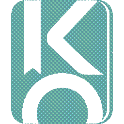
KOREADERKULLANIM KILAVUZU
26.11
Şu anda KOReader Kullanım Kılavuzu'nun İngilizce (ana) sürümünü okuyorsunuz. Gönüllüler tarafından çevrilmiş başka dil sürümleri de mevcuttur:
- Català (Katalanca)
- Čeština (Çekçe)
- Español (İspanyolca)
- Français (Fransızca)
- Gaeilge (İrlandaca)
- Italiano (İtalyanca)
- Lietuvių (Litvanca)
- Nederlands (Felemenkçe)
- Português Brasil (Brezilya Portekizcesi)
- Português Portugal (Portekiz Portekizcesi)
- Slovenčina (Slovakça)
- Slovenščina (Slovence)
- Tiếng Việt (Vietnamca)
- Български (Bulgarca)
- Српски (Sırpça)
- Українська (Ukraynaca)
- العربية (Arapça)
- தமிழ் (Tamilce)
- 简体中文 (Basitleştirilmiş Çince)
- 繁體中文 (Geleneksel Çince)
Şu anda çevirisi devam eden dilleri görmek ve kullanım kılavuzunun çevirilerine katkıda bulunmak için lütfen projemizin Weblate çeviri sayfasını ziyaret edin.

Bu rehber öncelikli olarak renkli ekranlar için hazırlanmıştır. İlk kez kullanıyorsanız bu rehberi bilgisayarda, tablette ya da telefonda okumanızı öneriririz. Çünkü KOReader'ı kullanmayı öğrenirken, kullanıcı arayüzü öğelerinin renkli olarak vurgulanmış halini görmek işinizi kolaylaştıracaktır. Tabii ki bu rehberi e-ink cihazınızda da okuyabilirsiniz fakat deneyim en uygun şekilde olmayacaktır.
Belirli bir konuyu veya anahtar kelimeyi bulmak için tarayıcınızın arama işlevini kullanabilirsiniz (genellikle Ctrl + F). Bu kullanıcı kılavuzuyla ilgili bir öneriniz, düzeltmeniz veya sorunuz varsa bu GitHub tartışma başlığına yazabilirsiniz.

Bu kılavuz insanlar tarafından
yazılmış ve denetlenmiştir
KOReader kullanıcı arayüzü (gri kutular) Bu öğeler her zaman KOReader'ın bir parçasını ifade eder. Ekranda dokunabileceğiniz/seçebileceğiniz/ayarlayabileceğiniz bir şey ya da uygulamanın bir özelliği olabilir: Durum çubuğu Yazı tipi kalınlığı |
Menü yolları (yeşil) Bunlar, ayarların ve menü öğelerinin KOReader menü sistemindeki konumlarıdır: |
Harici uygulamalar ve hizmetler (mor) Bunlar KOReader ile birlikte çalışan hizmetler veya uygulamalardır. Farklı bir renkle işaretlenmelerinin nedeni, KOReader projesinin bir parçası olmadıklarını ve dolayısıyla bizim denetimimizde olmadıklarını vurgulamak istememizdir: Calibre, Readwise, KoHighlights... |
İç bağlantılar (camgöbeği) Sonunda ev simgesi bulunan bu bağlantılar sizi bu kılavuzun diğer bölümlerine götürür: Parmak hareketleri |
Dış bağlantılar (mavi) Bunlar kılavuzun dışına giden normal bağlantılardır: Project Gutenberg |
Kılavuzun çeşitli yerlerinde size bilgi vermek veya uyarıda bulunmak amacıyla farklı kutucuklar da bulunmaktadır:
Ben bir İLERİ DÜZEY etiketiyim. Beni bir başlıkta görürseniz, bu, işleme bağlı olarak dosya sistemiyle çalışma, CSS bilgisi, harici dosyaların kurulumu gibi belirli düzeyde teknik bilgiye sahip olmanız gerektiği anlamına gelir.
Gezinme menüsündeki bu yıldızlar, kılavuzun son güncellemesinden bu yana yeni eklenen bölümleri gösterir. Ayrıca sayfanın köşesinde aynı yıldızları taşıyan iki düğme, yeni eklenen bölümler arasında doğrudan geçiş yapmanızı sağlar. Gezinme menüsündeki yıldızların tüm eklemeleri kapsamadığını unutmayın; kalabalığı önlemek için en küçük başlıklar orada gösterilmez. Ancak köşe düğmelerini kullanarak tüm eklemeleri görebilirsiniz.
KOReader, dünyanın dört bir yanındaki gönüllüler tarafından geliştirilmekte ve desteklenmektedir. Siz de şu yollarla bu projenin bir parçası olabilirsiniz:
- Hataları düzeltmek ve yeni özellikler eklemek
- Programı kendi dilinize çevirmek veya mevcut bir çeviriyi iyileştirmek
- Forumlarda ya da GitHub'daki issue'larda ve tartışmalarda, sahip olduğun bilgiyle başkalarına yardımcı olmak
Bağlantılar için Bize ulaşın bölümüne bakın.
- koreader.rocks: Şu anda adres çubuğunuzda görmeniz gereken resmi alan adımız. koreader.com dahil diğer alan adları BİZİM DEĞİLDİR!
- KOReader GitHub sayfası: Tüm işletim sistemleri ve cihazlar için resmi sürümleri buradan indirebilirsiniz.
- F-Droid sürümü: KOReader'ın tarafımızdan sunulan Android sürümü. KOReader'ın Play Store sürümü yoktur!
Minimalist görünümüne rağmen KOReader, son derece güçlü ve özelleştirilebilir bir uygulamadır. Bu bölüm, nasıl yapılır odaklı bir içindekiler tablosu gibidir. Yeni bir kullanıcıysanız başlamak için en doğru yer burasıdır. Burada KOReader'ın neler yapabildiğini keşfedebilir, bağlantıları izleyerek bunları nasıl yapacağınızı öğrenebilirsiniz.
- Destekleyen cihazlar için USB yığın depolama modu Kitapları okuyucunuza aktarma
- Uygun hesaplarla Bulut depolama (Dropbox/FTP/Webdav) Kitapları okuyucunuza aktarma
- KOReader bir SSH sunucusu olarak çalışabilir, böylece dosyaları doğrudan aktarmak için bir SFTP uygulaması veya dosya yöneticinizi kullanabilirsiniz Dahili eklentilerin listesi
- Calibre eklentisiyle kitapları Calibre Kütüphanenizden doğrudan wifi üzerinden KOReader cihazlarınıza gönderebilirsiniz Kitapları okuyucunuza aktarma
- Herkese açık OPDS (Open Publication Distribution System) kataloglarına erişin ya da kitaplığınıza ulaşmak için kendi sunucularınızı kullanın OPDS Kataloglarını Kullanma
- Haber indirici eklentisiyle RSS ve Atom haber girdilerini cihazınıza HTML dosyaları olarak indirebilirsiniz Dahili eklentilerin listesi
- Wallabag eklentisiyle Wallabag hesabınızdan makaleleri alabilirsiniz (Pocket gibi sunucu tabanlı bir sonra-oku hizmeti) Kitapları okuyucunuza aktarma
- Yazı tiplerini (kendi yazı tipleriniz dahil), yazı tipi boyutunu, kontrastı, kalınlığı, harf aralığını (kerning), kelime aralığını, kelime genişletmeyi, metin hizalamayı, satır aralığını, sütun düzenini, kenar boşluklarını değiştirin... E-KİTABINIZI BİÇİMLENDİRME
- Daha hızlı okumak için Perception Expander ve FastReader (RSVP) gibi hızlı okuma eklentilerini kullanın OKUMA GELİŞTİRMELERİ
- Kitaplarınızın nasıl işlendiğini hassas şekilde değiştirmek için dahili güçlü stil ince ayarlarını kullanın veya kendinizinkini yazın Stil ince ayarları
- Ekran renklerini gece modu için elle veya otomatik olarak tersine çevirin Otomatik Sıcaklık ve Gece Modu
- Ön ışık renk sıcaklığınızı otomatik olarak ayarlayın Otomatik Sıcaklık ve Gece Modu
- Metni farklı stiller ve renklerle vurgulayın, yer imleri ekleyin YER İMLERİ, VURGULAR VE NOTLAR
- Akademik/uzun vurgular için iki dokunuşlu mod KOReader vurgu modları
- Aksan değiştiricileri dahil özelleştirilebilir bir klavye kullanarak not ekleyin Klavye Kullanımı ve İpuçları
- Ekran görüntüsü alın Önceden Tanımlı Hareketler
- Okuma ilerlemesi, zaman aralığı ve takvim görünümleri dahil olmak üzere okuma istatistiklerinizi takip edin
- Notlarınızı ve vurgularınızı cihazınıza metin, markdown, HTML, JSON veya Kindle kupürleri biçiminde dışa aktarın Vurguları dışa aktarma
- Joplin, Readwise, Memos, Flomo ve XMNote gibi çevrim içi hizmetlerle eşitleyin Vurguları dışa aktarma
- Dosya ve klasörleri kopyalayabileceğiniz, taşıyabileceğiniz, yeniden adlandırabileceğiniz, oluşturabileceğiniz, silebileceğiniz ve toplu işlemler yapabileceğiniz güçlü Dosya Tarayıcısı Dosya Tarayıcısı Kullanımı
- Birçok ayrıntılı ve mozaik görünümle kütüphanenizi istediğiniz gibi görün Dosya Tarayıcısı Kullanımı
- Hızlı erişim için kitaplarınızı Favoriler'e ekleyin veya sıralama ve filtrelemeyle kendi Koleksiyonlarınızı oluşturun Koleksiyonlar
- Sayfalar, bölümler ve yer imleri arasında hızlıca atlamak için Gözden geçirme widget'ı Gözden Geçirme Widget'ı
- Tüm notlarınız ve vurgularınız dahil kitabınızın kuşbakışı haritasını görmek için benzersiz Kitap haritası Kitap Haritası
- Sayfalar arasında bir film şeridi gibi gezinmek için Sayfa tarayıcısı Sayfa Tarayıcısı
- Vurgularınıza ve notlarınıza kolayca göz atmak için Yer imleri tarayıcısı YER İMLERİ, VURGULAR VE NOTLAR
- Kitabınızla gelen içindekiler tablosunu beğenmezseniz otomatik veya elle alternatif bir içindekiler tablosu oluşturun İçindekiler Araçları
- Daha doğru sayfa sayıları için kitabınızın Ek, Dizin, Kaynakça gibi belirli bölümlerini gizleyin ve hariç tutun Bölümleri hariç tutma: Özel gizli akışlar
- 200'den fazla eylem içeren güçlü hareket sistemi, KOReader'ın her yönünü bir dokunuş veya kaydırmayla kontrol etmenizi sağlar Hareket Kategorileri
- Bir klavyeniz varsa (dahili, kablolu veya bluetooth) bu eylemlere klavye kısayolları da atayabilirsiniz Klavye Kısayolları
- Ya da Hızlı Menü ile favori eylemlerinizden oluşan kendi menülerinizi oluşturun ve onlara bir dokunuş veya kaydırmayla erişin Hızlı Menü
- KOReader'ın her yönünü kontrol etmek ve eylemleri otomatikleştirmek için Profiller oluşturun Profiller
- Metin seçerek veya girerek belgede arama yapın (düzenli ifadeler dahil)
- Yer imlerinizde, vurgularınızda ve notlarınızda arama yapın
- Metni Wikipedia'da veya yüklü sözlüklerde arayabilir, uzun basarak çevirebilirsiniz
- Metnin bölümlerini veya sayfanın tamamını 130'dan fazla dil arasında çevirin
- Metni çevrim içi veya yerel yapay zeka modelleriyle tartışın, çevirin veya açıklayın (eklentileri yükledikten sonra) Eklenti türleri
- KOReader kendini güncelleyebilir Cihaz İpuçları
- Belirli bir süre sonra ekran ışığınızı kısın veya kapatın
- Farklı okuma koşulları için sayfa yenileme aralıklarınızı ayarlayın Sayfa yenileme aralığını ayarlama
- Rastgele görseller, kitap kapağı, okuma, ilerleme vb. gibi birçok seçenek arasından kendi ekran koruyucunuzu ayarlayın.
- Derin deşarjı/aşırı şarjı önlemek için pil şarj sınırı alarmları ayarlayın Cihaz İpuçları
- Bir bellek kullanımı uyarısı ayarlayın (belleği küçük cihazlar için faydalıdır) ve isteğe bağlı olarak bu sınıra ulaşıldığında KOReader'ı yeniden başlatın Cihaz İpuçları
- Kenar boşluklarını otomatik veya manuel olarak kırpın
- Küçük ekranlarda metni çıkarıp daha kolay okumak için belgeleri yeniden akışa tabi tutun
- Taranmış eski kitaplar gibi metin katmanı olmayan belgelere OCR uygulayın OCR (Optik Karakter Tanıma)
- Bilimsel makaleler gibi çok sütunlu belgeleri kolayca okumak için farklı yakınlaştırma türleri ve sayfa akış yönleri Büyük PDF'leri küçük bir ekranda okuma
- Taranmış eski kitaplar gibi eğik belgeleri otomatik olarak düzeltin PDF'ye Özgü Alt Menü Öğeleri
- Vurgularınızı doğrudan PDF'lere kaydedin, böylece onları KOReader olmadan da görebilirsiniz Vurguları PDF'e kaydetme
- PDF'lerden vurguları içe aktarın ve bunları birçok farklı biçimde dışa aktarın PDF Vurgularını İçe Aktarma
- Manga okumak için özel Panel yakınlaştırma özelliği Panel yakınlaştırma özelliği
- Gölgelenme ile hız arasında mükemmel denge kurmak için ayarlanabilir ekran yenileme ayarları Sayfa yenileme aralığını ayarlama
- Kitaplar için kendi CSS stil ince ayarlarınızı ekleyin Stil ince ayarları
- KOReader'ın temel davranışlarını değiştirmenizi sağlayan Kullanıcı yamaları sistemi Kullanıcı yamaları
- Metin ve bağlantıları diğer cihazlarla paylaşmak için panonuzdan bir QR kod oluşturun
- Bir EPUB belgesinin HTML kaynağını görüntüleyin
- Cihazınızda metin dosyaları oluşturun ve düzenleyin
- Bir terminal emülatörü açın ve cihazınızda komutlar çalıştırın
- CPU, bellek ve pil kullanım istatistiklerinizi görün
KOReader PDF/PDB/XPS, EPUB/MOBI/FB2, DJVU, CBR/CBT/CBZ, DOCX/RTF, HTML/HTMLZ, TXT/MD ve CHM dosyalarını destekler. Ayrıca ZIP arşivlerini açabilir ve görüntü dosyalarını gösterebilir.
Belgelerinizi cihazınıza aktarmanın birçok yolu vardır. Aktarılan belgeleri dizinlemek için KOReader'ı yeniden başlatmanız gerekebileceğini unutmayın (Pocketbook/Android kullanıyorsanız dizini yenileyin).
Yerleşik okuyucu uygulamasıyla yapacağınız şekilde dosya aktarmaya ek olarak, cihazınıza bağlı olarak başka seçenekler de mevcuttur:
- KOReader içinde USB yığın depolama modu: Bu mod KOBO ve bazı CERVANTES cihazları için kullanılabilir.
- Bulut depolama (Dropbox/FTP/Webdav): Bu işlevi kullanmak için aşağıda gösterilen menü aracılığıyla bir bulut depolama sunucusu için hesap eklemeniz gerekir. Süreç, hesap eklerken menüdeki bilgi düğmeleri aracılığıyla açıklanmıştır:
- SSH/SFTP erişimi: KOReader bir SSH sunucusu gibi davranabilir, böylece dosyaları aktarmak için bir bilgisayardan erişebilirsiniz (Kobo, Kindle, Cervantes'te kullanılabilir). Bir SFTP uygulaması (Filezilla gibi) kullanabilir veya işletim sisteminiz destekliyorsa dosya yöneticiniz üzerinden erişebilirsiniz. Nasıl yapılacağını öğrenmek için wiki sayfamıza bakın ve aşağıdaki uyarı kutusuna da göz atın.
- Calibre aktarımı: Calibre eklentisi ile belgeleri Calibre Kitaplığınızdan doğrudan KOReader cihazlarınıza Wi-Fi bağlantısı üzerinden gönderebilirsiniz. Nasıl yapılacağını öğrenmek için wiki sayfamıza bakın.
- Haber indirici: Bu eklenti ile RSS ve Atom haber girdilerini HTML dosyaları olarak indirebilirsiniz. Nasıl yapılacağını öğrenmek için wiki sayfasına bakın.
- OPDS (Open Publication Distribution System) katalogları: Herkese açık kataloglara erişebilir ya da kitaplığınıza ulaşmak için kendi sunucularınızı kullanabilirsiniz. Daha fazla bilgi: OPDS Kataloglarını Kullanma
- Wallabag: Bu eklenti ile Wallabag'dan (Pocket gibi sunucu tabanlı bir sonra-oku hizmeti) makaleleri alabilirsiniz. Daha fazla bilgi için wiki sayfasına bakın.
Kitaplarınıza erişmek için aşağıdaki yöntemler mevcuttur:
- Dosya Tarayıcısı - Ayrılmış bölüm burada: Dosya Tarayıcısı kullanımı
- Favoriler - Dosya Tarayıcısı'nda kitaplarınıza uzun basarak ekleyebileceğiniz bir liste
- Geçmiş - Açtığınız kitapların listesi
- Koleksiyonlar - Oluşturduğunuz kişiselleştirilmiş kitap listeleri. Ayrılmış bölüm burada: Koleksiyonlar
Bu ekranların nasıl göründüğünü şuradan değiştirebilirsiniz:
Bu ekranlarda kaç öğenin görünür olacağını değiştirmek istiyorsanız, buraya bakın:
Bu diyalogların her biri için parmak hareketleri atayabilirsiniz. Örneğin bir kitap okurken, Geçmiş'inize veya Favoriler'inize bir parmak hareketiyle erişebilir ve Dosya Tarayıcısı'na gitmeden başka bir kitap açabilirsiniz.
Geçmiş ekranında, sol üstteki hamburger menü düğmesinden dosya adına veya kitap üst verilerine göre bir kitap arayabilirsiniz.
KOReader'ı Dosya Tarayıcısı yerine Favoriler veya Geçmiş ekranıyla başlayacak şekilde de ayarlayabilirsiniz:
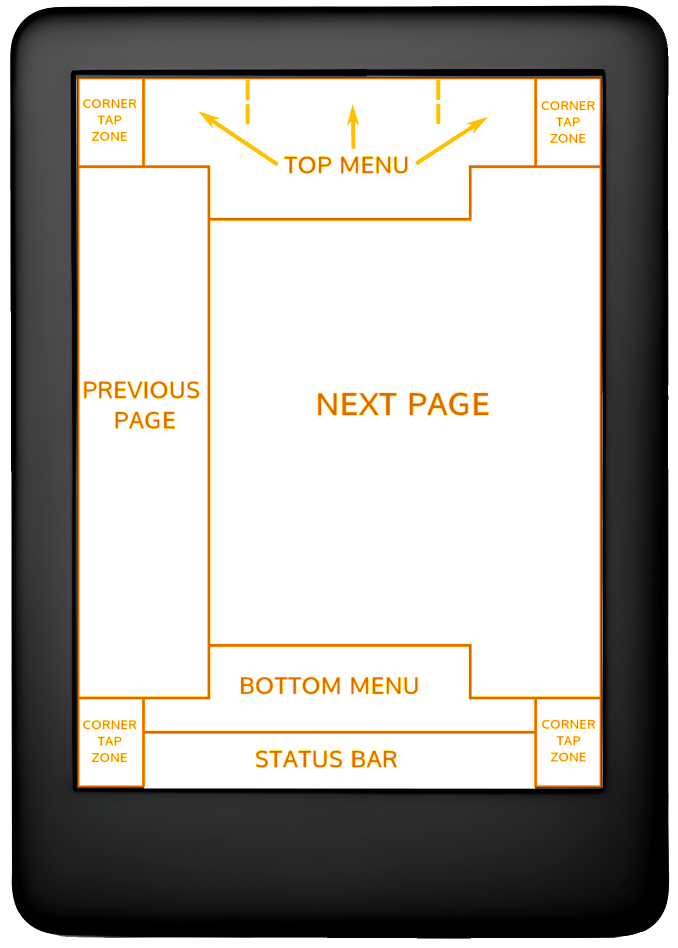
Yukarıdaki görselde, KOReader'ın varsayılan dokunma bölgelerinin konumlarını görebilirsiniz. Üst menü'yü veya alt menü'yü göstermek için belirtilen bölgelere dokunabilirsiniz. Ayrıca üst menü'yü göstermek için üst bölgeyi aşağı doğru kaydırabilirsiniz. Kindle 4 gibi dokunmatik olmayan cihazlarda, ENTER/OK eylemine karşılık gelen düğmeye basarak alt menü'yü açabilirsiniz.
Her iki menüyü aynı anda açmak istiyorsanız, bu menü aracılığıyla üst menü bölgesini hem üst hem de alt menüyü aynı anda açacak şekilde ayarlayabilirsiniz:
 / Dokunuşlar ve Parmak Hareketleri / Menüyü Etkinleştir
/ Dokunuşlar ve Parmak Hareketleri / Menüyü EtkinleştirKöşe dokunma bölgeleri, DOKUNMA, ÇİFT DOKUNMA, İKİ PARMAKLA DOKUNMA ve DOKUNUP TUTMA dahil olmak üzere birçok farklı parmak hareketi türü için kullanılabilir.
ÖNCEKİ SAYFA ve SONRAKİ SAYFA bölgeleri aynı zamanda ÇİFT DOKUNMA hareketleri için de kullanılabilir.
Yalnızca tek bir öğe görünüyorsa, durum çubuğu bölgesine dokunarak durum çubuğu öğeleri arasında geçiş yapabilirsiniz. Tüm öğeler görünüyorsa dokunmak durum çubuğunu gösterir veya gizler.
Bunlar başlamanız için birkaç hızlı ayardan ibarettir. Ayrıntılı anlatım için lütfen kılavuzun E-KİTABINIZI BİÇİMLENDİRME bölümünü okuyun. Çoğunlukla metni ayarlamak için kullanılan Alt Menü hakkında daha fazla bilgiyi buradan edinebilirsiniz: Alt Menü Öğeleri
| Yazı tipini değiştirme* | |
| Metin boyutunu ayarlayın | ALT MENÜ /  |
| Metni koyulaştır | |
| Ekrandaki renkleri tersine çevirin (siyah üzerine beyaz) | ÜST MENÜ / / Gece Modu |
Ekran ışığınızı bu menü aracılığıyla kontrol edebilirsiniz. Sıcak aydınlatmanız varsa (normal beyaz LED'ler + turuncu olanlar), bunları bu iletişim kutusundan ayrı ayrı kontrol edebilirsiniz. Bu iletişim kutusu için bir parmak hareketi de tanımlayabilirsiniz:
/ Ön IşıkBu menü aracılığıyla ekran koruyucu olarak bir kitap kapağı veya özel bir görsel seçebilirsiniz:
/ Ekran / Uyku ekranıEkran koruyucu olarak JPG/PNG dosyalarını kullanabilirsiniz (düzgün ditherlenmiş gri tonlamalı görseller en iyi sonucu verir). Dosyaları bilgisayarınızdan cihazınızdaki herhangi bir klasöre aktarın. Ve bu klasörü, bu menü aracılığıyla ekran koruyucu klasörünüz olarak seçin:
/ Ekran / Uyku ekranı / Duvar kağıdı / Özel görsellerEkran koruyucu görselleri hazırlama hakkında ileri düzey bilgi için lütfen şu Mobileread forum gönderisine bakın.
Klavye kısayolları hakkında bilgi arıyorsanız, o bölüme gitmek için buraya tıklayın. Bu başlık yalnızca klavye kullanımını açıklar.
- Klavyeyi kapatmak için giriş alanının dışına dokunun, klavyeyi tekrar göstermek için giriş alanına dokunun
- Harfin büyük harf versiyonunu girmek için tuşları yukarı kaydırın (zaten shift modundaysanız küçük harf)
- Klavyenin görünümünü değiştirebilirsiniz:
ÜST MENÜ / / Cihaz / Klavye / Klavye ayarları
- Birden fazla düzen seçebilirsiniz:
ÜST MENÜ / / Cihaz / Klavye / Klavye düzeni
- Klavyedeki
 simgesine dokunarak seçtiğiniz düzenler arasında geçiş yapabilirsiniz
simgesine dokunarak seçtiğiniz düzenler arasında geçiş yapabilirsiniz
KOReader klavyesi, bir tuşa dokunup basılı tutulduğunda ekstra karakterler girilmesine olanak tanır. En sık kullanılan ekstra karakterler aşağıda gösterilmiştir. Çevresindeki karakterleri görmek için gri kutudaki tuşa dokunup basılı tutabilirsiniz:

Uzun basma açılır penceresine ek olarak, bir tuşun üzerinde kaydırma yaparak da bu ekstra karakterleri girebilirsiniz. Aşağıdaki örnekte, büyük harf A girmek için a tuşunda yukarı kaydırabilir veya gösterilen karakterleri girmek için diğer yönlere kaydırabilirsiniz. Gösterilen örneğin, gösterim amacıyla tam açılır pencereyi içerdiğini unutmayın. Bu açılır pencereyi açmanıza gerek yok, doğrudan tuşların üzerinde kaydırma yapabilirsiniz. Ekstra karakterlerin konumlarına alıştıktan sonra, bu şekilde onları çok daha hızlı girebilirsiniz.

Bu özellik kullanımınızı engelliyorsa, işaretini kaldırarak devre dışı bırakabilirsiniz:
/ Cihaz / Klavye / Ek karakterler girmek için kaydırAyrıca metin işlemeyi kolaylaştıran bazı kısayollar da var. Ekstra eylemler için bu tuşları dokunup basılı tutabilirsiniz:
- Sol Ok - İmleci satırın başına taşır
- Sağ Ok - İmleci satırın sonuna taşır
Ayrıca backspace tuşu üzerinde kaydırma hareketleri yaptığınızda farklı davranır:
- Dokunma: Bir karakteri sil
- Uzun basma: Tüm satırı sil
- Sola kaydırma: İmlecin solundaki kelimenin bir kısmını sil
- Yukarı kaydırma: Tüm kelimeyi sil
Daha fazla bilgi için ilgili wiki sayfasını kontrol edebilirsiniz.
KOReader ayrıca basitleştirilmiş ve geleneksel Çince karakterleri girmek için Çince vuruş klavyesini de bütünleştirir. Bununla ilgili daha fazla bilgiyi wiki sayfamızda bulabilirsiniz.
Bu eklenti, doğal (sarı/turuncu) ışığa sahip cihazlarda ön ışık sıcaklığını ayarlamanıza ve bir programa göre otomatik olarak gece modunu (ters çevrilmiş ekran renkleri – siyah arka plan üzerinde beyaz metin) ayarlamanıza olanak tanır. İkisini birden kontrol edebilir ya da diğerini elle ayarlayabilmeniz için yalnızca sıcaklık kontrolü veya yalnızca gece modu kontrolü modunu seçebilirsiniz.
Bu eklenti, KOReader'ı yüklediğinizde varsayılan olarak etkin gelir. Herhangi bir sebeple menüde değilse, buradan etkinleştirebilirsiniz:
Ekranınızın ön ışık sıcaklığını iki farklı şekilde otomatik olarak ayarlayabilirsiniz:
Sabit program: Bu modda ön ışık sıcaklığınız girdiğiniz günlük programa göre değişir. Bu mod statiktir, gün ışığı süresini hesaba katmaz. Program yıl boyunca aynı kalır.
Güneşin konumu: Bu seçenek, girdiğiniz koordinatlar ve rakım bilgilerine göre bulunduğunuz konumdaki Güneş'in konumunu hesaplar. Ön ışık sıcaklığı, bu hesaplanan Güneş konumu verisine göre kademeli olarak ayarlanır. Bu mod dinamiktir. Yıl boyunca gün ışığı süresi değiştikçe, eklenti programı buna göre ayarlar.
Önce eklentide kullanılan terimlere aşina olmak için bu görsele bir göz atın:

- Eklenti menüsüne gidin: ÜST MENÜ / / Ekran / Otomatik Sıcaklık ve Gece Modu
- Etkinleştir menü öğesine dokunun ve ardından Sabit programa göre'ye dokunun
- Önceki menüye geri dönün ve Sabit program ayarları menü öğesine dokunun
- Buradaki çeşitli öğeler için saatleri ayarlayarak sıcaklık geçiş programınızı belirleyin. Öğelerin açıklaması için yukarıdaki görsele bakın.
- Eklenti menüsüne gidin:
ÜST MENÜ / / Ekran / Otomatik Sıcaklık ve Gece Modu
- Etkinleştir menü öğesine dokunun ve ardından Güneşin konumuna göre'ye dokunun
- Önceki menüye geri dönün ve Konum ayarları menü öğesine dokunun. Koordinatlarınızı (gerekli) ve rakımı (isteğe bağlı) doğru şekilde ayarlayın ve konumunuza bir isim verin.
- Önceki menüye geri dönün ve Sıcaklık ve gece modu ayarları menü öğesine dokunun
- Buradaki çeşitli öğeler için saatleri ayarlayarak sıcaklık geçiş programınızı belirleyin. Öğelerin açıklaması için yukarıdaki görsele bakın.
Mevcut programınızı Şu anda aktif parametreler menü seçeneği aracılığıyla görebilirsiniz.

Farklı aralıklar için sıcak ışık yüzdelerini ayarlarken, o aralığı Gece Modu'na da ayarlayabilirsiniz; bu mod, o aralık başladığında ekran renklerini tersine çevirir. Minimum ön ışığınız hâlâ çok parlaksa veya koyu sayfa arka planını tercih ediyorsanız bu özelliği etkinleştirebilirsiniz. Bunu etkinleştirmek için aşağıdaki iletişim kutusunda Gece modu onay kutusuna dokunun ve Ayarla'ya dokunun.
Bunu yaptığınızda, menüde bu aralığın yanında bir ay simgesi görünecektir. Gece modunu devre dışı bırakmak için o aralıktaki Gece modu onay kutusunu devre dışı bırakın.

Bu özellik, bu eklentideki Şu anda aktif parametreler'e göre ön ışığınızı gün batımında açar ve gün doğumunda kapatır. Ön ışığınızı manuel olarak açıp/kapatarak bu değişikliği geçersiz kılabilirsiniz. Bir sonraki gün doğumunda/batımında, gerekirse OtomatikSıcaklık onu tekrar değiştirir. Bu eklentideki Gündüz ön ışığını kapat menü öğesini seçerek etkinleştirebilirsiniz.
Ön ışık sıcaklığınızın daha kademeli bir değişim yerine hızlı değişmesini istiyorsanız:
- Yukarıdaki talimatları izleyerek modu Sabit program olarak ayarlayın
- Ve ayarları aşağıdaki görsele benzer şekilde düzenleyin:

Yukarıdaki bu ayarlarda görebileceğiniz gibi, gündüz-gece geçişi arasında yalnızca bir dakika fark vardır. Dolayısıyla ekran sıcaklığı yalnızca bir dakika içinde 0'dan 100'e (veya tersine) gider. Geçiş süresini uzatmak için bu zaman aralığını artırabilirsiniz.
KOReader, basit ve ağırlıklı olarak siyah-beyaz bir kullanıcı arayüzüne sahiptir; çünkü degradeler ve farklı gri tonları, e-ink ekranlarda yanıp sönme ve hayalet görüntülere neden olabilir, bu da okuma deneyimini olumsuz etkileyebilir.
KOReader'ın 2 ana arayüzü vardır: okuma ekranı ve dosya tarayıcısı. Burada okuma ekranı'nı açıklayacağız. Dosya tarayıcısı rehberin bu bölümünde açıklanmaktadır.
OKUMA EKRANI'nın iki menüsü vardır:
- ÜST MENÜ, belgenin genel yönetimine ve KOReader ayarlarına ilişkin menü öğelerini içerir.
- ALT MENÜ, yazı tipi ağırlığı/boyutu, satır aralığı vb. gibi belge biçimlendirme seçeneklerine odaklanır. Metin görünümünüzü ayarlarken çoğunlukla ALT MENÜ ile etkileşime gireceksiniz.


Yukarıdaki görsel, bir kitap okurken okuyucu ekranınızda görebileceğiniz öğeleri göstermektedir:
- Gösterge simgeleri: Bu simgeler, devam eden belirli işlemler ve durumlar hakkında sizi bilgilendirir. Bunları belirli işlemler sırasında ekranınızın sol üst köşesinde göreceksiniz. Normalde daha küçüktürler, ancak burada netlik için daha büyük gösteriyoruz. Bir sonraki başlık bu gösterge simgelerini ayrıntılı olarak açıklamaktadır: Gösterge simgeleri
- Durum çubuğu: Kitabınız ve KOReader hakkında çeşitli bilgileri görebileceğiniz, son derece özelleştirilebilir bir alandır. Bölüme gitmek için buraya tıklayın: Durum çubuğu
- Alternatif Durum çubuğu: Varsayılan Durum çubuğu'na ek olarak, etkinleştirirseniz sayfanın üstünde görünen bir Alt durum çubuğu bulunmaktadır. Ayrıntılar için buraya tıklayın: Durum çubuğu
- Yayıncı sayfa numaraları: Kitabınızın yayıncısı kitabın basılı sürümündeki sayfa numaralarını eklediyse, bunları bu şekilde görürsünüz. Yayıncı sayfa numaraları hakkında daha fazla bilgi için buraya tıklayın: Sayfa Numaralandırma
- Vurgulama türleri: Farklı vurgulama türlerini burada görebilirsiniz. Ayrıca cihazınızın uygun bir ekranı varsa renkli vurgulamalar yapabilirsiniz. Bölüme gitmek için buraya tıklayın: Yer İmleri, Vurgulama ve Notlar
- Not işaretçisi: Not işaretçisi simgesi, bir vurgulamaya not eklediğinizde görünür. Farklı not işaretçisi türlerimiz bulunmaktadır. Daha fazla bilgi için buraya tıklayın: Yer İmleri, Vurgulama ve Notlar
KOReader, yukarıdaki görselde görebileceğiniz gibi, belirli devam eden işlemler ve durumlar hakkında sizi bilgilendirmek için bazı göstergeler içerir. Bunları belirli işlemler sırasında ekranınızın sol üst köşesinde göreceksiniz.
  |
Kısmi oluşturma simgeleri Bu simge grubu, kısmi oluşturma prosedürüne aittir ve muhtemelen bu simgeleri diğerlerinden daha sık göreceksiniz. Bu simgeleri alt menü'deki ayarları değiştirdiğinizde görürsünüz. Bu özellik, tüm kitap yerine yalnızca mevcut bölümü oluşturarak metin görünümü ayarlamalarını çok daha hızlı önizlemenizi sağlar. Ayrıca bu özellik sayesinde ekran yönünüzü döndürmek de artık çok daha hızlıdır. Bu özellik varsayılan olarak ETKİN'dir. Gerekirse, her kitap için (bir dokunuşla) veya genel olarak (uzun dokunuşla) devre dışı bırakılabilir: ÜST MENÜ /
/ Belge / Kısmi oluşturmayı etkinleştirDeğişikliklerinizi onayladıktan sonra tüm kitabın yeniden oluşturulması gerekir, bu nedenle bu çok adımlı bir prosedürdür. Bu simgeler, aşağıda açıklandığı gibi oluşturma aşamasını gösterir: |
|
Bu aşamada belge kısmen oluşturulur. Sayfa sayısı, alt bilgi ve birçok şey hatalıdır. Yeni ayarların nasıl göründüğünü görebilir ve daha fazla ayarlama yapabilirsiniz. Bu durumda sayfaları çevirebilir, bağlantılara atlayabilirsiniz. |
Arka planda tam bir oluşturma gerçekleşiyor. Sayfaları çevirebilir, bağlantılara atlayabilir, ayarları değiştirebilirsiniz. |
|
Tam oluşturma tamamlandı, ancak henüz uygulanmadı; çünkü KOReader, kitabın geri kalanını yeniden yüklemek için sizin boşta olmanızı bekliyor (boşta=cihazla etkileşim kurmamak). Sayfaları çevirebilir, bağlantılara atlayabilir, ayarları değiştirebilirsiniz. |
|
|
Bir süredir boştasınız, bu nedenle KOReader şu anda tüm belgeyi yeniden yüklüyor. Bu adımda KOReader, etkileşimi önlemek için engellendi. |
 |
Vurgulama simgesi Bu simge, Seç ve vurgula modunda olduğunuzda görünür. KOReader, birden fazla sayfaya yayılabilen uzun vurgulamalar yapmak için bir vurgulama başlatmanıza ve sayfaları çevirmenize olanak tanıyan ek bir vurgulama moduna sahiptir. Bu konuyu bu rehberin YER İMLERİ, VURGULAMA VE NOTLAR bölümünde okuyabilirsiniz. Bu modda bir vurgulama başlattığınızda, hâlâ vurgulama modunda olduğunuzu hatırlatmak için bu simge köşede gösterilir. Pasajın sonunu seçerek vurgulamanızı bitirdiğinizde veya vurgulamanızı iptal ettiğinizde (vurgulamanızın başına veya bu vurgulama simgesine tekrar dokunarak) kaybolur. |
 |
Pokemon topu simgesi Bu simge, bir kelimeye uzun süre bastığınızda (kasıtlı veya yanlışlıkla) görünür. KOReader'ın normal bir uzun basma menüsü vardır. Ayrıca parmağınızı 3 saniyeden uzun tuttuğunuzda açılan ek bir çok uzun basma menüsü bulunur. Bu simge, bu çok uzun basma menüsünü etkinleştirdiğiniz anlamına gelir. |
 |
Çevirme modu simgesi Bu simge, aşağıdaki durumlarda sol üst köşeye dokunduğunuzda görünür:
Bu mod, kırpma olmaksızın tam sayfayı ekranınıza sığacak şekilde ölçeklenerek geçici olarak görüntüler. Bu modda sayfaları çevirebilirsiniz. Bu moddan çıkmak için bu simgeye dokunun. |
KOReader'ın, varsayılan olarak etkin olan bir Alt durum çubuğu ve etkinleştirirseniz sayfanın üstünde görünen bir Alternatif durum çubuğu olmak üzere iki durum çubuğu bulunmaktadır. Bu Alternatif durum çubuğu yalnızca yeniden akışlı belgelerde (epub, html, docx, rtf, txt…) kullanılabilir.
Alt durum çubuğu, aktif olarak bakımı yapılan daha yeni olandır. Alternatif durum çubuğu, KOReader'ın önceki sürümlerinden kalan bir unsurdur, bu nedenle ona yeni özellikler eklemiyoruz. Ancak yine de faydalı bulursanız bu Alternatif durum çubuğunu etkinleştirebilirsiniz. Şuradan etkinleştirebilirsiniz:
/ Alternatif Durum ÇubuğuAlternatif durum çubuğunu bu menüden yapılandırabilirsiniz:
/ Durum Çubuğu / Alternatif durum çubuğuBu bölümün geri kalanındaki talimatlar Alt durum çubuğu içindir.
Durum çubuğundaki ilerleme çubuğu normalde tüm kitaptaki ilerlemenizi gösterir. Ancak bunun yerine mevcut bölümdeki ilerlemenizi de gösterebilir. Bu, örneğin bir kitabın çok sayıda kısa bölümü varsa yararlı olabilir. Bu durumda mevcut bölümdeki ilerlemenizi görmek zor olabilir, bu nedenle bölüm durum çubuğu burada daha bilgilendirici olabilir. Bu özelliği şu menüden etkinleştirebilirsiniz:
/ Durum Çubuğu / İlerleme Çubuğu / Bunun yerine bölüm ilerleme çubuğunu gösterAyrıca normal ve bölüm ilerleme çubukları arasında geçiş yapmak için bir parmak hareketi atayabilirsiniz. Bu eylemi şurada bulabilirsiniz:
Alt durum çubuğunu bu menüden yapılandırabilirsiniz. Durum çubuğunuzu istediğiniz gibi özelleştirmek için AYARLAR alt menüsünü keşfetmekten çekinmeyin.
/ Durum ÇubuğuDurum çubuğunda gösterebileceğiniz birçok öğe vardır. Ancak varsayılan olarak aynı anda yalnızca bir tanesi gösterilir ve aralarında geçiş yapmak için durum çubuğuna dokunmanız gerekir. Tüm öğeleri aynı anda göstermek istiyorsanız, buradan etkinleştirin:
/ Durum Çubuğu / Öğeleri yapılandır / Seçili tüm öğeleri aynı anda gösterDurum çubuğu öğelerini sıralama:
/ Durum Çubuğu / Öğeleri yapılandır / Durum çubuğundaki öğeleri düzenle / Durum çubuğu / İlerleme çubuğu / Genişliği minimumda kilitleDurum çubuğu öğelerinin yazı tipini buradan değiştirebilirsiniz:
/ Durum çubuğu / Öğeleri yapılandır / Öğe yazı tipiDurum çubuğu için yüklü tüm yazı tiplerinizi kullanabilirsiniz. Çok fazla bilgi sığdırmak istiyorsanız, DINish Condensed yazı tipini önerebiliriz; bu yazı tipini proje sayfasından indirip burada anlatılan aynı yöntemle yükleyebilirsiniz: Kendi yazı tiplerinizi kullanma
KOReader durum çubuğunda dinamik dolgu adında özel bir öğe bulunur. Bu görünmez öğeyi durum çubuğunuza eklerseniz, aşağıdaki görselde gördüğünüz gibi şişirilmiş bir balon gibi genişleyerek kullanılabilir alanı doldurur ve diğer öğeleri iki yana iter (dinamik dolgu mavi bir dikdörtgen olarak gösterilmiştir):

Bu öğeyi de diğer durum çubuğu öğeleri gibi aynı menüden etkinleştirip taşıyabilirsiniz. Düzeninizi daha da ayarlamak için bu öğeyi aşağıda açıklanan özel metin öğesiyle de birleştirebilirsiniz.
Özel metin adlı özel bir durum çubuğu öğesi bulunmaktadır. Bu öğe, seçtiğiniz metni durum çubuğunda gösterebilir. Aşağıdaki örnekte görebileceğiniz gibi, durum çubuğu öğeleri arasında ayırıcı oluşturmak için de bu özelliği kullanabilirsiniz:

- Önce bu menüden üzerine kısa basarak bu seçeneği etkinleştirin
ÜST MENÜ / / Durum Çubuğu / Durum çubuğu öğeleri / Özel metin: ‘KOReader’
- Ardından ayarlarını açmak için tekrar uzun basın. İlk kutuya bir "boşluk" karakteri girin ve ikinci kutuya tekrar sayısını girin; bu, ayırıcınızın ne kadar geniş olacağını belirler.
Ayırıcı olarak başka bir karakter seçebilirsiniz. Gruplarınızı ayarlamak için sırasını değiştirmek amacıyla bu öğeyi diğer durum çubuğu öğeleri gibi taşıyabilirsiniz.
Düzeninizi daha da ayarlamak için bu öğeyi yukarıda açıklanan dinamik dolgu öğesiyle birlikte de kullanabilirsiniz.
KOReader birden fazla durum çubuğu düzenine sahip olmanıza ve bunlar arasında geçiş yapmanıza olanak tanır. Bu özelliği kullanarak aşağıdaki örneklerde olduğu gibi farklı durumlar için farklı düzenler oluşturabilirsiniz:
- Daha geniş yatay yönlendirme kullanılırken daha fazla öğe gösteren bir düzen
- Belirli kitapları okurken bölüm adı öğesini içeren bir düzen
- Büyük çizgi romanları okurken belleğinizi gözetim altında tutmak için bellek kullanımı öğesini içeren bir düzen
Bir ön ayar oluşturmak için önce durum çubuğunuzu öğeler ekleyip sıralayarak (bu bölümde daha önce açıklandığı gibi) isteğinize göre ayarlayın. Ardından şunu seçin:
/ Durum çubuğu / Durum çubuğu ön ayarları / Geçerli ayarlardan yeni ön ayar oluşturBu işlem mevcut durum çubuğu düzeninizle bir ön ayar oluşturur. Oluşturmak istediğiniz diğer düzenler için bunu tekrarlayın. Bundan sonra yeni düzenleriniz arasında aynı menüden geçiş yapabilirsiniz. hareketleri, profilleri ve hızlı menüyü kullanarak durum çubuğu ön ayarlarınız arasında hızlıca geçiş de yapabilirsiniz.
Harici içerik, KOReader eklentilerinin durum çubuğunda içerik göstermesini sağlayan özel bir durum çubuğu öğesidir. Örneğin Okuma Zamanlayıcısı eklentisi, zamanlayıcıyı durum çubuğunda göstermek için bu öğeyi kullanır. Şu an için bunu elle etkinleştirmeniz gerekmez, ancak burada bulabilirsiniz:
/ Durum çubuğu / Durum çubuğu öğeleri / Harici içerikBurada yalnızca menüyü tanımanız amacıyla üst menü yapısındaki öğelere genel bir bakış sunacağız. Ayrıntılı bilgiye bu rehberin ilgili bölümleri altında ulaşabilirsiniz.

- GEZİNME: Bu menü, o anda okuduğunuz kitapta gezinmenizi sağlayan öğeleri içerir. İçindekiler tablosu, yer imleri, kitap haritası...
- DİZGİ: Bu menü, kitabınızın görünümünü değiştirmenizi sağlayan öğeleri içerir. Yazı tipi ayarları, biçem düzenlemeleri...
-
AYARLAR: Bu menü, KOReader ve cihazınız için ayarları içerir. E-ink, ışık, parmak hareketi ayarları...
- ARAÇLAR: Bu menü, KOReader'ın işlevselliğini genişletebilen eklentileri içerir.
- ARAMA: Bu menü, arama ve sorgulama ile ilgili öğeleri içerir. Metin araması, sözlük, çeviri, Vikipedi...
- DOSYA TARAYICISI: Bu düğme, kitaplığınızı yönetmeye yönelik arayüz olan dosya tarayıcısını açar.
 ANA MENÜ: Bu menü, geçmiş, favoriler, koleksiyonlar gibi kitaplarınıza erişim araçlarını içerir. Ayrıca kitap bilgisi, güncelleme ve çıkış öğeleri de bu menünün altındadır.
ANA MENÜ: Bu menü, geçmiş, favoriler, koleksiyonlar gibi kitaplarınıza erişim araçlarını içerir. Ayrıca kitap bilgisi, güncelleme ve çıkış öğeleri de bu menünün altındadır.

Görünüm modu: Sürekli moda geçerseniz belgeyi bir web sayfası gibi kaydırabilirsiniz. Bu mod, e-ink dışındaki ekran türleri (LCD, OLED) için daha uygundur. Sürekli modda üst ve alt kenar boşluklarını kaybedersiniz, bu nedenle ekranın ilk ve son satırında metin kesilebilir. Bu sorunu çözmek için Sayfa örtüşmesini etkinleştirebilirsiniz:
Oluşturma modu: Bu seçenek, belgenizin KOReader tarafından nasıl oluşturulacağını belirler. Varsayılan değer WEB'dir ve genellikle bu ayarı değiştirmenize gerek yoktur. Bir kitap (veya kaydedilmiş web sayfası) çok karmaşıksa (belirli genişlikler veya kenar boşlukları, negatif kenar boşlukları, kayan öğeler vb.) ve düzen kötü görünüyorsa ya da ekrandan taşıyorsa, diğer oluşturma modlarını deneyebilirsiniz.
Yakınlaştırma (dpi): Bu ayar, belge için bir genel yakınlaştırma faktörü olarak düşünülebilir (yazı tipi boyutu hariç). 96 dpi'de (varsayılan ayar) belgedeki görseller orijinal boyutlarında oluşturulur. Temel olarak bu ayarı, metni büyütmeden görselleri büyütmek istediğinizde kullanacaksınız.

Kelime aralığı ve Kelime genişletme ayarları birbiriyle ilişkilidir ve metninizin iki yana yaslı hizalamada nasıl görüneceğini belirler. Metni iki yana yasladığınızda, her satırın her iki kenarının da kenar boşluklarıyla hizalanması için kelimeler arasına boşluk eklenir. Satırlardaki kelime sayıları her zaman eşit olmadığından, iki yana yaslı hizalamada satırı doldurmak için metin sıkıştırılmak veya genişletilmek zorunda kalır.
Kelime aralığı: Bir metin satırındaki boşluk karakterlerinin daha fazla kelime sığdırmak için ne kadar sıkıştırılabileceğini belirler. Bu ayar kelimeleri etkilemez, yalnızca aralarındaki boşluğu değiştirir.
Kelime genişletme: Bir satırda çok fazla boşluk varsa, bu boşluğun ne kadarının kelimeleri genişleterek dağıtılabileceğini belirler. Bu ayar kelimelerin görünümünü etkiler. Kelimelerinizin genişlemesini istemiyorsanız bunu yok olarak ayarlayın.
Metin size hoş görünene kadar farklı ayarları deneyebilir, ardından bunları ilgili iletişim kutuları aracılığıyla varsayılan olarak ayarlayabilirsiniz.
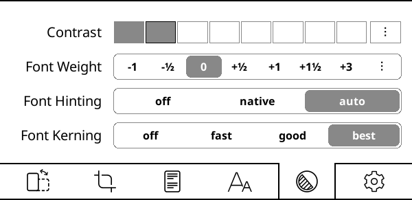
Kontrast ve Yazı tipi ağırlığı, metninizi daha kalın (veya daha ince) yapmak için kullanabileceğiniz iki seçenektir. Bu seçeneklerin her biriyle aynı görünümü elde edebilirsiniz, ancak farklı yöntemler kullanırlar. Elbette ikisini aynı anda da kullanabilirsiniz.
Aralarındaki farklar şöyle özetlenebilir:
+ Yazı tipi genişliğini değiştirmez, kitap uzunluğu aynı kalır
+ Belgeyi yeniden oluşturmaya gerek duymaz, daha hızlıdır
- LCD veya düşük DPI ekranlarda kötü görünebilir
+ Yüklüyse uygun ağırlıklı yazı tiplerini kullanır
+ LCD veya düşük DPI ekranlarda daha iyi görünür
- Yazı tiplerini yeniden oluşturmak zorundadır, daha yavaştır
Yazı tipi kerning, görsel açıdan hoş bir sonuç elde etmek için harfler arasındaki boşluğu ayarlar. Varsayılan değer en iyi seçeneğidir; bu seçenek dosyaları açarken (cihazınıza bağlı olarak) daha yavaş olabilir, ancak bağlı harfler için daha iyi desteğe sahiptir (örnek için aşağıdaki resme bakın), birleşik Arapça glifleri ve diğer bazı yazı sistemleri. Cihazınız yavaşsa, daha hızlı olan ve batı latin yazı metinleriyle hâlâ doğru görünebilen iyi seçeneğini deneyebilirsiniz.

Yazı tipi ipucu (hinting), bir yazı tipindeki karakterleri e-mürekkep ekran gibi düşük çözünürlüklü bir ızgaraya uyacak şekilde ayarlayan tipografik bir tekniktir. Etkinleştirildiğinde, özgün yazı tipi tasarımında hafif bir bozulma pahasına daha keskin ve daha kolay okunan karakterler elde edilir.
Yazı tipi ipucunun farkı, standart çözünürlüklü ekranlarda veya küçük yazı boyutlarında daha belirgindir. Çok yüksek çözünürlüklü bir ekranda pikseller yeterince küçük olduğundan fark çok daha az fark edilir.
Daha ayrıntılı bir karşılaştırma:
İpucu KAPALI
|
İpucu AÇIK
|
|
|
KOReader'da yazı tipi ipucu varsayılan olarak etkindir ve yazı tipinin kendi iç talimatları yerine FreeType kütüphanesinin ipucu algoritmasını kullanır (yazı tipinin iç talimatları bozuk olabileceğinden, güvenli olması için). Ancak daha iyi görünüp görünmediğini anlamak için yazı tipi tasarımcısının yazı tipi dosyasına gömdüğü talimatları deneyebilirsiniz:
- Kapalı İpucu verme (hinting) devre dışıdır.
- Yerel KOReader, yazı tipinin kendi iç ipucu talimatlarını kullanır.
- Otomatik (varsayılan olarak açık) KOReader, yazı tipinin iç ipucunu yok sayarak FreeType'ın ipucu algoritmasını kullanır. CJK metinleri daha iyi işler.

Alternatif durum çubuğu, yalnızca yeniden akışlı belgelerde (EPUB, HTML, DOCX, RTF, TXT…) kullanılabilen alternatif bir durum çubuğunu etkinleştirir. Burada etkinleştirdikten sonra alternatif durum çubuğunu şu yoldan yapılandırabilirsiniz:
/ Durum Çubuğu / Alternatif durum çubuğuGömülü stil ve gömülü yazı tipleri, belgeye gömülü yayıncı stillerinin ve yazı tiplerinin belgeyi oluşturmak için kullanılıp kullanılmayacağını (veya yoksayılıp yoksayılmayacağını) belirler. Bunlar genel açma/kapama anahtarlarıdır. Belgeniz için daha ince ayarlı düzenlemeler şu yoldan yapılabilir:
Görsel ölçekleme, belgenizde yer alan görsellerin nasıl oluşturulacağını belirler. En iyi daha hoş görünür, ancak daha yavaştır.
KOReader'ın kullanıcı arayüzü ve seçenekleri, açtığınız dosya türüne bağlı olarak değişebilir. İki ana belge kategorisi vardır:
- Sabit düzenli belgeler (pdf, djvu, görsel dosyalar...)
- Yeniden akışlı belgeler (epub, html, docx, rtf, txt…).
KOReader'ın pek çok özelliği vardır, bu nedenle menü sistemi bu karmaşıklığı yansıtır. Menü öğelerini hızla bulmak için bir Menü Arama özelliğimiz mevcuttur. Bir menü öğesinin adını hatırlıyor ancak nerede olduğunu hatırlamıyorsanız bu özelliği kullanabilirsiniz:
/ Yardım / Menü aramaAyrıca bu özelliği bir parmak hareketine atayabilir veya daha hızlı erişim için Hızlı Menünüze ekleyebilirsiniz.
Alt menüde bir seçeneğin adına uzun dokunursanız açıklamasını görebilirsiniz. |
|
Arayüz dilini şu yoldan değiştirebilirsiniz: ÜST MENÜ /
/ Dil |
|
Kullanıcı arayüzünün boyutunu değiştirmek istiyorsanız bunun için bir DPI ayarı mevcuttur: ÜST MENÜ /
/ Ekran / Ekran DPIMenüden bir değer seçebilir veya ince ayar yapmak için değer girmek üzere Özel dpi seçeneğini seçebilirsiniz: Daha Yüksek DPI = Daha Büyük Arayüz. Alt çubukta ayrıca bir Yakınlaştırma (dpi) ayarının da bulunduğunu unutmayın. Bu ayar yalnızca belgelerle ilgilidir. Açıklamasını bir sonraki bölümde bulabilirsiniz. |
Bir seçeneğe veya menü öğesine (yazı tipi ağırlığı, satır aralığı vb.) uzun dokunursanız değerini VARSAYILAN olarak ayarlayabilirsiniz. Yeni değer yalnızca bundan sonra açılan kitaplara uygulanır. Daha önce açılan kitaplar ayarlarını korur. Varsayılan değerleri menüde yıldız (★) olarak veya aşağıda görüldüğü gibi göstergelerin etrafındaki siyah kenarlık olarak tanıyabilirsiniz: 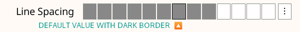  |
Tam ekran iletişim kutularını (Geçmiş, İçindekiler, Okuma İstatistikleri vb.) aşağı kaydırarak kapatabilirsiniz. (Yer İmleri penceresi hariç. Bunu kapatmak için herhangi bir çoklu kaydırma parmak hareketi kullanabilirsiniz) |
Parmağınızla uzun çapraz bir kaydırma hareketi yaparak ekran görüntüsü alabilirsiniz. Ayrıca karşı köşegendeki köşelere aynı anda dokunmak da ekran görüntüsü alır. Bu ikinci hareketi örneğin bir görsel görüntülerken kullanabilirsiniz. Cihazınızda klavye varsa Alt + Shift + G kısayoluyla da ekran görüntüsü alabilirsiniz. |
Bir kitabın rastgele bir sayfasını açmak istiyorsanız, herhangi bir parmak hareketine atayabileceğiniz bir Rastgele sayfaya atla eylemi mevcuttur. Bu eylem Parmak Hareketi Yöneticisi'nin Okuyucu kategorisindedir. |

Yukarıdakine benzer ayar ok düğmeleri içeren iletişim kutularında, değeri daha büyük artışlarla değiştirmek için ok düğmelerine uzun dokunabilirsiniz. Bu tür iletişim kutularını (tam ekran olmayan) pencerenin dışına dokunarak kapatabilirsiniz. Bu tür iletişim kutularını pencere başlığını basılı tutarak ve sürükleyerek taşıyabilirsiniz. Bu tür iletişim kutularını pencere başlığına uzun dokunarak yarı saydam hale getirebilirsiniz (bir değeri ayarlarken altındaki metni görmek istediğinizde). |
Yeni klasör oluşturma - Bir konum seçmeniz gereken durumlarda (bulut depolama, arşive taşı eklentisi, dışa aktarıcı eklentisi), KOReader size Dosya Tarayıcımıza benzer bir ekran sunar. Seçim yaparken yeni bir klasör oluşturmak istiyorsanız:
|
KOReader, EPUB ve taranmış PDF/DJVU belgelerinde sözlük aramasını destekler. Sözlük tanımını veya çeviriyi görmek için bir kelimeye uzun dokunun. Bir kelimeye uzun basıldığında, seçimi belgede daha fazla görünüm için arayabileceğiniz veya Vikipedi'de arayabileceğiniz bir iletişim kutusu açılır. |
sözlük ve wikipedia sonuçlarını görüntülerken, bu pencerelerdeki sözcük(ler)e uzun basarak onları sözlükte/wikipedia'da arayabilirsiniz. Sonuç başka bir pencerede açılır, böylece önceki aramanızı kaybetmezsiniz. Önceki ipucunda anlatıldığı gibi birden fazla arama penceresi açtıysanız, kapatma X düğmesine uzun basarak hepsini tek seferde kapatabilirsiniz. |
Güncel tarihi öğrenmek istiyorsanız ÜST MENÜ'deki saate dokunabilirsiniz. |
KOReader'ın üç tür dokunmatik kaydırma modu vardır. Buna şu yoldan erişebilirsiniz:
/ Dokunmalar ve Parmak Hareketleri / Kaydırma- Klasik kaydırma: Bu mod, telefonunuzun/tabletinizin kaydırmasıyla tamamen aynı şekilde çalışır.
- Turbo kaydırma: Bu mod, klasik kaydırmadan daha hızlı kaydırmanızı sağlar. Ayrıca parmağınızı kaldırmadan birkaç sayfa kaydırabilirsiniz. Kaydırma miktarı, kaydırmayı başlattıktan sonra parmağınızı hareket ettirdiğiniz mesafeyle orantılıdır.
- Bırakma kaydırması: Bu kaydırma türü e-ink ekranlar için daha uygundur. Çünkü diğer kaydırma türlerinin aksine bu mod, kaydırma sırasında sayfanızı sürekli yenilemez. Klasik kaydırma gibi çalışır ancak ara adımlar gösterilmez. Dolayısıyla parmağınızla kaydırıp bıraktığınızda sayfa o konuma atlar. Bu özellikle kitabınızda resimler veya tablolar varsa ve tamamını görmek istiyorsanız görünümü yeniden konumlandırmak ve ayarlamak için oldukça kullanışlıdır.
Bu kullanışlı özellik, tarayıcınızdaki Geri düğmesi gibi çalışır. Hızlı göz atma bileşeni, Yer imleri listesi, Kitap haritası vb. kullanarak kitabın başka bir bölümüne atladığınızda KOReader önceki konumunuzu hatırlar. Bu, örneğin dahili bir bağlantıyı veya referansı takip ettiğinizde kullanışlıdır. Tek bir dokunuşla geldiğiniz yere geri dönebilirsiniz. Bu özelliğe şu yoldan erişebilirsiniz:
Aynı menüden ileriye de gidebilirsiniz. Bu özellik çoklu kaydırma parmak hareketine atanmıştır. İsterseniz bunu başka bir harekete atayabilir (örneğin bir köşeye dokunma) veya Hızlı Menünüze ekleyebilirsiniz.
KOReader, normalde görsel içeren sayfalarda tam yenileme yapar (siyah bir parıltı olarak gözlemleyebilirsiniz). Bunun nedeni, önceki sayfadan kalan artıkları ve hayalet görüntüleri temizlemektir. Ancak bu, cihazınıza ve kişisel tercihlerinize bağlı olarak gerekli olmayabilir. Bu otomatik yenileme davranışını burada devre dışı bırakabilirsiniz:
/ Ekran / E-ink Ayarları / Tam yenileme hızı / Görsel içeren sayfalarda her zaman parıldaAyrıca sizi rahatsız ediyorsa kullanıcı arayüzünün siyah parıltısını buradan devre dışı bırakabilirsiniz:
/ Ekran / E-ink AyarlarıKOReader'da belgenizde gezinmenin her birinin kendine özgü güçlü yanları olan farklı yolları vardır. Şunları kullanabilirsiniz:
- Hızlı Göz Atma Bileşeni
- Kitap Haritası
- Sayfa Tarayıcısı
Hızlı Göz Atma Bileşeni çok işlevsel bir gezinme aracıdır. Bunu şu amaçlarla kullanabilirsiniz:
- İlerleme çubuğuna doğrudan dokunarak veya sayfa numarası girerek kitabınızın herhangi bir bölümüne atlayın
- Bölümler arasında gezinin
- Yer imleri arasında gezinin
Hızlı Göz Atma Bileşeni nasıl açılır:
- Ekranınızın alt kısmındaki Durum Çubuğu alanına uzun dokunarak
- Bu menüden:
- Buna bir parmak hareketi atayabilirsiniz
- Hızlı Menünüze ekleyebilirsiniz
Önce aşağıdaki diyagrama hızlıca bakalım. İki farklı Hızlı Göz Atma Bileşeni olduğunu göreceksiniz. Aynı işlevlere sahipler, yalnızca boyutları farklı:
- TAM BOYUTLU HIZLI GÖZ ATMA BİLEŞENİ: KOReader'ı kurduğunuzda göreceğiniz varsayılan hızlı göz atma bileşenidir. Kompakt hızlı göz atma bileşeninden daha büyüktür, bu nedenle düğmelere basmak daha rahat olur. Bu bileşen ekranın ortasında açılır.
- KOMPAKT HIZLI GÖZ ATMA BİLEŞENİ: Bu, varsayılan hızlı göz atma bileşeninin daha dar sürümüdür. Örneğin vurgu yapıyorsanız daha yararlı olabilir. Bu bileşen daha küçük olduğundan ve ekranın üstünde veya altında açıldığından, sayfayı varsayılan bileşen kadar engellemez.
Kompakt hızlı göz atma bileşenini kullanmak istiyorsanız bunu bu menüden Üst veya Alt seçeneğini belirleyerek yapabilirsiniz:
/ Gezinme / Hızlı göz atma iletişim kutusu konumu:Şimdi diyagrama geri dönelim. Bazı düğmelerde farklı renklerde iki açıklama olduğunu görebilirsiniz: mavi ve turuncu. Bu, bu düğmenin iki işlevi olduğu anlamına gelir: normal basma eylemi ve uzun basma eylemi. Normalde basarsanız MAVİ işlevi gerçekleştirir. Daha uzun basarsanız TURUNCU işlevi gerçekleştirir.

Numaralı öğelerin açıklamaları (uzun basma eylemi kalın olarak belirtilmiştir):
- Önceki bölümün başına atla / Kitabın ilk sayfasına atla
- Önceki yer imine atla / Kitaptaki ilk yer imine atla
- Geçerli sayfayı yer imine ekle / Yer imleri iletişim kutusunu aç
- Sonraki yer imine atla / Kitaptaki son yer imine atla
- Sonraki bölümün başına atla / Kitabın son sayfasına atla
- Bu kadar sayfa geriye (-) veya ileriye (+) atla
- Bu sayı geçerli sayfa numarasını gösterir. Üzerine dokunursanız, doğrudan atlamak için sayfa numarası veya yüzde girmenizi sağlayan bir iletişim kutusu açılır. Uzun basarsanız, hızlı göz atma bileşenini açtığınız sayfaya geri götürür. Bu, örneğin kitabın başka bir bölümünü hızlıca kontrol etmek ve kaldığınız yerden okumaya dönmek istediğinizde kullanışlıdır.
- Bu, ilerleme çubuğudur. İnce çizgiler, bölümlerin başlangıcını gösteren bölüm işaretleridir. Kitabın o bölümüne atlamak için bu ilerleme çubuğuna dokunabilirsiniz. Küçük oklar, geçerli oturumda bu kitabı okumaya başladığınız yeri işaret eden oturum başlangıç oklarıdır. Bu oklar kitaplar arasında geçiş yaptığınızda sıfırlanır.
- Kompakt hızlı göz atma bileşenindeki bu düğme, 7 numaralı öğenin uzun basma işleviyle aynı şekilde çalışır. Sizi hızlı göz atma bileşenini açtığınız sayfaya geri götürür. Bu, örneğin kitabın başka bir bölümünü hızlıca kontrol etmek ve kaldığınız yerden okumaya dönmek istediğinizde kullanışlıdır.
KOReader, belgelerinizdeki bölüm sınırlarını HIZLI GÖZ ATMA BİLEŞENİNDE ve İLERLEME ÇUBUĞUNDA gösterebilir.
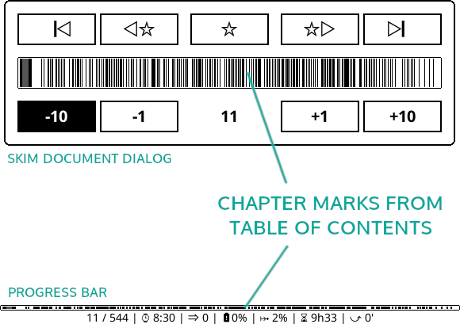
Belgenizde çok fazla başlık düzeyi varsa, bölüm işaretleriniz yukarıdaki örnekte olduğu gibi kalabalık görünebilir. Görünür İçindekiler tablosu işaret düzeylerinin derinliğini şu yoldan değiştirebilirsiniz:

Bu azaltılmış İçindekiler tablosunu şu amaçlarla da kullanabilirsiniz:
- bölüm başlıkları (eğer Durum Çubuğunda gösteriliyorsa)
- bölüm gezintisi
- kalan okuma süresi tahminleri
Bu seçenekler aynı menüdedir.
Belgenizde İçindekiler tablosu yoksa, ALTERNATİF İÇİNDEKİLER TABLOSUNU etkinleştirebilirsiniz. Bu ayar etkinleştirildiğinde, KOReader belge başlıklarından (varsa) veya EPUB'daki ayrı HTML dosyalarından bir İçindekiler tablosu oluşturur. Daha fazla bilgi için bu menü öğesine uzun basın:
KOReader'da mevcut içindekiler tablosu araçları hakkında daha fazla bilgiyi kılavuzun ilgili bölümünde bulabilirsiniz: İÇİNDEKİLER TABLOSU ARAÇLARI
Gezinmeyi öğrendikten sonra şimdi bir belgede sayfaların nasıl işaretleneceğini öğreneceğiz. Bu, belgemizin farklı bölümleri arasında hızla geçiş yapmamızı sağlar.

Bir belgede sık sık atladığınız bir sayfa varsa (örneğin bir kitabın Kaynakça sayfaları bölümü), oraya kolayca gitmek için bu sayfayı sabitleyebilirsiniz. Her kitap için yalnızca bir sabitlenmiş sayfa olabilir; dolayısıyla atlanacak daha fazla yere ihtiyacınız varsa aşağıdaki Yer imleri özelliğine göz atın.
Bir sayfa nasıl sabitlenir/sabitlemesi kaldırılır:
- Gözden geçirme widget'ını açın.
- Gözden geçirme widget'ında sayfa numarasına basın.
- Bir iletişim kutusu açılır ve orada Geçerli sayfayı sabitle düğmesini görürsünüz. Sayfayı sabitlemek için normal basın ya da sabitlemeyi kaldırmak için uzun basın.
Bu iletişim kutusuna aşağıdaki menüden de ulaşabilirsiniz; bu menüye ulaşmak için bir hareket de atayabilirsiniz:
Sabitlenmiş sayfanıza nasıl gidilir:
- Gözden geçirme widget'ını açın.
- Gözden geçirme widget'ında sayfa numarasına basın.
- Açılan iletişim kutusunda Sabitlenmiş sayfaya git düğmesine basın.
Nasıl geri dönülür:
Sabitlenmiş sayfaya gittikten sonra şu menü eylemiyle önceki okuma konumunuza dönebilirsiniz:
Geri dönmek için tek parmakla önce sola sonra sağa kaydırma hareketini de kullanabilirsiniz.
Bu eylemlere Hareketler atarsanız sabitleme/atlama çok daha hızlı olur:
- Örneğin Geçerli sayfayı sabitle eylemine bir hareket atayabilirsiniz.
- Sabitlenmiş sayfaya git eylemine de başka bir hareket.
- Ve Önceki konuma geri dön eylemine de başka bir hareket
Artık yalnızca üç dokunuşla bir sayfayı hızla sabitleyebilir, okurken oraya gidebilir ve geri dönebilirsiniz. Elbette bu eylemleri Hızlı Menü öğenize de ekleyebilirsiniz.

Bir sayfanın sağ üst köşesine dokunarak yer imi ekleyebilir (ve kaldırabilirsiniz). Bu, basılı bir kitapta sayfanın köşesini kıvırmanın karşılığıdır ve yer imi eklediğinizde köşede benzer bir simge gösterilir.
Yer imlerinize Yer imleri penceresinden erişebilir, ardından ilgili sayfaya gitmek için yer imlerine dokunabilirsiniz:
Bu pencereyi iki parmakla sola kaydırma hareketiyle ya da tek parmakla önce yukarı sonra sola kaydırarak hızlıca açabilirsiniz.
Kitap haritası, bir kitaba genel bakış elde etmek için çok faydalı olabilen, KOReader'a özgü güçlü bir özelliktir. Örneğin bir kitabı bazı bölümleri atlayarak doğrusal olmayan bir şekilde okuyorsanız, ilerlemenizi takip etmek zorlaşabilir. Kitap Haritası, kitabın hangi bölümlerini zaten okuduğunuzu tek bakışta gösterebilir.
Ayrıca şunları yapabilirsiniz:
- Her sayfada ne kadar zaman geçirdiğinizi görün (eğer Okuma İstatistikleri eklentisi etkinse)
- Hangi sayfalarda yer imi, vurgu ve not bulunduğunu kontrol edin
- HIZLI GÖZ ATMA BİLEŞENİ gibi kitabın herhangi bir bölümüne doğrudan gidin
Kitap Haritasına menü aracılığıyla erişebilir ve daha hızlı erişim için bir parmak hareketi de atayabilirsiniz:
Bir kitabı okurken Kitap Haritasını ilk kez açtığınızda, kitabın içeriğine en iyi ilk genel bakışı sunmak için tüm bölümleri tek ekranda sığdıran Izgara Görünümü modunda olacaktır. Kullanım hakkında ayrıntılı bilgi edinmek için sol üst köşedeki bilgi simgesine dokunun. Kitap Haritasını sağ üst köşedeki X düğmesine dokunarak veya herhangi bir çoklu kaydırma hareketiyle (YUKARI-AŞAĞI, SOL-SAĞ vb.) kapatabilirsiniz.

- Bölüm sınırları
- Siyah çubuklar okunan sayfaları gösterir. Daha yüksek çubuklar sayfada daha fazla zaman geçirildiği anlamına gelir.
- Yer imi simgesi, adından da anlaşılacağı üzere yer imi eklenmiş sayfaları gösterir.
- Çizgili kare simgesi vurgu içeren sayfaları gösterir.
- Kalem simgesi not içeren sayfaları gösterir.
- Daire içindeki sayılar önceki konumlarınızı gösterir. Menüden Önceki konuma geri dön seçeneğini seçtiğinizde sırayla bu konumlara geri atlarsınız.
- Üçgen geçerli sayfanızı gösterir.
- Dikey kaydırma çubuğu geçerli görünüm düzeyinizi gösterir.
- Dikey kaydırma çubuğu geçerli sayfa genişliği düzeyinizi gösterir.
Kitap Haritasını bu seçenekleri değiştirerek özelleştirebilirsiniz:
- Önce ekranın alt kenarı boyunca SOLA ve SAĞA kaydırmayı deneyin; sayfaları gösteren sütunların genişliğini değiştirin ve haritanın ölçeğinin nasıl değiştiğini gözlemleyin.
- Ardından ekranın sol kenarı boyunca YUKARI ve AŞAĞI kaydırmayı deneyin; bölüm başlığı derinliğini değiştirin ve Düz Görünüme geçin. Aşağıdaki örneklere bakın.
Yukarıdaki varsayılan Izgara Görünümüne ek olarak, burada solda Düz Görünümü ve sağda bölüm başlıkları olmayan Izgara Görünümünü görebilirsiniz. Görünümler arasında değişen sol dikey kaydırma çubuğuna dikkat edin. Varsayılan görünüme geri dönmek istiyorsanız sol üst köşedeki bilgi simgesine uzun basabilirsiniz.


Kitap haritası ekranındaki menü simgesine dokunduğunuzda yukarıdaki menü karşınıza çıkar. Menü seçenekleri aşağıda açıklanmaktadır:
- Kitap haritası hakkında: Kitap haritası kullanımı ve simge açıklamalarının kısa bir özeti.
- Kullanılabilir hareketler: Bu menüyü kullanmak yerine Kitap haritasının ayarlarını değiştirmek için kullanabileceğiniz hareketler.
- Dokunulduğunda sayfa tarayıcısı: Bu seçenek işaretliyse, Kitap haritasında bir sayfaya dokunduğunuzda Sayfa tarayıcısı açılır. Bu, seçtiğiniz alanın genel görünümünü gösterir. Bu seçeneği devre dışı bırakırsanız, Kitap haritasındaki bir dokunuş sizi doğrudan o sayfaya götürür. Ancak ekran boyutu, dokunmatik ekranın hassasiyeti, dokunuşun isabetliliği gibi etkenlere bağlı olarak bitişik sayfalardan birine geçebileceğinizi unutmayın.
- Geçerli/başlangıç görünümleri arasında geçiş: Kitap haritası görünümünü özelleştirdiyseniz, buna dokunmak varsayılan görünüm ile özelleştirilmiş görünümünüz arasında geçiş yapar.
- Izgara/düz görünümler arasında geçiş: Bölümlerin ayrı ayrı gösterildiği görünüm ile bölümlerin kesintisiz gösterildiği görünüm arasında geçiş yapar.
- Bölüm düzeyleri: Bölüm/alt bölüm düzeylerinin derinliğini değiştirin.
- Sayfa yuvası genişliği: Her bir sayfa yuvasını genişletin veya daraltın.
- 10 sayfalık işaretçiler: Bu değeri artırdıkça, önce her 10. sayfaya işaretçi eklenir, ardından işaretçiler büyütülür ve son olarak her 5. sayfaya işaretçi eklenir.
Sayfa Tarayıcısı, sayfaların küçük resimlerini ızgara şeklinde göstererek bir fotoğraf albümünde olduğu gibi sayfalar arasında gezinmenizi sağlar. Sayfa Tarayıcısını Kitap Haritasına dokunarak veya menüden açabilirsiniz. Daha kolay erişim için bir hareket de atayabilirsiniz.

Sayfa Tarayıcısı kullanımı aşağıda açıklanmıştır. Bu açıklamaları görmek için bu ekrandaki sol üst köşedeki hamburger menü düğmesine de dokunabilirsiniz. Aynı düğmeye uzun basmak, alt şertteki bölüm başlıklarını ekler/kaldırır.
- Sütun sayısını artırmak / azaltmak için bu üst kenar üzerinde sola / sağa kaydırın.
- Satır sayısını artırmak / azaltmak için bu sol kenar üzerinde yukarı / aşağı kaydırın.
- Görüntülenen sayfaları kaydırmak için sayfa alanını kaydırın. Yukarı / aşağı bir satır (örnekte 2 sayfa), sola / sağa bir ekran (örnekte 4 sayfa) kaydırır.
- Herhangi bir sayfayı okuma görünümünde açmak için o sayfaya dokunun.
- Alt alanda bir sayfaya dokunmak, küçük resim görünümünü o sayfaya odaklar. Sola / sağa kaydırmak bir şerit genişliği kadar atlar.
- Alt alandaki simgeler Kitap Haritası içinde kullanılanlarla aynıdır ve o bölümde açıklanmıştır.
Kitap haritası ve sayfa tarayıcısının, hamburger menülerinden etkinleştirebileceğiniz farklı bir gölgelendirme düzenine sahip bir Alternatif teması vardır. Bu tema bölüm başlıkları için dönüşümlü renkler kullanır; böylece Kitap haritası ve Sayfa tarayıcısı içinde bölüm sınırları daha belirgin olur. Ancak bu temada gri renk kullanımı siyaha yanıp sönmeyi gerektirdiğinden bazı kullanıcılar için dikkat dağıtıcı olabilir. İkisini de deneyip beğendiğinizi kullanabilirsiniz.
KOReader durum çubuğundaki sayfa numaraları belge türüne göre farklı davranır; bazıları sabittir, bazıları ise dinamik olarak değişir. Aşağıdaki görselde KOReader'ın sayfa numaralandırma sistemine genel bir bakışı görebilirsiniz. Bu bölümü okurken bu şemaya geri dönebilirsiniz.
Gördüğünüz gibi, KOReader'ın açabildiği belgeler aşağıda açıklayacağımız iki kategoriye ayrılabilir:
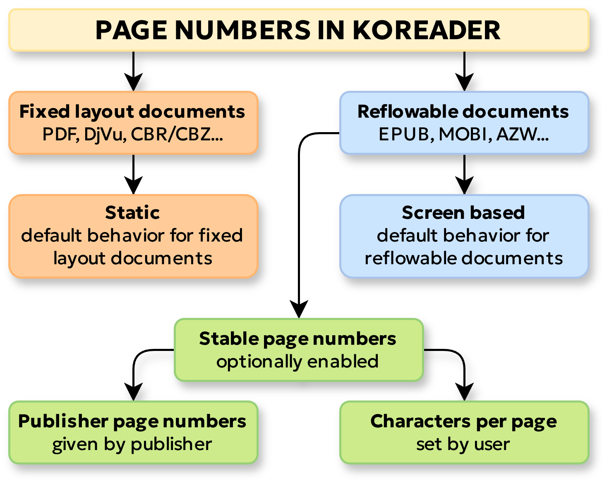
PDF, DjVu ve CBR/CBZ bu tür belgelere örnektir. Yeniden akış yapmayan belgeler olarak da bilinen bu belgelerin düzeni sabittir. Yani sayfadaki her öğe (metin ve görsel) tam olarak konumlandırılmıştır ve ister küçük ister büyük bir ekranda okuyun, konumları asla değişmez. Gördüğünüz tasarım her zaman basılı bir sayfanın birebir kopyasıdır.
Sabit düzenli belgelerde yalnızca statik sayfa numaraları bulunur. Bu tür belgeleri KOReader'da açtığınızda durum çubuğunda gördüğünüz sayfa numaraları belgenin kendisine aittir. Statik sayfa numaraları okuma cihazının türüne veya ekran boyutuna göre değişmez.
EPUB, MOBI, AZW, HTML bu tür belgelere örnektir. Bu belgelerin düzeni sabit değildir. Yani metin ve diğer içerikler, belgeyi görüntülediğiniz ekranın veya pencerenin boyutuna uyacak şekilde uyarlanabilir (yeniden akabilir).
Bu tür belgeleri, doğal olarak sayfa sonları bulunmayan çok uzun metin dosyaları ya da web sayfaları gibi düşünebilirsiniz. Bu belgeleri açtığınızda KOReader, ilk açılışta bu uzun belgeyi ekran boyutunda sayfalara bölerek sayfa numaralarını hesaplar. Bunun sonucunda, bir belgeyi 10 inçlik bir okuyucuda açarsanız kitabınız 6 inçlik bir okuyucudakinden daha az sayfaya sahip olur; çünkü daha büyük ekranın tek bir sayfasına daha fazla sözcük sığar (sayfa başına daha fazla sözcük = toplamda daha az sayfa).
Bu aynı zamanda, metnin görünümünü değiştirirseniz (örneğin yazı tipini büyüterek) sayfa numaralarınızın da değişeceği anlamına gelir. Çünkü daha büyük bir yazı boyutunda ekrana daha az metin sığar ve toplam sayfa sayısı artar.
Değişken yapıları nedeniyle yeniden akışlı belge sayfa numaraları atıf yapmak için pek kullanışlı değildir. Bir PDF dosyasını (sabit düzenli bir belge) e-okuyucunuzda ve bilgisayarınızda aynı anda açtığınızda 42. sayfa her iki cihazda da her zaman aynı içeriği gösterir. Ancak bir EPUB dosyasında bir cihazdaki 42. sayfa diğerindekinden farklı olur.
Şimdi şunu sorabilirsiniz: "EPUB gibi yeniden akışlı bir belgede değişmeyen sayfa numaralarına sahip olmak mümkün mü?" Evet, kararlı sayfa numaraları özelliğiyle mümkün. KOReader'da iki tür kararlı sayfa numarası vardır:
- Yayıncı sayfa numaraları:
KOReader, yayıncıların basılı kitaplardaki sayfa numaralarını doğrudan e-kitap sürümüne yerleştirmesine olanak tanıyan yayıncı sayfa numaraları özelliğine sahip belgeleri destekler. Bu özelliği etkinleştirdiğinizde KOReader sayfa numaralarını kendisi hesaplamaz. Bunun yerine size yayıncının yerleştirdiği sayfa numaralarını gösterir. Bu, durum çubuğunuzda gördüğünüz sayfa numarasının kitabın basılı sürümüyle eşleştiği anlamına gelir.
Bu özelliği şuradan etkinleştirebilirsiniz:
Aynı menüden Kararlı sayfa numaralarını kenar boşluğunda göster seçeneğini de işaretlerseniz, bu yayıncı sayfa numaraları metnin yanında küçük bir yazı tipiyle gösterilir.
- Sayfa başına karakter:
Peki kitabınızda yayıncı sayfa numaraları yoksa (çoğunda yoktur) ama yine de kararlı sayfa numaralarına ihtiyacınız varsa?
O zaman KOReader'ın sayfa başına karakter özelliğini etkinleştirebilirsiniz. Bu özelliği kullandığınızda KOReader sayfa numaralarını (ekran boyutunuz yerine) belirlenmiş bir sayfa başına karakter sayısına göre hesaplar. Örneğin KOReader'ı "1500 karakteri tek bir sayfa olarak sayacak" şekilde ayarlayabilirsiniz (bu ayarın varsayılan değeridir ve İngilizcede kabaca 250 sözcüğe karşılık gelir). Yaklaşık 250 sözcük de standart bir cep boyu ciltsiz/PA5 biçimli kitabın tek bir sayfasıdır.
Dolayısıyla bu özelliği etkinleştirdiğinizde sayfa sayınız, belirtilen boyutta basılmış gerçek bir kitabınkine benzer olur. Elbette farklı kitap boyutlarını taklit etmek için bu sayfa başına karakter ayarını menüden değiştirebilirsiniz.
Bir kitabın basılı sürümüne sahipseniz, toplam sayfa sayısını basılı kitapla eşleştirmek için sayfa başına karakter sayısını ayarlayabilirsiniz; böylece bir pasajı diğer sürümde bulmak daha kolay olur.
Bir belge için kararlı sayfa numaralarını etkinleştirdiğinizde şu değişiklikler olur:
- Durum çubuğunuz okunan/kalan/toplam sayfa sayıları için kararlı sayfa numaralarına geçer.
- Dosya tarayıcısı bu belgenin toplam sayfa sayısı için kararlı sayfa numaralarını gösterir.
- Yer imleri, İçindekiler ve Sayfa tarayıcısı kararlı sayfa numaralarını gösterir.
- Bu belgedeki vurgularınızı dışa aktarırsanız, dışa aktarılan dosya vurgu ve not konumları için kararlı sayfa numaralarını içerir.
Karşılaştığınız bazı dijital kitaplarda düzgün bir içindekiler tablosu (ToC) bulunmayabilir. Kitabın hazırlanış biçimine bağlı olarak şu İçT sorunlarıyla karşılaşabilirsiniz:
- Kitapta içindekiler tablosu yoktur, bu yüzden bölümler arasında geçiş yapamaz veya kalan okuma sürelerini göremezsiniz
- Bir içindekiler tablosu vardır ancak bölüm başlıkları yanlış veya eksik olduğu için pek kullanışlı değildir
KOReader, içindekiler bölümü sorunlu olan kitapları okurken kullanabileceğiniz bazı özelliklere sahiptir.
Alternatif içindekiler özelliğinin, içindekiler oluşturmak için HTML etiketleri gerektirdiğinden PDF, DJVU vb. sabit düzenli belgelerde kullanılamadığını unutmayın. Özel içindekiler ve Özel gizli akışlar özellikleri tüm dosya türlerinde kullanılabilir.
İlk özellik, şu konumda bulabileceğiniz Alternatif içindekiler özelliğidir:
Alternatif içindekiler, kitabınızdaki başlıklardan (EPUB'ınızdaki HTML dosyalarında bulunan H1 ile H6 arasındaki etiketler) bir içindekiler oluşturmaya çalışır. Kitabınızda hiç başlık yoksa, belge parçalarından (EPUB kitabınızdaki tek tek HTML dosyaları) her dosyanın başına işaret eden bir içindekiler oluşturmaya çalışır.
İçindekilere hangi başlık düzeylerinin dahil edileceğini (veya yok sayılacağını) şu menüden seçebilirsiniz:
Özel içindekiler özelliği, kitabınızın seçtiğiniz kısımlarından kendi içindekiler tablonuzu oluşturmanızı sağlar. Bu içindekiler yalnızca tek bir düzey içerebilir, bu nedenle bu özelliği kullanırken alt bölümleriniz olamaz. Kendi içindekilerinizi oluşturmak için önce şunu etkinleştirin:
Bu özelliği etkinleştirdiğinizde kullanıcı arayüzüne bölümlerinizi seçmenizi sağlayan yeni menü öğeleri eklenir. İçindekilerinize iki yerden bölüm ekleyebilirsiniz:
- Bir vurgudan: Bir kitap okurken, vurgular gibi bir metin seçin ya da bir sözcüğe uzun basın. Açılan menüde İçindekiler bölümünü başlat öğesini görürsünüz. Buna bastığınızda bölüm başlığınızı girmenizi isteyen bir iletişim kutusu açılır. Seçtiğiniz metin iletişim kutusuna zaten girilmiş olur. Gerekirse başlığınızı düzenleyin ve oluştur düğmesine basın.
- Sayfa tarayıcısından: Sayfa tarayıcısını şu yolla açın
Bölümünüzün başlangıcı olmasını istediğiniz sayfanın küçük resmine uzun basın ve açılan menüden İçindekiler bölümünü başlat öğesini seçin. Bölüm başlığınızı girmenizi isteyen bir iletişim kutusu açılır.
İçindekilerinizi oluşturmayı bitirdiğinizde ve bu ek düğmeleri görmek istemediğinizde, şu seçeneğin işaretini kaldırarak onları devre dışı bırakabilirsiniz:
Bu içindekileri oluşturmak, kitabınızla birlikte gelen özgün içindekileri değiştirmez. Özel içindekilerinizi (yeni bir tane oluşturmak isterseniz) aynı menüden temizleyebilirsiniz. Özgün içindekilere dönmek isterseniz bu özelliği etkinleştirdiğiniz gibi tamamen devre dışı da bırakabilirsiniz. Özel bir içindekiler oluşturduktan sonra özgününe dönmek için bu özelliği devre dışı bırakırsanız özel içindekilerinizin silinmeyeceğini unutmayın. Özgün ve özel içindekileriniz arasında geçiş yapmaya devam edebilirsiniz.
Bazı kitaplar veya belgeler uzun dipnotlar ya da kaynakça bölümleri içerebilir. Örneğin 250 sayfalık bir bilimsel kitabın son 50 sayfası Ekler, Dizin ve Kaynaklardan oluşabilir. Normalde bu sayfalar kitabın bir parçası oldukları için ilerleme çubuğuna ve okuma süresi hesaplamalarına dahil edilir. Ancak bu bölümler genellikle başvuru amacıyla bulunur ve tamamen okunmaz; bu yüzden kalan sayfa sayınızı ve süre tahminlerinizi daha doğru hale getirmek için onları hariç tutmak isteyebilirsiniz. Ya da bazı öykülerini daha önce okuduğunuz bir antoloji kitabınız olabilir. KOReader'ın Özel gizli akışlar özelliği, kitabınızın bu tür kısımlarını hariç tutmanızı sağlar.
Sürece genel bir bakış için görsele göz atın. Adımlar görselin ardından açıklanacaktır:

Gizli akış oluşturarak bir bölüm nasıl hariç tutulur:
- Hariç tutmak istediğiniz bölümün ilk sayfasına gidin
- Sayfa tarayıcısını şu yolla açın:
- Hariç tutulan bölümünüzün başlangıcı olmasını istediğiniz sayfanın küçük resmine uzun basın ve açılan menüden Gizli akışı burada başlat öğesini seçin.
- Seçiminizden başlayan sayfaların artık gri tarama desenli bir arka plana sahip olduğunu göreceksiniz.
- Şimdi hariç tutulan bölümünüzün son sayfasına gidin. Oraya Sayfa tarayıcısından ya da Kitap haritası, Hızlı göz atma aracı vb. gibi başka yollarla gidebilirsiniz.
- Hariç tutulan bölümünüzün son sayfasına geldiğinizde Sayfa tarayıcısını yeniden açın (zaten içinde değilseniz).
- Gizli bölümünüzün son sayfasını bulun ve bir sonraki sayfaya uzun basın. Açılan menüden Normal akışı burada yeniden başlat seçeneğini seçin. Kalan sayfaların arka planının normal renge döndüğünü göreceksiniz; bu, gizli akışın sonunu ve normal akışın başlangıcını gösterir.
Gizli bölümlerle çalışma:
Yukarıda anlatıldığı gibi bir gizli akış bölümü oluşturduğunuzda KOReader, basılı bir kitabın bir bölümünü kesip çıkarmışsınız gibi davranır:
- Bu gizli akış bölümleri sayfa çevrilirken atlanır. Örneğin 10. Bölüm için bir gizli akış oluşturduğunuzu varsayalım. Şu anda 9. Bölümün son sayfasındasınız. Sayfayı çevirdiğinizde 11. Bölümü görürsünüz.
- Sayfa numaralandırma, bu gizli akış bölümleri yokmuş gibi devam eder.
- Bu gizli bölümler İlerleme çubuğunuzda gösterilmez (ancak aşağıdaki açıklamayı okuyun) ve okuma süresi hesaplamalarında dikkate alınmaz. Ancak Hızlı göz atma aracında görünmeye devam ederler.
- Bu gizli akış bölümlerindeki sayfalara giden doğrudan bağlantılar çalışmaya devam eder. Ayrıca bu bölümlere İçindekiler, Kitap haritası, Sayfa tarayıcısı, Hızlı göz atma aracı üzerinden de ulaşmaya devam edebilirsiniz.
Yukarıda belirttiğimiz gibi gizli akışlarınız İlerleme çubuğunuzdan hariç tutulur. Ancak yukarıda belirtilen yöntemlerden herhangi biriyle gizli bölümlerinizden birine giderseniz, İlerleme çubuğunuz geçici olarak bu gizli bölümün ilerleme çubuğuna dönüşür. Bunu, ilerleme çubuğunun o gizli akış bölümüne yakınlaşması gibi düşünebilirsiniz. Bu gizli bölümden sonunda sayfayı çevirerek ya da diğer gezinme araçlarını kullanarak çıkarsanız, İlerleme çubuğunuz yeniden tüm kitabı göstermeye başlar (özel gizli akışlarınız yine görünmez).
Gizli bölümleri kaldırma ve temizleme:
Tek tek gizli akış bölümlerini, onları oluşturduğunuz şekilde Sayfa tarayıcısından kaldırabilirsiniz. Ayrıca şu menü öğesiyle hepsini tek seferde temizleyebilirsiniz:
Sayfaları Gizli akışı başlat veya Normal akışı yeniden başlat olarak etiketleyip gizli akışlar oluşturdukça, daha önce yaptıklarınızdan bazıları etkisini yitirebilir. Örneğin mevcut bir Gizli akışı başlat etiketinden birkaç sayfa önce yeni bir Gizli akışı başlat oluşturursanız, mevcut olan artık devrede olmaz. Bu çakışan veya geçersiz kalmış etiketler pratik nedenlerle hatırlanır. Yine önceki örnekte, o ikinci gizli akışı mevcut ancak artık devrede olmayan Gizli akışı başlat etiketinden önce sonlandırırsanız, devre dışı kalan etiket yeniden devreye girer. Bu etkin olmayan işaretleri, özel akışlarınızı etkiliyorsa ya da gizli akışlarınızı oluşturmayı bitirip sonuçtan memnun kaldığınızda temizleyebilirsiniz:
Önceki bölümde KOReader'ın temellerini öğrendikten sonra muhtemelen okumaya başlamak istiyorsunuz. Ama ondan önce, kitabınızın gerçekten güzel görünmesi için görünümünü özelleştirmeye ne dersiniz?
Bu bölümde, e-kitabınızın daha çok basılı bir kitaba benzemesi için adım adım bir "dijital dizgi" yapacağız. Bu eğitimin amacı, daha sonra zevkinize göre değiştirebilmeniz için sizi KOReader'ın metin görünümü ayarlarıyla tanıştırmaktır.
Adımlar şunlardır:
- Güzel bir yazı tipi edinin: Önce kitabımız için basılı bir kitabınkine daha çok benzeyen (ve aynı zamanda e-mürekkep ekranda okunaklı olan) bir yazı tipine ihtiyacımız var. Sevdiğiniz bir yazı tipi varsa onu kullanabilirsiniz. Yoksa aşağıdaki önerilerimizden birini indirebilirsiniz. Farklı görünümler için iki yazı tipimiz var: serifli ve serifsiz (bunların ne anlama geldiğini bilmiyorsanız farkı görmek için bağlantılara tıklamanız yeterli):
- Serifli yazı tiplerini seviyorsanız Lusitana yazı tipini indirin. Bu, uzun metinleri okumak için tasarlanmış zarif ve klasik bir serifli yazı tipidir. Yazı tipini buradan indirebilirsiniz.
- Serifsiz yazı tiplerini seviyorsanız Red Hat Text yazı tipini indirin. Bu, okunaklılığı ön planda tutan geometrik serifsiz bir yazı tipidir. Yazı tipini buradan indirebilirsiniz.
- Yazı tipini cihazınıza aktarın: Nasıl yapılacağını bilmiyorsanız kılavuzun bu bölümüne göz atın ve yazı tipini cihazınıza kopyaladıktan sonra buraya dönün: Kendi yazı tiplerinizi kullanma. Yazı tipini aktardıktan sonra, KOReader'ın yazı tipini yazı tipi listesine ekleyebilmesi için KOReader'ı yeniden başlatmanız gerekir.
- Yeni yazı tipinizi ayarlayın: Kitabınızı açın ve aşağıda gördüğünüz menüye gidin. Yeni eklenen yazı tipiniz yazı tipi listesinin başında görünmelidir. Onu seçin:
- Gömülü Yazı Tiplerini devre dışı bırakın: Şimdi KOReader'ın kitaba dahil olan yazı tipi yerine seçtiğimiz yazı tipini kullanması için bu seçeneği kapalı olarak ayarlayarak devre dışı bırakmamız gerekiyor. Ayar gri görünüyor ve değiştirilemiyorsa, bu kitapta gömülü yazı tipi olmadığı anlamına gelir; bu durumda sonraki adıma geçebilirsiniz:
ALT MENÜ / / Gömülü yazı tipleri
- Yazı boyutunu ayarlayın: Şimdi yazı boyutumuzu ayarlayacağız. Lusitana için 22.0 güzel bir boyuttur. Red Hat Text için 20.0 değerine kadar inebilirsiniz. Ancak bu kişisel bir tercihtir; size en iyi görünen değere ayarlayabilirsiniz. Yazı boyutunu buradan ayarlayın:
ALT MENÜ / / Yazı tipi boyutu
- Yazı tipi kalınlığını ayarlayın: KOReader'ı bir e-mürekkep cihazda kullanıyorsanız metniniz LCD/OLED ekranlara kıyasla daha az siyah görünür. Yazı tipleri genellikle özellikle e-mürekkep ekranlar için tasarlanmadığından bunu Yazı tipi kalınlığı ayarıyla metni koyulaştırarak düzelteceğiz. +1 iyi bir başlangıç noktasıdır. Bazı ince yazı tipleri +2 gerektirebilir. Ayar satırının sonundaki üç noktaya dokunarak daha hassas ayarlayabilirsiniz:
- Satır aralığını ayarlayın: Şimdi satırlar arasındaki dikey boşluğu belirleyen Satır aralığını ayarlayacağız. Bu ayar, karakter geometrilerine bağlı olarak yazı tipinden yazı tipine değişir. Lusitana için bunu % 135 olarak ayarlayabilirsiniz. Daha açık karakterlere sahip Red Hat Text ise daha sıkı bir % 120 değerini kaldırabilir. Buradan ayarlayın:
- Kenar boşluklarını ayarlayın: Bu noktada metnimiz oldukça güzel görünmelidir. Şimdi son dokunuş olarak kenar boşluklarını (metnimizin çevresindeki boş beyaz alan) ayarlayıp ayarlamalarımızı tamamlayacağız. Şimdi bu menüyü açın ve ayarları aşağıda gördüğünüz gibi yapın:
ALT MENÜ /

- Sol/Sağ Kenar Boşlukları: 7. seviyeye ayarlayın
- Üst Kenar Boşluğu: 6. seviyeye ayarlayın
- Alt Kenar Boşluğu: 6. seviyeye ayarlayın
Tüm bu ayarlardan sonra kitabınız basılı bir kitaba daha çok benzemelidir. İsterseniz bu ayarlarda başka düzenlemeler de yapabilirsiniz.
Tüm bu ayarlardan sonra şunu sorabilirsiniz: "Diğer kitaplarım da böyle mi görünecek?" Hayır, otomatik olarak değil. Çünkü tüm bu değişiklikler yalnızca geçerli kitap için geçerlidir.
Diğer okuma uygulamalarında bir ayarı, örneğin kitaplar için kullanılan yazı tipini değiştirdiğinizde, bu değişiklik genel olarak uygulanır. Yani varsayılan yazı tipini Verdana olarak değiştirirseniz, bu değişiklikten sonra açtığınız tüm kitaplar -zaten okumakta olduklarınız da dahil- bu Verdana yazı tipiyle gösterilir.
KOReader'ın yaklaşımı bundan farklıdır. Görünüm ayarlarını kitap başına kaydederiz. Bu, diğerlerini etkilemeden geçerli kitabın ayarlarını değiştirme esnekliği sağlar. Örneğin bazı fantastik kitaplarınız varsa yalnızca bu kitaplar için yazı tipini Orta Çağ görünümlü bir yazı tipiyle değiştirebilirsiniz. Ya da bazı kitapları yatay yönlendirmede veya çift sütun kipinde açılacak şekilde ayarlayabilirsiniz.
KOReader şöyle çalışır:
- Yazı boyutu, satır aralığı gibi KOReader ayarlarının varsayılan değerleri vardır.
- Yeni bir kitap açarsanız KOReader, kitabınızın görünümünü ayarlamak için bu varsayılan değerlere başvurur.
- Bir kitapta metin boyutunu ayarlamak gibi değişiklikler yaptığınızda bunlar yalnızca o kitabı etkiler. Çünkü değişiklikleriniz varsayılan değerleri değiştirmez, dolayısıyla yeni açılan kitaplar etkilenmez.
- Ancak değişikliklerinizi varsayılan olarak kaydetme olanağınız vardır; bunu yaptığınızda değişiklikleriniz yeni açılan kitaplar için de kullanılır.
Bir örnek üzerinde görelim:
Bu alıştırma sırasında kitabımızın Yazı tipi kalınlığını +1.00 değerine yükselttik. Şimdi Yazı tipi kalınlığı menüsünü açın ve Yazı tipi kalınlığı ayar satırının sonundaki üç noktaya basın. Bir iletişim penceresi açılır ve şunu görürsünüz: Varsayılan değer: +0.00. Bu, başka bir kitap açtığınızda yazı tipi kalınlığının daha önce ayarladığımız +1 yerine yine 0 (Varsayılan değer) olacağı anlamına gelir.
Yani bir ayarı kalıcı hale getirmek için onu varsayılan olarak ayarlamanız gerekir. KOReader'da bu varsayılan değerleri ayarlamanın iki yöntemi vardır:
- Tek tek ayarları varsayılan olarak belirleme
- "Tüm ayarları" tek seferde varsayılan olarak belirleme
KOReader'daki ayarlar genellikle uzun basarak varsayılan olarak belirlenebilir. Aşağıdaki ekran görüntüsüne göz atın:

Sağ tarafta maviyle işaretlenmiş değerlere uzun basarak onları varsayılan olarak belirleyebilirsiniz. Diyelim ki metni daha kalın yapmak istiyorsunuz. +1 üzerine normal basarsanız yalnızca bu kitap için değişir. Ancak üzerine uzun basarsanız şu iletişim kutusunu görürsünüz:
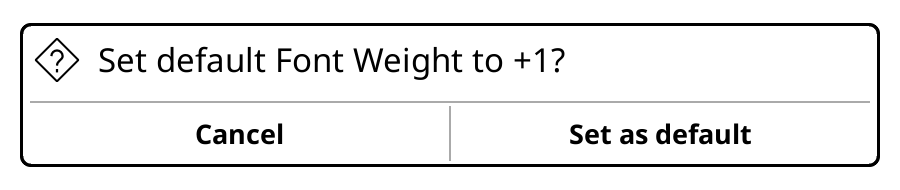
Varsayılan olarak ayarla düğmesine basarsanız, bu kitap ve gelecekte açacağınız kitaplar +1 yazı tipi kalınlığına sahip olur.
Bu "varsayılan olarak ayarlamak için uzun bas" kuralı menülerde de geçerlidir. Örneğin yazı tipini üst menüden değiştirirken:
- kısa basma = yazı tipini yalnızca bu kitap için değiştirir
- uzun basma = yazı tipini bu kitap ve gelecekteki tüm kitaplar için değiştirir
Varsayılan değerler menü sisteminde bir yıldızla (★) işaretlenir ya da aşağıda görüldüğü gibi göstergelerin çevresinde siyah bir çerçeveyle gösterilir:
Daha önce açtığınız kitapların kendi ayarlarını koruyacağını unutmayın. Varsayılanları değiştirmek onları etkilemez.
Geçerli kitabın tüm ayarlarını tek tek yerine hepsini birden varsayılan olarak belirleme olanağınız da vardır. Bu, bir kitapta çok sayıda değişiklik yaptığınızda ve tüm kitaplarınızın bunun gibi görünmesini istediğinizde kullanışlıdır.
Geçerli belge ayarlarını şunu seçerek varsayılanlar olarak kaydedebilirsiniz:
Bu işlem tüm ayarların üzerine geçerli belgenin ayarlarını yazar. Dolayısıyla bu menü öğesine bastıktan sonra açacağınız tüm kitaplar tam olarak geçerli kitabınız gibi görünür.
Peki daha önce açılmış kitaplar için ne yapabiliriz? Yukarıdaki menü öğesine bastıysanız ve yeni varsayılanlarınızı belirlediyseniz, artık bunları herhangi bir kitaba kolayca uygulayabilirsiniz. Değiştirmek istediğiniz kitabı açın, aynı menüye gidin ve şu öğeye basın:
Bu temel olarak KOReader'a geçerli kitabın ayarlarının üzerine (daha önce kaydettiğiniz) varsayılanları yazmasını söyler. Endişelenmeyin, bu yalnızca kitabın görünümünü değiştirir. Okuma konumunuz, vurgularınız, notlarınız ve yer imleriniz korunur.
Tamam, bu noktada şunları zaten biliyorsunuz:
- Geçerli kitabın ayarlarının tek tek nasıl değiştirileceğini
- Tüm kitapların kullanabilmesi için değişikliklerinizin nasıl varsayılan olarak ayarlanacağını
Şimdi başka bir kullanım durumunu göreceğiz: Varsayılanlarınızı beğendiğiniz şekilde değiştirdiğinizi ve yeni bir kitap açtığınızda artık tam istediğiniz gibi göründüğünü düşünün. Ve yakın zamanda fantastik kurgu bir seriyi okumaya başladınız. Kendinizi kitaplara kaptırmak istediğiniz için bu seri için güzel, Orta Çağ görünümlü bir yazı tipi yüklediniz (gerçekten böyle bir şeye ihtiyacınız varsa burada güzel bir tane var). Ancak bu çok farklı bir yazı tipi olduğu için satır aralığı, yazı tipi kalınlığı, kenar boşlukları vb. gibi birçok ayarı da değiştirmeniz gerekti.
Bu fantastik kitaplar için tüm bu ayarları değiştirmek üzere, öğrendiklerimize göre iki seçeneğiniz var:
- Bu ayarları her kitabı açtığınızda o kitap için değiştirebilirsiniz. Bu çok zahmetlidir, iyi bir çözüm değildir.
- Ayarları bir kitap için değiştirip Belge ayarlarını varsayılan olarak kaydet özelliğini kullanabilirsiniz. Ancak bu, istemediğimiz şekilde yeni açılan tüm kitapları etkiler. Biz Orta Çağ yazı tipi ayarlarını yalnızca bu birkaç Orta Çağ kitabına uygulamak istiyoruz.
Neyse ki KOReader'da bir kitabın ayarlarını kaydedip başka kitaplara uygulamamızı sağlayan Profiller adında bir özellik vardır (bunu kopyala & yapıştır gibi düşünebilirsiniz).
Şimdi senaryomuza dönersek, Orta Çağ fantastik kitabınız için tüm ayarları yaptıktan sonra şuraya gidin:
Bu profile bir ad vermeniz istenir. "Orta Çağ Kurgusu" gibi bir ad girip kaydedebilirsiniz. Böylece geçerli kitabın ayarlarını içeren Orta Çağ Kurgusu adlı bir profil oluşturmuş olduk. Artık yeni oluşturulan bu profili Profiller menüsünde görebilirsiniz. Bunu kullanmak için herhangi bir kitabı açıp bu profili çalıştırabilirsiniz; kaydedilen tüm ayarlar uygulanır.
Bu profili şuradan çalıştırabilirsiniz:
- Yukarıda bahsedilen Profiller menüsü
- Bir Hareketle
- Bir Hızlı Menüden
KOReader'a kendi yazı tiplerinizi ekleyip bunları belge yazı tipi, durum çubuğu yazı tipi ve hatta (bir kullanıcı yamasıyla) kullanıcı arayüzü yazı tipi olarak kullanabilirsiniz.
KOReader şu yaygın yazı tipi biçimlerini destekler:
- TrueType - .ttf uzantısı
- OpenType - .otf uzantısı
- Web Open Font Format - .woff ve .woff2 uzantısı
Bu uzantılara sahip yazı tipi dosyaları doğrudan cihazınızdaki /koreader/fonts/ klasörüne kopyalanabilir. Cihazınıza bağlı olarak bu kopyalama işlemi farklılık gösterebilir. Örneğin:
- Kobo cihazlarda tam yol şudur: /mnt/onboard/.adds/koreader/fonts
- PocketBook cihazlarda /applications/koreader/fonts/ dizini içinde her yazı tipi için bir dizin oluşturun ve yazı tipinizi oraya kopyalayın.
- Android İşletim Sistemi tabanlı cihazlarda yazı tiplerinizi şu dizinlere kopyalayabilirsiniz:
- Internal storage/Fonts - Tüm Android uygulamaları için genel yazı tipi dizini
- Internal storage/koreader/fonts - KOReader'a özgü yazı tipi dizini.
- Masaüstü sürümünde yazı tiplerinizi aşağıda gösterilen menü öğesinden görebileceğiniz konuma kopyalayabilirsiniz: Yazı tipleri klasörünü aç. Ayrıca aynı menüden Sistem yazı tiplerini etkinleştir seçeneğini açarsanız KOReader, işletim sisteminizde bulunan tüm yazı tiplerine erişebilir:
KOReader, Fonts dizini için alt dizinleri destekler; bu nedenle yazı tipi ailelerini bu dizinin altına dizinler halinde kopyalayabilirsiniz. Yazı tiplerinizi belirtilen dizinlere kopyaladıktan sonra KOReader'ı yeniden başlatın. Yeni yazı tipleri yazı tipi listesinin başında görünmelidir:
Durum çubuğu öğelerinin yazı tipini buradan değiştirebilirsiniz:
/ Durum çubuğu / Öğeleri yapılandır / Öğe yazı tipiDurum çubuğu için yüklü herhangi bir yazı tipini kullanabilirsiniz. Okunaklılığı koruyarak çok fazla bilgi göstermeniz gerekiyorsa DINish Condensed yazı tipini öneririz. Bu yazı tipini buradan indirip yukarıda açıklanan aynı yöntemle yükleyebilirsiniz.
KOReader'ın kullanıcı arayüzünün (menüler ve iletişim kutuları) yazı tipini değiştirmek isterseniz bunu bir kullanıcı yamasıyla yapabilirsiniz. Talimatlar burada: Kullanıcı arayüzü yazı tipi değiştirme yaması
Bu yazı tipleri artırılmış karşıtlıkları sayesinde e-mürekkep ekranda iyi görünür:
Serifli öneriler |
Serifsiz öneriler |
Daha iyi okunabilirlik, Disleksi veya DEHB için özel olarak geliştirilmiş bir yazı tipine ihtiyacınız varsa kılavuzdaki Özel Yazı Tipleri bölümü işinize yarayabilir.
Ayrıca WP Fonts projesine göz atmanızı öneririz. Bu proje, KOReader için en kapsamlı ücretsiz/açık kaynaklı yazı tipi derlemesini sunar; hata düzeltmelerinin yanı sıra harf aralığı (kerning) düzeltmeleri, bağlantılı harflerin (ligatürler) ve düzgün uygulanmamış OpenType özelliklerinin etkinleştirilmesi gibi başka eklemeler de içerir.
Eş aralıklı yazı tipi önerisi
Kendi eş aralıklı yazı tipinizi kullanmayı düşünüyorsanız muhtemelen zaten sevdiğiniz bir tane vardır; bu yüzden burada örnek sunmuyoruz. İhtiyaç duyarsanız pek çok eş aralıklı yazı tipini şu adreste bulup karşılaştırabilirsiniz: programmingfonts.org
Daha fazla yazı tipini Google Fonts web sitesinde de keşfedebilirsiniz.
EPUB'lar gibi HTML/CSS tabanlı belgelerde kitaplar, belirli bir yazı tipi adı yerine aileye göre yazı tipi kullanılmasını belirtebilir. Bu aileler Serif, Sans-Serif, Monospace, Cursive, Fantasy, Emoji, Fang Song ve Math olabilir. Örneğin bir kitapta normal metin Sans-serif ile gösterilirken diyaloglar Serif yazı tipiyle gösterilebilir. KOReader normalde Monospace ve Math dışındaki tüm bu aileler için varsayılan yazı tipinizi kullanır (bu, metin düğümlerinin biçemiyle belirlenir, örneğin 'font-family: serif'). Bu ailelerin farklı görünmesini istiyorsanız onlara burada belirli yazı tipleri atayabilirsiniz:
Geçerli kitap için bir aile yazı tipini değiştirmek için istediğiniz yazı tipi adına dokunmanız yeterlidir. Bunu tüm kitaplarınız için ayarlamak istiyorsanız varsayılan (★) olarak belirlemek için uzun dokunun. Bir kitap bu yazı tipi ailesi özelliğini varsayılan yazı tipinizin neredeyse hiç kullanılmadığı ölçüde kötüye kullanıyorsa, ilişkilendirmenin işaretini kaldırarak bu kitap için o aile yazı tipini devre dışı bırakabilirsiniz.

Yazı tipleri arasında sık sık geçiş yapıyorsanız (örneğin programlama kitapları için eş aralıklı, romanlar için serifli), bunu her seferinde menüye girmekten daha kolay hale getiren bir yöntem vardır. Yazı tipleriniz ve satır aralığı, karşıtlık, kalın vb. gibi yazı tipiyle ilgili tüm ayarlar için profiller oluşturup bu profilleri bir Hızlı Menüye ekleyebilirsiniz. Böylece tek bir hareketle yazı tipi seçim menünüzü açabilir ve yazı tipini aşağıdaki görselde gösterildiği gibi değiştirebilirsiniz:
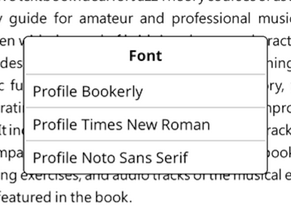
Bunun nasıl yapılacağını öğrenmek için bu kılavuzun HIZLI MENÜ VE PROFİLLER bölümüne bakın.
Kitabınızda (programlama kitaplarında olduğu gibi) eş aralıklı yazı tipleriyle yazılmış kısımlar varsa, eş aralıklı metin teknik olarak kitabın geri kalanıyla aynı boyutta olsa bile orantısız görünebilir. Bunun nedeni yazı tipi ölçülerinin farklı olmasıdır. KOReader'da bu farkı gidermek için göreli eş aralıklı yazı tipi boyutunu ayarlamanızı sağlayan bir seçenek vardır:
Burada eş aralıklı yazı tipinizin ölçeğini varsayılan boyutun yüzdesi olarak ayarlayarak boyutunu artırabilir veya azaltabilirsiniz.
KOReader'a yazı tipi eklerken yazı tipi kalınlıklarıyla ilgili sorun yaşıyorsanız, bu bölüm KOReader'ın yazı tiplerini nasıl işlediğini anlamanıza yardımcı olabilir:
- KOReader başlatılırken mevcut yazı tiplerinin içine gömülü yazı tipi üst verilerini/bilgilerini okuyarak onları derler ve aileye ve kalınlığa göre sınıflandırır. KOReader yazı tipi ailesi bilgisini yazı tipinin içindeki üst verilerden belirlemeye çalışır; bu nedenle cihazınıza kopyalarken yazı tipi dosya adları önemli değildir.
- Bir yazı tipi ailesi için birden fazla yazı tipi dosyanız varsa KOReader yazı tiplerini şu 4 kategoriden birine yerleştirmeye çalışır: Regular, Bold, Italic & BoldItalic. İdeal bir durum şöyle görünür:
- Luciole-Regular.ttf şu değere eşlenir: Yazı tipi kalınlığı: 0 (Regular 400)
- Luciole-Bold.ttf şu değere eşlenir: Yazı tipi kalınlığı: +3 (Bold 700)
- Luciole-Regular-Italic.ttf
- Luciole-Bold-Italic.ttf
- Yazı tipiniz yalnızca tek bir dosya içeriyorsa ve bu dosya Kalın (Bold) değilse, KOReader onu (Regular 400) Yazı tipi kalınlığı: 0 olarak atar ve diğer tüm kalınlıkları ve varyantları kendisi sentezler. Başka bir deyişle KOReader bu yazı tipi için italik ve kalını taklit eder. (Tek yazı tipi dosyanız Kalın bir yazı tipiyse, KOReader Normal (Regular) kalınlığı bu kalın yazı tipinden sentezler.)
Alt menüdeki Yazı tipi kalınlığı etiketine uzun basarsanız, geçerli yazı tipinizin hangi kalınlık sınıflarını sunduğu gösterilir.
Yazı tipinizin başka varyantları da varsa işler karışıklaşabilir. Diyelim ki cihazınıza bir yazı tipi ailesi kopyaladınız. KOReader başlatılırken yazı tipinin şu varyantlarını bu sırayla okudu: Light, Thin, Normal, Medium, ExtraBlack, SemiBold, Bold, Black. Normal varyantının belgenin normal yazı tipi olarak kullanılmasını beklersiniz (çünkü adı Normal), ancak KOReader Light varyantını kullanır; çünkü bu, listede kalın bayrağı olmayan ilk yazı tipidir. Ayrıca belge için zaten Thin, Normal ve Medium varyantlarını yok sayar; çünkü "kalın olmayan" bir yazı tipi bulmuştur.
Ve yine bu listeye göre, bold flag taşıyan listedeki ilk yazı tipi olduğu için kalın yazı tipi olarak ExtraBlack kullanılacaktır. KOReader ise SemiBold, Bold, Black varyantlarını yok sayacaktır, çünkü aradığı "kalın" yazı tipini zaten bulmuştur.
Yukarıdakilerin özeti: Tüm aileyi kopyaladık ve Normal ve Bold varyantlarının seçilmesini bekledik, ancak KOReader bunların yerine Light ve ExtraBlack varyantlarını kullandı. Bunun nedeni, KOReader'a verilen yazı tiplerinin sırasının bizim denetimimizde olmamasıdır; dolayısıyla "ilk gelen ilk alır".
Çözüm, yalnızca kullanılmasını istediğiniz yazı tipi dosyalarını şu şekilde aktarmaktır:
- Şunlardan yalnızca birini tutun: Thin, Extra Light, Light, Normal, Medium. Bu, normal yazı tipi olarak kullanılır (Regular yazı tipiniz çok inceyse ve elinizde varsa onu Medium kalınlığıyla değiştirmeniz yeterlidir).
- Şunlardan yalnızca birini tutun: Semi Bold, Bold, Extra Bold, Black, Extra Black. Bu, kalın yazı tipi olarak kullanılır.
- Aynı kalınlığın italik varyantlarını da ekleyebilirsiniz (örneğin medium/medium-italic).
KOReader'ın stil ince ayarları özelliği, kitabınızın KOReader tarafından nasıl işleneceğini değiştirmenizi sağlar. Burada tam bir CSS kursu vermeyeceğiz. Yalnızca temelleri göstermek istiyoruz; böylece bir stil ince ayarı gördüğünüzde en azından ne yaptığı hakkında kaba bir fikriniz olur.
Bir EPUB belgesini HTML dosyası + bazı CSS kuralları olarak tanımlayabiliriz. Bu CSS kuralları, kitabın farklı bölümlerinin (başlıklar, kalın metin, alıntılar vb.) bir okuma uygulamasında nasıl gösterileceğini belirler. Stil ince ayarlarıyla, yeni kurallar ekleyerek ve/veya yayıncı tarafından yazılıp kitabınıza gömülmüş kuralları geçersiz kılarak kitabınızın nasıl işleneceğini değiştirebilirsiniz.
Bunu örnek bir stil ince ayarı üzerinde görelim:
img { width: 10px !important; height: 10px !important }
Sade bir dille bu kural şunu söyler: "Özgün boyutlarını yok say ve bu kitaptaki tüm görselleri 10 piksel genişliğinde ve 10 piksel yüksekliğinde yap." Yani bu stil ince ayarını KOReader'a eklerseniz kitabınızdaki tüm görseller çok küçük gösterilir.
Şimdi bu ince ayarı öğe öğe açıklayalım:
- img - Bu, kitaptaki tüm img (görsel) öğelerini hedefleyen bir CSS seçicisidir.
- { width: 10px !important; height: 10px !important; } - Bu, bildirim bloğudur. Seçilen img öğelerine uygulanacak stilleri içerir.
- width: 10px !important; - Bu ilk kısım, hedeflenen img öğelerinin genişliğini 10 piksel olarak ayarlar. !important bildirimi, genişlik değerinizin bu görsellere uygulanmış diğer tüm width bildirimlerinden öncelikli olmasını sağlayan bir geçersiz kılma anahtarıdır.
- height: 10px !important; - Bu kısım, hedeflenen img öğelerinin yüksekliğini 10 piksel olarak ayarlar. Yine !important bildirimi, yükseklik değerinizin bu görsellere uygulanmış diğer tüm height bildirimlerinden öncelikli olmasını sağlayan bir geçersiz kılma anahtarıdır.
Özetle bu CSS kuralı, kitabınızdaki tüm img öğeleri için özgün biçimlerini yok sayarak 10 piksellik sabit bir genişlik ve yükseklik belirlemek üzere tasarlanmıştır.
Bunlar doğrudan kullanabileceğiniz ya da beğenize göre değiştirebileceğiniz bazı kullanışlı stil ince ayarlarıdır. Sonraki başlık bunların KOReader'da nasıl kullanılacağını açıklar.
- Bir kitaptaki her başlığın üstüne bir ayırıcı çizgi ekleyin:
H1, H2, H3, H4 { border-top: 2px solid black; }
- Başlıkların üstüne biraz boşluk ekleyin:
H1, H2, H3, H4 { margin-top: 2em !important; }
- Ya da kitapta başlıkların üstünde çok fazla boşluk varsa bunları kaldırın:
H1, H2, H3, H4 { margin-top: 0 !important; }
- Metni daha okunaklı hale getirmek için paragraflar arasına küçük bir boşluk ekleyin:
p + p { margin-top: 0.5em !important; margin-bottom: 0.5em !important; }
- Bir EPUB'daki tüm görselleri devre dışı bırakın:
img { display: none !important; }
-
Görselleri devre dışı bırakmak yerine çok küçültün:
img { width: 10px !important; height: 10px !important }
-
Bilgisayar bilimi kitaplarındaki kod bloğu bölümlerini daha düzenli ve okunaklı hale getirin (Burada bir örnek görebilirsiniz):
pre,code { font-size: 0.6em !important; line-height: 1.8em !important; background-color: #eee !important; margin: 1em 0 !important; padding: 1em 0 !important; }
Tamam, stil ince ayarlarının ne olduğunu gördük. Peki bunları nasıl kullanabiliriz? KOReader'da üç tür stil ince ayarı vardır:

Bu başlık ve yukarıdaki ile aşağıdaki ekran görüntüsü yeni. Eklenecek bir şey var mı?
Bu ince ayarlar KOReader'a dahildir. Kullanmak için yalnızca menüden etkinleştirmeniz yettiğinden kullanımı en kolay olanlardır. Herhangi bir CSS kodu yazmanız gerekmez:
Birçok kategoride sunulurlar. Bir ince ayarı yalnızca geçerli kitaba uygulamak için onay kutusunu işaretleyin. Bu ince ayar hakkında daha fazla bilgi almak veya onu tüm kitaplar için etkinleştirmek istiyorsanız adına uzun basın. Bir iletişim kutusu açılır:

- Bu alan ince ayarın adını ve açıklamasını gösterir
- Bu kutu ince ayarın CSS kodunu gösterir. Kodu panoya kopyalamak için bu alana dokunabilirsiniz. Ardından bu kodu, sonraki başlık altında açıklandığı gibi Kitaba özgü ince ayarınıza yapıştırıp değiştirebilirsiniz.
- Eylem listesinde göster düğmesi, bu ince ayarı bir hareketle açıp kapatmanızı veya bir Hızlı Menüye eklemenizi sağlar. Daha fazla bilgi için aşağıdaki "İnce ayarlar verimli biçimde nasıl kullanılır" başlıklı bölüme bakın.
- Tüm kitaplarda kullan düğmesi bu ince ayarı tüm kitaplarınız için etkinleştirir. Menüde adının yanında bu ince ayarın tüm kitaplara uygulanacağını gösteren bir yıldız (★) belirir. Aynı adımlarla bunu devre dışı bırakabilirsiniz.
Adından da tahmin edebileceğiniz gibi bu tür ince ayarlar yalnızca onları oluşturduğunuz kitap için etkindir. Bu özellik daha çok ince ayarlarınızı denemek için ya da geçerli kitapta bir şeyi düzeltmeniz gerektiğinde ve buna diğer kitaplarda ihtiyacınız olmayacağını bildiğinizde kullanışlıdır. Bu tür bir ince ayar oluşturduktan sonra ona diğer kitaplarda da (örneğin aynı yayıncının kitaplarında) ihtiyaç duyacağınıza karar verirseniz, onu birazdan açıklayacağımız bir kullanıcı stil ince ayarına dönüştürebilirsiniz.
Bir kitaba özgü ince ayar oluşturmak için şurada bulabileceğiniz yerleşik düzenleyiciyi kullanın:
Bu ince ayar grubu oluşturulma biçimi bakımından öncekilerden farklıdır. Ayrıca önceki türün aksine tek bir kitapla sınırlı değildir. Tüm kitaplarınıza genel olarak uygulanabilir.
Ayrıntılı olarak açıklayacağımız süreç kabaca şöyledir:
- Kullanıcı ince ayar dosyanızı oluşturun
- Onu cihazınıza aktarın
- İnce ayarınızı menüden etkinleştirin
1. Kullanıcı ince ayar dosyasını oluşturma:
Bir kullanıcı stil ince ayarı aslında .css uzantılı normal bir metin dosyasıdır. Bu dosyayı şu şekilde oluşturabilirsiniz:
- Bilgisayarınızda
- Bir metin düzenleyicisi varsa cihazınızda (Android İşletim Sistemi tabanlı cihazlar gibi)
- KOReader'ın eklentiler arasında bulabileceğiniz yerleşik metin düzenleyicisinde
Yukarıda bahsettiğimiz örnekleri dosyanıza kopyalayıp yapıştırabilirsiniz.
2. Dosyayı cihazınıza aktarma:
CSS kurallarınızı içeren dosya(lar)ı oluşturduktan sonra bunları KOReader kurulumunuzun altındaki styletweaks klasörüne kaydedin veya aktarın. Dosya adı KOReader menü sisteminde ince ayarın başlığı olacağı için dosyalara açıklayıcı adlar verin. Dosya adlarınızda alt çizgi "_" kullanabilirsiniz; bunlar menüde boşluk olarak değerlendirilir. Dosyalarınızı aktardıktan sonra KOReader'ın bunları yükleyebilmesi için yeniden başlatmanız gerekir.
2. İnce ayarı etkinleştirme:
Yeniden başlattıktan sonra bir kitap açın ve şu menüye gidin:
Artık ince ayarınızı listede yanında bir onay kutusuyla görmelisiniz. İnce ayarınızı yalnızca geçerli kitaba uygulamak için onay kutusunu işaretleyin. Bu ince ayarın tüm kitaplar için etkin olmasını istiyorsanız adına uzun basın. Bir iletişim kutusu açılır. Tüm kitaplarda kullan menü öğesine dokunun. Menüde adının yanında bu ince ayarın tüm kitaplara uygulanacağını gösteren bir yıldız (★) belirir. Aynı adımlarla bunu devre dışı bırakabilirsiniz. Örnek için aşağıya bakın:

Yukarıdaki görselde KOReader kurulumumun altındaki styletweaks klasöründe 3 stil ince ayarı dosyam var. Onay kutusu boş olduğu için birincisi devre dışıdır. İkincisi onay kutusu işaretli olduğu ancak yıldız olmadığı için yalnızca bu kitap için etkindir. Üçüncüsü tüm kitaplar için etkindir (★).
İlk ince ayarın yanında bir de sağa bakan üçgen simgesi olduğunu fark edebilirsiniz. Bu, bu ince ayarın hareketlerle etkinleştirilebileceği anlamına gelir. Bu, sonraki başlıkta açıklanacaktır.
Kullanıcı stil ince ayarlarınızı oluştururken, yukarıdaki örnek görselde olduğu gibi her biri kitabın bir kısmını değiştiren birden fazla ince ayar dosyası yapabilirsiniz. Başlıklar için bir dosyanız, paragrafları, bağlantıları vb. değiştirmek için başka dosyalarınız olabilir. Bu modüler sistem, ince ayarları belgenize göre etkinleştirmenizi sağlar.
Yukarıda belirttiğimiz gibi kullanıcı stil ince ayarlarını şu menü konumundan açıp kapatabilirsiniz:
Ayrıca stil ince ayarlarınızı açıp kapatmak için her seferinde menüye gitmekten daha kolay yollarımız da var.
1. Bir ince ayara hareket atayabilirsiniz
Bunu yapmak için önce kullanıcı stil ince ayarımızı hareket eylemleri listesine eklememiz gerekir:
- Kullanıcı stil ince ayarları menüsüne gidin ve stil ince ayarınıza uzun basın
- İletişim kutusunda Eylem listesinde göster düğmesine basın
- Menüde stil ince ayarınızın yanında bir sağa bakan üçgen simgesi belirir
Bunu yukarıdaki örnek görselde Adjust margins stil ince ayarının yanında görebilirsiniz. Artık bu stil ince ayarı eylemler listesine eklenmiştir. Onu Hareket Yöneticisi > Yeniden akışlı belgeler kategorisi altında bulabilirsiniz. Listenin sonunda yer alır.
2. Bir ince ayarı Hızlı Menünüze ekleyebilirsiniz
Bir ince ayarı Hızlı Menünüze eklemek için önce onun yukarıdaki başlıkta anlatıldığı gibi eylemler listesine eklenmesi gerekir. Ardından bu kılavuzun Hızlı Menü bölümündeki talimatları izleyebilirsiniz.
Hatta her iki yöntemi birleştirip stil ince ayarlarınız için özel bir Hızlı Menü oluşturabilir ve ardından bunu bir harekete atayabilirsiniz. Böylece basit bir hareketle tüm stil ince ayarlarınıza erişip gerektiğinde onları etkinleştirebilirsiniz.
Bazı kitaplarda başlıkların <H1> veya <H2> öğelerinde değil, <p class="tit123"> gibi bir öğede olabileceğini unutmayın. Bir metin parçası için hangi seçicilerin kullanıldığını kaynağı inceleyerek bulabilirsiniz. Bunun için ilgilendiğiniz öğenin çevresindeki metni seçin ve iletişim kutusundan HTML'yi görüntüle seçeneğini seçin. Yukarıdaki örnekte stil ince ayarınız şöyle görünür:
P.tit123 { border-top: 2px solid black; }
şu yerine:
H1 { border-top: 2px solid black; }
KOReader, kitabınızla gerçek bir kitapta yapabileceğiniz gibi etkileşim kurmanız için seçenekler sunar. Yer imi penceresinin birçok ayarı buradan değiştirilebilir:
YER İMLERİ:
Sağ üst köşeye basarak yer imi ekleyebilir (ve kaldırabilirsiniz). Bu, gerçek bir kitapta sayfanın köşesini kıvırmanın karşılığıdır ve etkinleştirdiğinizde benzer bir simge gösterir.
VURGULAR:
Metni 4 farklı biçemde vurgulayabilirsiniz. Aşağıdaki görselde normal bir paragrafın ardından farklı vurgu biçemlerini görebilirsiniz: Açık (gri arka planlı), Altı çizili, Üstü çizili ve Ters çevrilmiş.

Bu biçemlerin hepsini, farklı renkte vurgu kalemleriymiş gibi aynı anda kullanabilirsiniz. Ya da en sevdiğiniz biçemi seçip bu menüden uzun basarak varsayılan olarak ayarlayabilirsiniz:
Ayrıca renkli ekranlı bir cihazınız varsa farklı renklerde vurgular oluşturabilirsiniz:

Renkli vurgular için bazı ipuçları:
- Mevcut bir vurgunun rengini, üzerine dokunup açılan menüden Renk seçeneğini seçerek değiştirebilirsiniz.
- Güçlü bir vurgulama sistemi oluşturmak için renkleri Altı çizili ve Üstü çizili gibi farklı vurgu biçemleriyle birleştirebilirsiniz. Örneğin çıkarılacak yerler için kırmızı üstü çizili biçemi ya da önemli noktalar için turuncu altı çizili biçemi vb. kullanabilirsiniz.

- Vurgular menüsünde bir vurgu türüne uzun basarak onu varsayılan (★) olarak ayarlayabilirsiniz
- Bir renk seçtikten sonra, o rengi varsayılan (★) olarak ayarlamak için bu menüde renk adına uzun basabilirsiniz
- Geçerli kitaptaki tüm vurguları aynı yapmak için Geçerli biçem ve rengi tüm vurgulara uygula seçeneğine basabilirsiniz. Dikkatli olun, geri alma yoktur!
NOTLAR:
Vurgularınıza not da ekleyebilirsiniz. Bir vurguya dokunup açılan menüden Not ekle seçeneğini seçmeniz yeterlidir. Ayrıca hangi vurguların not içerdiğini gösteren bir Not işaretçisi seçebilirsiniz. Üç biçem vardır: Alt çizgi, Yan çizgi ve Yan işaret (aşağıdaki resmin sağ tarafında gösterilen kalem simgesi):

Bu özelliği etkinleştirmek ve bir Not işaretçisi biçemi seçmek için şuraya gidin:
Belgenizin bir kısmını vurguladıktan sonra vurgu menüsünü görmek için vurguya dokunabilirsiniz. Bu vurgu menüsünden, aşağıda gösterildiği gibi ... (üç nokta) düğmesine dokunarak başka bir genişletilmiş menüye ulaşabilirsiniz:
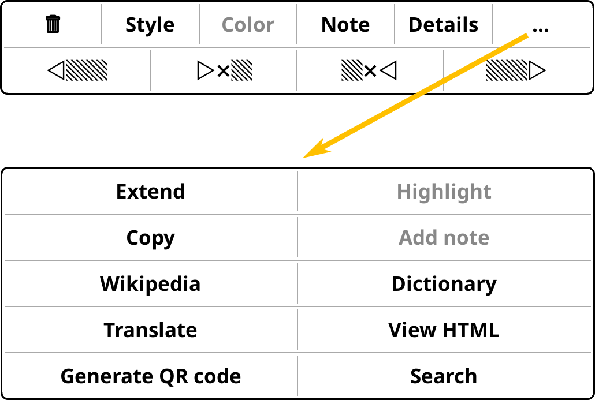
Bu genişletilmiş menüyü kullanarak şunları yapabilirsiniz:
- Vurgunuzu daha fazla metin içerecek şekilde Genişletin
- Başka bir yere yapıştırmak için metni panoya Kopyala
- Metni Wikipedia'da Ara
- Metni yüklü bir sözlükte Sözlükte ara
- Metni Google Translate hizmetini kullanarak Çevir
- Vurgulanan bölümün kaynağını HTML olarak görüntüleyin; bu, bir stil ince ayarı yazarken kullanışlıdır
- Kamera ve QR kod okuyucu uygulaması olan başka bir cihazla taramak üzere vurgulanan metni içeren bir QR kod oluşturun
- Metni kitap içinde Ara
KOReader'ın farklı kullanım durumları için iki vurgulama kipi vardır:
Normal kip, bir telefonda/tablette parmağınızla metin seçmeye benzer ve vurgularınız bir sayfadan kısaysa daha uygundur.
- Başlangıç sözcüğüne uzun basın
- Parmağınızı pasajın sonuna kaydırın
- Parmağınızı bırakın
Sayfa sınırlarına ulaştığınızda KOReader, vurgulamaya devam edebilmeniz için sayfayı sizin yerinize çevirir (yalnızca EPUB/HTML belgelerde). Bu özelliği şuradan devre dışı bırakabilirsiniz:
/ Dokunmalar ve hareketler / Metne uzun basma / Seçim bir köşeye ulaştığında otomatik kaydır / Hareket yöneticisi / "HERHANGİ BİR HAREKET" / Cihaz / Aç/Kapat┆Köşelerde uzun basmayı yok saySeç ve vurgula kipi, sayfa sınırlarını aşan daha uzun pasajları vurgulamak için daha uygundur. Dokunmatik ekran hassasiyeti sorunları yaşıyorsanız veya ellerinizde motor kontrol sorunları varsa da daha iyi çalışabilir. Çünkü bu vurgulama kipinde parmağınızı ekran boyunca sürüklemeniz gerekmez.
/ Dokunmalar ve hareketler / Metne uzun basma / Tek sözcük seçiminde sözlükNasıl vurgulanır:

- Başlangıç sözcüğüne uzun basın (veya yukarıda anlatıldığı gibi sözlükte arama etkinse sürükleyin); açılır menü görünür.
- Seç öğesine dokunun; artık vurgulama kipindesiniz. Bu kipteyken ekranın sol üst köşesinde bir gösterge görürsünüz (daha fazla bilgi almak için ona dokunabilirsiniz). Vurgunun başlangıcına yeniden dokunarak vurgulamayı iptal edebilirsiniz. Bu kipte dokunma/kaydırma ile sayfa çevirebilir ve belgede serbestçe gezinebilirsiniz (İçindekiler, hızlı göz atma vb.).
- Vurgunuzun bitiş sözcüğüne uzun basın (veya yukarıda anlatıldığı gibi sözlükte arama etkinse sürükleyin); menü yeniden görünür.
- Pasajı vurgulamayı bitirmek için bu kez Vurgula öğesine dokunun.
Bu iletişim kutusu normalde ekranın ortasında açılır. Bu iletişim kutusunun vurgunuzun konumuna daha yakın açılmasını istiyorsanız buradaki orta seçeneğini hareket konumu olarak değiştirebilirsiniz (bu menünün ikinci sayfasında bulunur):
/ Dokunmalar ve Hareketler / Metne uzun basma / Vurgu iletişim kutusu konumu / Dokunmalar ve hareketler / Metne uzun basma / Seç ve vurgulaVurgularken KOReader, seçiminizin çevresindeki ilgili noktalama işaretlerini de dahil etmeye çalışır. Örneğin bir cümlenin ilk sözcüğünden son sözcüğüne kadar vurgularsanız KOReader, cümlenin her iki ucundaki noktalama işaretlerini otomatik olarak vurgunuza ekler.
Ancak vurgulamaya bir cümlenin ortasından başlarsanız, KOReader kısmi bir vurgu yapmak istediğinizi varsaydığı için sondaki nokta dahil edilmez. Dolayısıyla noktalama işaretlerinin vurgunuza eklenmesini istiyorsanız cümlenin tamamını seçtiğinizden emin olun. Ayrıca bu işaretleri daha sonra Vurgu düzenleme düğmelerine uzun basarak da ekleyebilirsiniz.
Zaten vurgulanmış bir metne (not olmadan) dokunduğunuzda bu açılır menüyü görürsünüz. Sil ve Not ekle öğelerinin ne yaptığı açıktır. Alt sıradaki menü öğeleri vurguyu genişletmek veya daraltmak için kullanılır.
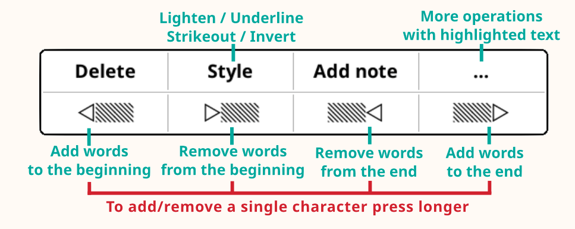
Not eklenmiş ve zaten vurgulanmış bir metne dokunduğunuzda bu açılır menüyü görürsünüz. Hem vurguyu hem de içerdiği notu düzenleyebileceğiniz yukarıdaki menüyü açmak için Vurguyu düzenle öğesine dokunun:
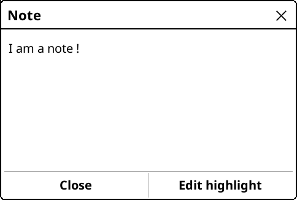
Yer imleri sayfanızda menü simgesine ( ) basarak görünümü yalnızca tek bir yer imi türünü gösterecek şekilde filtreleyebilirsiniz. Vurgu biçemine göre de filtreleyebilirsiniz:
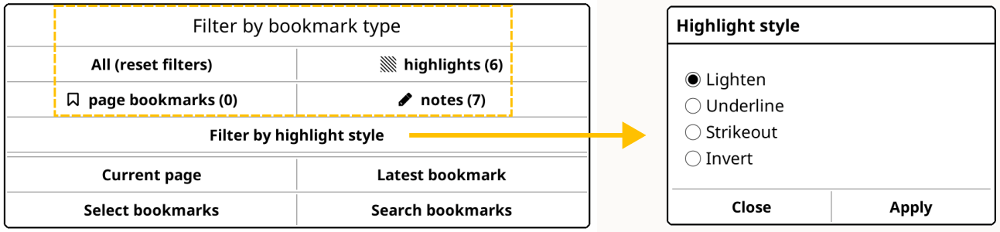
KOReader, not eklemenin yanı sıra Yer imleri listenizde gösterilen vurgulanmış metnin kendisini düzenlemenize de olanak tanır. Bazı durumlarda bu, bir vurguya not eklemekten daha kullanışlı olabilir. Örneğin bir metni gözden geçirdiğinizi düşünün. Çok sayıda tarih içeren ve tarihlerden biri yanlış olan bir cümleyi vurgulamak istiyorsunuz. Bu hatayı belirtmek için not eklemek istediğinizde notunuzda hangisinin yanlış olduğunu belirtmeniz gerekir. Ancak vurgunun metnini düzenlerseniz sorunlu tarihin yanına doğrudan "(bu tarihin kontrol edilmesi gerekiyor)" yazabilirsiniz.
Bu düzenlemenin kitap içeriğini veya sayfadaki vurgulanmış pasajı değiştirmediğini unutmayın. Okuyucuda aynı vurgulanmış cümleyi görmeye devam edersiniz. Düzenlemeniz Yer imleri listesinde görünür. Vurgularınızı daha sonra dışa aktardığınızda dışa aktarılan metin düzenlenmiş metin olur.
Bir vurgu metnini düzenlemek için şunları yapabilirsiniz:
- Vurguya dokunun
- Açılır menüden Ayrıntılar öğesine dokunun
- Ayrıntılar iletişim kutusundan Metni düzenle öğesine dokunun
Bunu Yer imleri penceresinden de yapabilirsiniz:
- Menü veya hareket aracılığıyla Yer imleri listesine gidin
- Düzenlemek istediğiniz vurguya uzun basın
- Menüde Metni düzenle öğesine basın
- İletişim kutusundaki metni değiştirin ve Kaydet düğmesine basın
Düzenlenmiş bir metni özgün vurguya geri döndürmek istiyorsanız yukarıdaki adımları izleyin ve 3. adımda Metni düzenle yerine Metni sıfırla düğmesine basın.
Normalde Yer imleri listesini açtığınızda yalnızca vurgularınızın içeriği gösterilir. Bir vurguya not eklediyseniz Yer imleri listesinde yalnızca bir kalem simgesi görürsünüz. Eklenen notu göstermek (ve düzenlemek) için bu listedeki bir öğeye uzun basabilirsiniz. Not metnini de Yer imleri listenizde görmek istiyorsanız bunu buradan ayarlayabilirsiniz:
Şunları göstermeyi seçebilirsiniz:
- Yalnızca vurgu metni (varsayılan davranış)
- Vurgu metni ve notun ikisi birden
- Varsa not, yoksa vurgu metni
Bir kitabı bitirdikten sonra arşivleme veya işleme amacıyla belirli bir klasöre taşıyabilirsiniz. Arşive taşı eklentisini etkinleştirin ve eklentinin ayarlarında hedef dizininizi belirleyin (Arşiv klasörünü ayarla). Bundan sonra bir kitabı şu yollarla arşiv klasörünüze taşıyabilirsiniz:
- Arşive taşı eklenti menüsü
- Bir hareketle veya
- Bir Hızlı Menü girişiyle
KOReader, vurgularınızı ve notlarınızı okuma cihazınızdan dışa aktarmanın farklı yollarını sunar:
Bu çok yönlü eklenti vurgularınızı yerel dosyalara veya çevrim içi hizmetlere aktarabilir.
Yerel dışa aktarma
Vurgularınızı cihazınıza şu dosya biçimlerinde aktarabilirsiniz:
- Metin (.txt)
- HTML (.html)
- Markdown (.md)
- Kindle Clippings (.txt)
- JSON (.json)
Tercih ettiğiniz dışa aktarma biçimlerini şuradan seçebilirsiniz:
Dışa aktarma konumunu görebilir (ve isterseniz değiştirebilirsiniz):
Çevrim içi hizmetler
Ağ üzerinden şu hizmetlere de aktarabilirsiniz:
- Joplin - bir not alma uygulaması
- Readwise - çevrim içi bir yer imi/vurgu uygulaması
- Memos - kendi sunucunuzda barındırılan açık kaynaklı bir not merkezi
- Flomo - çevrim içi bir not alma hizmeti
- XMNote - Çince dilinde bir Android yer imi düzenleyicisi
Bu hizmetler için ayrıntılı kurulum talimatlarını ilgili viki sayfamızda bulabilirsiniz.
Biçimlerinizi seçtikten sonra aynı eklenti menüsünden geçerli kitabın veya kitaplığınızdaki tüm kitapların notlarını dışa aktarabilirsiniz.
Kitaplığınızdaki kitapların yalnızca bazılarını dışa aktarmak istiyorsanız bunu Dosya Tarayıcısından yapabilirsiniz:
- Dosya Tarayıcısında birden fazla kitap seçin
- Sağ üst köşedeki menü düğmesine (onay işareti olarak gösterilir) dokunun
- Gösterilen menüden Vurguları dışa aktar seçeneğini seçin
Yalnızca seçtiğiniz vurgu biçemlerini de dışa aktarabilirsiniz: açık, altı çizili, üstü çizili, ters çevrilmiş. Normalde KOReader hepsini dışa aktarır. Şuradan seçebilirsiniz:
Dışa aktarılan dosyaların adını tarih/saat bilgisi ve diğer yararlı bilgileri içerecek şekilde eklentinin menüsünden (Dışa aktarma dosya adını ayarla) özelleştirebilirsiniz.
KoHighlights, bilgisayarınıza yükleyebileceğiniz harici bir programdır. Okuyucunuzu bilgisayarınıza bağladığınızda kitap notlarınıza ve vurgularınıza erişebilir. İndirme ve talimatlar için GitHub proje sayfasına bakın.
Calibre, bilgisayarınıza yükleyebileceğiniz harici bir programdır. KOReader Sync eklentisiyle vurguları Calibre veritabanınıza aktarabilirsiniz. Bahsedilen eklentiyi Calibre uygulamasının içinden yükleyebilirsiniz. İndirme ve talimatlar için proje sayfasına bakın.
KOReader, daha büyük sayfa boyutları (genellikle A4 veya Letter) için hazırlanmış bir PDF/DJVU belgesini küçük ekranlı cihazınızda okumanız için farklı yollar sunar:
1. Şunu etkinleştirebilirsiniz: Akış (Reflow)
/ Yeniden akışYeniden akış, belgenizdeki metin kısmını (varsa) çıkarmaya ve tek sütun olarak biçimlendirmeye çalışır. Sonuçlar genellikle tatmin edicidir. Üzerine dokunup basılı tutarak bunu varsayılan olarak da ayarlayabilirsiniz.
2. Şunu etkinleştirebilirsiniz: İçeriğe Yakınlaştır
 /
/ 

Bu seçenekle KOReader, metnin ekranınızda daha büyük görünmesi için belgenizin kenar boşluklarını kırpmaya çalışır. Aynı menüde sığdır seçeneğini genişlik olarak ayarlayabilirsiniz; bu durumda sayfanın tamamı yerine yalnızca sayfa genişliği sığdırılmaya çalışılır ve metniniz daha büyük görünür.
3. Cihazınızı şu yönde kullanmayı deneyebilirsiniz: Yatay yönlendirme
Bu, ekranınızı daha geniş hale getirir; böylece belgeniz rahatça okunacak kadar büyük görünebilir.

4. Yüzde 100 boyuta yakınlaştırıp farklı kısımları okumak için ekranı kaydırabilirsiniz
Bu özellikle çizgi romanlarda işe yarar. Önce şu menü öğesinden sütun kipini etkinleştirin:
/ 
Ardından aynı menüden belgeniz için uygun bir akış yönü seçin:
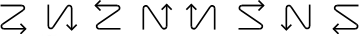
- Örneğin iki sütunlu bir makale okuyorsanız, sol sütunu okuyarak sayfanın sonuna kadar aşağı kaydırır, ardından sağ sütunu okumaya devam etmek için sağ üst tarafa geçersiniz:

- Ya da bir çizgi roman okuyorsanız zikzak biçiminde “sağa / aşağı sola / sağa” ilerlemek istersiniz:

- Japon çizgi romanlarında (sağdan sola panel sırası) bu durum tersi olabilir:

Bu kipte, metni ekranınıza daha iyi sığdırmak için aynı menüden Yatay/Dikey Çakışma ve Sütun Sayısı ayarlarını da yapabilirsiniz. Bu ayarlarla dilediğiniz gibi denemeler yapın.

Karşıtlık ayarı belgenizdeki siyah düzeylerini ayarlar. Aynı karşıtlık değerinin belgenizdeki hem metne hem de görsellere uygulandığını unutmayın. Çok yüksek ayarlarsanız görselleriniz fazla koyulaşabilir.
Filigranı kaldır, işlenen belgedeki filigranları kaldırır. Gri arka planları kaldırmak için de kullanılabilir. Bu özellik, daha kolay okuma için daha fazla karşıtlık sağlamak üzere gri tonlamalı veya renkli bir belgeyi siyah & beyaza dönüştürebilir.
İşleme kalitesi (yalnızca Yeniden akış kipinde etkindir) metin ve görsel çıkarma işleminin ve çıktısının kalitesini belirler. Yüksek daha hoş görünür ancak belgenize bağlı olarak varsayılana göre çok daha yavaş olabilir (sayfa çevirmek birkaç saniye sürebilir). PDF/DJVU dosyalarınız yavaşsa ilk kontrol etmeniz gereken ayar budur.

Belge dili, OCR motorunun kullanacağı dili belirler.
Zorunlu OCR, adından da anlaşılacağı gibi, belgede bir metin katmanı olsa bile OCR kullanımını zorunlu kılar.
Yazı yönü (yalnızca Yeniden akış kipinde etkindir) özgün belgenin yönünü belirler. Arapça ve İbranice gibi diller için bunu RTL (sağdan sola) olarak ayarlayın.
Belge sütunları (yalnızca Yeniden akış kipinde etkindir) özgün belgedeki metin sütunu sayısını belirler.
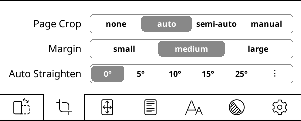
Otomatik düzeltme özelliği, sorunlu bir belgenin sayfalarını (örneğin açılı taranmış bir PDF'in sayfalarını) düzeltebilir. PDF, DJVU, CBZ/CBT belgelerinde ve görsel dosyalarında kullanılabilir. Etkinleştirmek için KOReader'ın düzeltmeye çalışacağı en büyük eğim açısını seçin. Düzeltme olmazsa daha büyük bir açı seçmeniz gerekebilir. Bu özelliğin çeşitli etkenlere bağlı olarak okuyucunuzu yavaşlatabileceğini unutmayın.
Vurgularınızı kaydetmek için KOReader'ın önceki bir bölümde açıklanan Vurguları dışa aktar özelliğini kullanabilirsiniz.
Vurgularınızı bir PDF belgesinde yapıyorsanız KOReader bunları doğrudan PDF dosyasına da kaydedebilir. Bu yöntemle vurgularınız PDF dosyasının bir parçası haline geldiğinden bazı durumlarda kullanışlı olabilir. Yani KOReader'ı yüklemeden bunları başka uygulamalarda veya platformlarda görebilirsiniz. Örneğin vurgular içeren bir dosyayı başka bir kullanıcıya gönderiyorsanız, vurgularınızı görmek için KOReader'ı yüklemesi gerekmez. Vurgularınızın kaydedildiği PDF dosyasını göndermeniz yeterlidir; alıcı dosyayı uyumlu bir PDF okuyucuyla açıp vurguları görebilir.
Bu özellik tüm PDF okuyucularda çalışmalıdır. Şunları test edip doğruladık: Adobe Acrobat Reader, Chrome Browser, Deepin Reader, Evince, Firefox Browser, Foxit Reader, Ghostscript, LibreOffice, Moon Reader, MuPDF, Okular, Xpdf, Zathura.
Daha sonra kullanmak üzere vurgu yapmak ciddi bir emek gerektirebileceğinden, bu özelliği kullanmayı düşünüyorsanız can sıkıcı durumlarla karşılaşmamak için nasıl çalıştığını anlamanız gerekir.
KISA ÖZET: PDF vurgularınızı daha sonra silebilmek veya dışa aktarabilmek istiyorsanız, kitabınızı yedeklerken veya başka cihazlara kopyalarken kitabınızla ilişkili .sdr klasörünü de kopyalamanız gerekir. Bu klasör olmadan KOReader kaydedilmiş vurguları yine gösterebilir, ancak dosyada nerede olduklarını bilemediği için onları değiştiremez. Bu konuda daha fazla bilgi için lütfen okumaya devam edin.
KOReader'da normal vurgular nasıl çalışır
KOReader'da bir vurgu yaptığınızda, belge ister EPUB ister PDF olsun, bu vurgu bir ayar dosyasına yazılır. Örneğin Alice in Wonderland.epub dosyasını okuyorsanız kitabınızla aynı klasörde Alice in Wonderland.sdr adında bir klasör olur. Vurgularınız bu .sdr klasörünün altındaki bir dosyada tutulur. Yani kitabınızla ilişkili bu .sdr klasörünü silerseniz vurgularınızı kaybedersiniz.
KOReader'da PDF vurguları nasıl çalışır
PDF vurguları özelliği yukarıdaki açıklamadan biraz farklı çalışır. Daha önce de belirttiğimiz gibi PDF vurgularınızı kaydettiğinizde bunlar doğrudan PDF dosyasına yazılır, yani dosyanın kendisinin bir parçası haline gelir. Bu yüzden bu PDF'i başka bir kullanıcıya gönderebilirsiniz ve o kişi vurguları uyumlu bir PDF okuyucuyla görebilir. Vurgular artık doğrudan PDF dosyasına gömülü olduğundan, vurgularınızın kaydını içeren .sdr klasörünüze ihtiyaç duymazlar.
Bu özelliği kullanırken ortaya çıkabilecek sorunu bir örnek üzerinde açıklayalım. E-okuyucunuzda KOReader ile bir PDF kitap okuduğunuzu düşünün:
- Vurgular yapıyorsunuz ve Vurguları PDF'e kaydet seçeneği etkin; bu yüzden siz vurgu yaptıkça KOReader bunları PDF dosyanıza kaydediyor.
- Kitabı telefonunuzda KOReader ile okumaya devam etmek istiyorsunuz; bu yüzden bu PDF dosyasını e-okuyucunuzdan telefonunuza kopyalıyorsunuz (ancak .sdr klasörünü değil, yalnızca PDF dosyasını kopyaladınız).
- Kitabı telefonunuzda KOReader ile açtığınızda vurgularınızın hala orada olduğunu görürsünüz.
Artık her iki cihazınızdaki durum aynı görünüyor. Hem e-okuyucunuzdaki hem de telefonunuzdaki KOReader PDF dosyasını aynı vurgularla gösteriyor. Ancak yalnızca aynı görünüyor; aslında büyük bir fark var.
E-okuyucunuzdaki KOReader, .sdr klasörüne sahip olduğu için bu PDF dosyasındaki hangi vurguların KOReader tarafından yapıldığını bilir. Ancak telefonunuzdaki KOReader bunu bilmez. Onda yalnızca PDF dosyası vardır.
Fark, PDF vurgularını silmeye veya dışa aktarmaya çalıştığınızda ortaya çıkar. E-okuyucunuz bu PDF vurgularını hem silebilir hem de dışa aktarabilir. Ancak telefonunuzdaki KOReader bunu yapamaz; çünkü dediğimiz gibi kitabınızın .sdr klasörü onda yoktur ve bu yüzden onun açısından kitaptaki vurgular özgün kitabın bir parçası gibi görünür.
Kısacası, PDF vurgularınızı daha sonra silebilmek veya dışa aktarabilmek istiyorsanız kitabınızı yedeklerken veya başka cihazlara kopyalarken kitabınızla ilişkili .sdr klasörünü de kopyalamanız gerekir.
KOReader, başka PDF uygulamalarıyla işaretlenmiş PDF dosyalarından vurguları içe aktarabilir. Uyumlu uygulamaların bir listesini veremiyoruz, ancak içe aktarma özelliği genellikle popüler PDF okuyucularla çalışır.
Vurguları içe aktarmak için:
- PDF dosyanızı KOReader ile açın
- Yer imleri iletişim kutusunu buradan açın:
- Sol üst köşedeki düğmesine basın.
- Açılan iletişim kutusunda Gömülü notları içe aktar seçeneğini seçin. Vurgularınız Yer imleri listesine eklenir.
İçe aktarma işleminden sonra PDF'teki vurgular normal KOReader vurgularına dönüşür. Yani şunları yapabilirsiniz:
- Onlara not ekleyebilirsiniz
- Biçemlerini ve renklerini değiştirebilirsiniz
- Onları silebilirsiniz (aşağıdaki nota bakın)
- Çeşitli biçimlerde dışa aktarabilirsiniz
Silme nasıl çalışır: Vurguları içe aktardığınızda KOReader PDF'inizdeki özgün vurguları değiştirmez. İçe aktarılan vurguları özgünlerin üzerine bir katman olarak ekler. Bu nedenle içe aktarılmış bir vurguyu silerseniz yalnızca bu eklenen katman silinir. Özgün vurgularınız PDF dosyasından silinmez. Bu PDF'i başka bir okuyucuyla açıp özgün vurguları görmeye devam edebilirsiniz.
OCR (Optik Karakter Tanıma), görsellerden metin çıkarma işlemidir. KOReader bağlamında genellikle PDF dosyalarındaki taranmış kitap sayfalarından metin çıkarmak için kullanılır. KOReader bu iş için Tesseract Açık Kaynaklı OCR Motoru'nu kullanır.
Bu özelliği kullanmak için şunları yapmanız gerekir:
- Tesseract dil verilerini KOReader'ınıza yükleyin
- Yeni yüklenen dilleri koreader/defaults.lua yapılandırma dosyasına ekleyin (yalnızca diliniz İngilizce veya Çince dışında bir dilse gereklidir)
Çizgi romanlar genellikle saf metin içeriğine göre daha sık sayfa yenilemesi gerektirir. Normal metin için sayfa yenileme aralığınızı sorunsuz bir şekilde yüksek değerlere ayarlayabilirsiniz. Ancak görseller, özellikle e-okuyucunuzun paneline bağlı olarak daha fazla kalıntı bırakabilir ve hayalet görüntüye neden olabilir.
KOReader, farklı yenileme oranlarına geçmek için herhangi bir hareket atamanıza olanak tanır. Örneğin çizgi roman okurken her sayfada yenileme için sol kenarda yukarı kaydırma, yalnızca metin içeren kitaplarda her x sayfada yenileme için sol kenarda aşağı kaydırma ayarlayabilirsiniz. Böylece bir çizgi roman açtığınızda basit bir dokunuş veya kaydırmayla daha sık yenilemeye geçebilirsiniz (ya da tam tersi).
Bu eylem şurada bulunur:
/ Dokunmalar ve Hareketler / Hareket yöneticisi / "HERHANGİ BİR HAREKET" / Ekran ve ışıklar / Tam yenileme sıklığıBu özellik küçük ekranlarda çizgi roman okumayı kolaylaştırır. Bir PDF, DJVU, CBZ veya CBT belgesi okurken şu yolla etkinleştirebilirsiniz:
Bu seçenek etkinleştirildiğinde KOReader, ekrandaki dikdörtgen panellerin sınırlarını bulmaya çalışır. Bir panele uzun basarsanız KOReader yakınlaştırır ve yalnızca o paneli gösterir.
Tahmin edebileceğiniz gibi bu özellik en iyi, panel sınırları net olan çizgi romanlarda çalışır. Ayrıca bu sınır sorunu nedeniyle bu kipte sonraki panele geçmek için sayfa çevirme yoktur. Yakınlaştırılmış paneli kapatıp bir sonrakine uzun basmanız gerekir. Bunun için yakınlaştırılmış panelde aşağı kaydırmanız yeterlidir. Bu görünümden çıkmak için herhangi bir çoklu kaydırma hareketi (yukarı, aşağı, sol, sağ yönlerinin herhangi bir birleşimi) de kullanabilirsiniz.
Süreç aşağıda görülebilir:

Bu özelliği EPUB, FB2, HTML veya görsel dosyaları gibi diğer dosya türleriyle kullanmak istiyorsanız dosyayı farklı bir motorla açmanız gerekir: Dosya Tarayıcısında dosya adına uzun dokunun, Birlikte aç… öğesine dokunun ve MuPDF seçin.
Bir kitabın son sayfasına ulaştığınızda KOReader size bir iletişim kutusu gösterir. Bu iletişim kutusunda, geçerli kitapla aynı dizindeki sonraki dosyayı açan bir Sonraki dosyayı aç eylemi vardır. Böylece serilerinizi ayrı dizinlere koyup Dosya Tarayıcısına dönmeden art arda okuyabilirsiniz.

Bu sonraki dosyayı açarken KOReader, bitti olarak işaretlediğiniz dosyaları atlar. Bu özellik, örneğin manga dosyalarıyla dolu bir klasörünüz olduğunda ve bazılarını zaten okuduğunuzda kullanışlıdır. Bir dosyayı yukarıda gösterilen kitap sonu iletişim kutusundan bitti olarak işaretleyebilirsiniz. Ayrıca Dosya Tarayıcısında dosyaya uzun basarak da işaretleyebilirsiniz. Dosyaları cihazınıza kopyaladıktan sonra şunları yapabilirsiniz:
- KOReader'da Dosya Tarayıcısını açın
- Bitirdiklerinize uzun basın ve Bitti olarak işaretle öğesine dokunun
Artık kitabın sonunda yalnızca Sonraki dosyayı aç öğesine dokunarak tüm dosyaları okuyabilirsiniz. KOReader daha önce okuduklarınızı atlar.
E-mürekkep cihazınızda manga okumayı seviyorsanız deneyiminizi iyileştirebilecek bazı ipuçları vardır. Çizgi romanların cihazınızda nasıl göründüğünden memnun değilseniz en iyi çözüm kendi manga dosyalarınızı hazırlamaktır.
MOBI ve EPUB gibi dosya türleri ağırlıklı olarak görsel içerik (örneğin manga/çizgi roman) için uygun değildir. KOReader'daki MOBI desteği çok sınırlıdır, hatta neredeyse yoktur; EPUB dosyalarının metin işleme öncelikleri ise tam sayfa görselleri gösterirken sorunlara yol açabilir. Daha fazla teknik ayrıntı için lütfen şu GitHub konusunu ziyaret edin.
En iyi seçeneğiniz, KOReader'da daha iyi çalışan bir CBZ dosyası oluşturmaktır. .cbz uzantılı bir dosya, görsellerden oluşan (sıkıştırmasız) bir zip dosyasıdır. Genellikle .png veya .jpeg olan birden fazla görseli çizgi romanın sayfaları halinde düzenlenmiş olarak saklar. KOReader, CBZ dosyalarına benzeyen ancak TAR arşiv biçimini kullanan CBT dosyalarını da açabilir.
Bir mangayı CBZ biçimine dönüştürmenin en kolay yolu, mangayı çeşitli web sitelerinden görsel olarak edinip Kindle Comic Converter ile dönüştürmektir. E-mürekkepte işlenen renk geçişlerinin tırtıklı katmanlar olmadan pürüzsüz biçimde titreşimlenmesi (dithering) için iki sayfalık bölünmeleri otomatik olarak yataya döndürme ve titreşimleme uygulama gibi bazı kullanışlı ayarlar vardır.
En iyi sonuçlar, görsellerinizi tam olarak e-okuyucunuzun ekran boyutuna yeniden boyutlandırarak elde edilebilir. Cihazın tam ekran boyutunu hedefleyen, ekrana özgü bir CBZ okuma sırasında yeniden ölçeklendirmeyi önler. KOReader okuma sırasında görsellerinizi ekran boyutunuza küçültür, ancak KOReader ölçeklendirmeden önce bir titreşimleme geçişi eklediğinden ve bu da kalite kaybına neden olduğundan bu önerilmez.
Ancak elle yaptığınız CBZ dosyasını birden fazla cihazda kullanmak ya da gelecekte de kullanılabilmesi için yüksek çözünürlüğü korumak istiyorsanız en iyi seçeneğiniz CBZ dosyasını en yüksek çözünürlüklü cihazınıza göre yapmak olabilir. Ya da tercihen kaynakla eşleşen, keyfi bir "yüksek" çözünürlük seçin. 300 PPI veya daha iyisi (450 hatta 600 değerine kadar), elbette kaynak daha düşük değilse. Ekran boyutunun 8", 1500×2000 olduğunu varsayarsak, bu iyi bir hedef çözünürlüktür. Daha büyük görseller için cihazınızda deneyip başa çıkıp çıkamadığını görmelisiniz. Özellikle belleği az olan eski Kindle'lar örneğin 3000×4000 gibi boyutlarda zorlanabilir. Süreci otomatikleştiriyorsanız hem düşük hem de yüksek kaliteli bir sürüm oluşturmayı düşünmeye değer (örneğin 200/400 veya 300/600 DPI ile).
/ Dokunmalar ve hareketler / Sayfa çevirme / Sayfa çevirme dokunuşlarını ve kaydırmalarını / düğmelerini ters çevirAşağıda tek bir manga dosyasını işlemek için örnek bir yöntem verilmiştir:
- Kindle Comic Converter (KCC) uygulamasını şu adresten indirin: https://github.com/ciromattia/kcc
- Manganızı seçtiğiniz kaynaktan (örneğin HakuNeko) indirin
- Manga dosyasını arşivden çıkarın. Artık yalnızca görseller (veya görsel içeren alt dizinler, arşiv olmadan) içeren bir dizininiz olmalı
- Bu dizini KCC ile işleyin. Her dizin tek bir CBZ dosyası üretir; bu yüzden aynı anda birkaç cilt oluşturmak istiyorsanız birden fazla dizini aynı anda seçin
KCC'nin bazı kullanışlı ayarları:
Spread splitter (Çift sayfa bölücü): Bu özellik çift sayfaları algılar ve onları döndürmenize veya ikiye bölmenize olanak tanır.
Upscaling (Büyütme): Hedef çözünürlüğünüzden küçük olan görselleri büyütür.
Renkli e-mürekkep ekran teknolojisi nedeniyle ince gölgelendirme veya noktalar içeren siyah beyaz çizgi roman/manga okurken gökkuşağına benzer renk bozulmaları görmek mümkündür. Bu sorunu yaşıyorsanız, bunu çözen Derainbowify adlı bir KOReader eklentisi vardır. Ayrıntılı bilgiyi ve kurulum talimatlarını bu eklentinin GitHub sayfasında görebilirsiniz.
Manganızın tadını daha sürükleyici bir şekilde çıkarmak istiyorsanız, CBZ dosyanızı oluştururken KCC içinde cihazınızın ekran çözünürlüğüyle tam olarak aynı çözünürlüğü seçtiğinizden emin olun. Ayrıca KOReader'da manga okurken alttaki ilerleme çubuğunu gizleyebilirsiniz. Böylece manganızı hiçbir engel olmadan sürükleyici bir tam ekran görünümde okursunuz.
Bir CBZ dosyası oluşturmak için KCC kullandıktan sonra görsellere ek titreşimleme (dithering) uygulayabilirsiniz. Böylece e-mürekkepte işlenen renk geçişleri tırtıklı katmanlar olmadan pürüzsüz biçimde titreşimlenir. Bu adım, KOReader'da daha iyi görünen ince ayarlı manga ciltleri üretir.
Görsellerinizi işlemek için ImageMagick kullanabilirsiniz. ImageMagick, raster görselleri görüntülemek, oluşturmak, dönüştürmek, değiştirmek ve düzenlemek için güçlü, açık kaynaklı bir yazılım paketidir. Çok sayıda görseli tek seferde işlemek için ImageMagick'i indirip komut satırından kullanabilirsiniz.
- KCC ile oluşturduğunuz hazır CBZ dosyasını arşivden çıkarın,
- İki toplu iş dosyası (.BAT) ve bir GIF renk şablonu içeren şu dosyayı indirin: dither_pack.zip (Yandex Disk üzerinde bulunur).
- Bu üç dosyayı işlenecek görsellerinizin yanına çıkarın
- _magick_manga_ditherN_resize.bat dosyasını düzenleyin ve çözünürlüğü cihazınızın çözünürlüğüyle değiştirin (BAT dosyasındaki her iki yerde de).
Sonraki adım, dizindeki tüm görselleri işlenmiş olanlarla değiştirir. Bu yüzden özgünlerini saklamak istiyorsanız başka bir dizinde kopyalarının bulunduğundan emin olun.
- Görselleri yeniden boyutlandırmak ve titreşimlemek için _magick_manga_ditherN_resize.bat dosyasını çalıştırın.
- 7-Zip yüklü olduğunu varsayarak, işlenmiş tüm görselleri bir CBZ arşivinde toplamak için _batch_archive.bat dosyasını çalıştırın.
KOReader'ın sayfaları Soldan Sağa çevirmesini sağlayabilirsiniz; böylece kaydırmalar ve dokunma alanları yer değiştirir. Bunu etkinleştirmek için şu satırları ekleyin:
["/storage/emulated/0/Books/manga"] = {
["inverse_reading_order"] = true,
["kopt_zoom_direction"] = 0,
},
şu dosyaya:
/koreader/settings/directory_defaults.luaBurada /storage/emulated/0/Books/manga, mangalarınızı içeren dizinin mutlak yoludur. Bu değişiklikten sonra belirtilen dizinden bir dosya açtığınızda kaydırmalarınız ve dokunma alanlarınız yer değiştirir.
KOReader'ı ilk kez çalıştırdığınızda dosya tarayıcısı arayüzünü görürsünüz. Bu, KOReader'ın iki ana arayüzünden biridir. Tüm dosya ve klasör işlemlerinizi burada yaparsınız. Okuma ekranından buraya şu yollarla erişebilirsiniz:

Varsayılan olarak dosya tarayıcısı, ana kitaplık klasörünüz olan HOME (Ana) klasörünüzü gösterir. Bunu herhangi bir klasöre uzun basarak değiştirebilirsiniz. Kitapların nasıl görüntüleneceği veya sıralanacağı gibi dosya tarayıcısının birçok seçeneğini, ekranın üst kısmından aşağı kaydırarak açılan ÜST MENÜ üzerinden değiştirebilirsiniz.
Görseldeki daire içine alınmış öğeler aşağıda açıklanmıştır:
SIFIRLA: Bu seçenek, belgenizin okuma ilerlemesi, yer imleri, özel kapak görseli vb. gibi bazı özelliklerini sıfırlamanıza olanak tanır; bunları açılan bir iletişim kutusunda seçebilirsiniz.
BİRLİKTE AÇ: KOReader, farklı dosya türlerini işlemek için farklı motorlara sahiptir. Bazı durumlarda başka özelliklerden yararlanmak için bir dosyayı farklı bir motorda açabilirsiniz. Hemen aşağıdaki Arşiv dosyalarını görüntüleme ve Görsel dosyalarını görüntüleme bölümlerine bakın.
KAPAĞI YOK SAY: Herhangi bir nedenle bu kitabın kapağını devre dışı bırakmak istiyorsanız (kapak yanlış olabilir veya e-mürekkep ekranda pek okunaklı olmayabilir) bunu seçebilirsiniz.
ÜST VERİLERİ YOK SAY: Kitabınızın üst verileri doğru değilse ad alanı işe yaramaz bilgiler gösterebilir. Üst veriler yerine dosya adını göstermek için bu seçeneği seçin.
ÖNBELLEKTEKİ KİTAP BİLGİLERİNİ YENİLE: KOReader, bir kitabı kitaplığınıza eklerken kitabın üst verilerini ve kapağını önbelleğe alır. Kitabı cihazınıza kopyaladıktan sonra üzerinde bazı değişiklikler yaparsanız bu bilgilerin güncellenmesi gerekebilir. Yanlış kapak veya üst veri görürseniz bu menü öğesiyle kitap bilgilerini yenileyebilirsiniz.
Normalde KOReader dosya tarayıcısı şu iki dosya ve dizin grubunu göstermez:
- Gizli dosya ve dizinler: Bunlar, .screensavers gibi nokta (.) karakteriyle başlayan dosya ve dizinlerdir. Bu dizinleri ve dosyaları görmek istiyorsanız şu seçeneği etkinleştirin:
- Desteklenmeyen dosya türleri: Bunlar, .ttf uzantılı yazı tipi dosyaları gibi KOReader'ın doğrudan açamadığı dosya türleridir. KOReader şu dosya türlerini doğrudan açabilir: PDF, EPUB, DJVU, MOBI, CBR, CBZ, CBT, DOCX, RTF, HTML, HTMLZ, TXT, XPS, FB2, PDB, CHM ve MD belge türleri, görsel dosyaları ve ZIP/RAR arşivleri; bu yüzden dosya tarayıcısında yalnızca bu dosyalar görünür. Desteklenmeyen dosya türlerini de görmek istiyorsanız şu seçeneği etkinleştirebilirsiniz:
Dosya tarayıcısı, birçok dosya üzerinde aynı anda bazı işlemler (kopyalama, taşıma, silme, vurguları dışa aktarma gibi) yapmanıza olanak tanır. Bunun için önce dosyaları seçmeniz gerekir. Şu anda dosya tarayıcısında toplu işlemler için dosya seçmenin üç farklı yolu vardır:
- Birinci yöntemde bir dosya adına uzun basın ve açılan iletişim kutusundan Seç öğesini seçin. Bu, Seçim kipini etkinleştirir. Artık diğer dosyalara dokunarak onları seçime ekleyebilirsiniz. Dosyalarınızı seçmeyi bitirdiğinizde ekranınızın sağ üst köşesindeki onay işareti simgesine dokunun. Bu dosyalarla ne yapacağınızı iletişim kutusundan seçebilirsiniz. Ya da aynı iletişim kutusundan seçim kipinden çıkabilirsiniz.
- İkinci yöntemde sağ üst köşedeki + (artı) simgesine basın ve iletişim kutusundan Dosyaları seç öğesini seçin. Bu, Seçim kipini etkinleştirir; gerisi yukarıdaki birinci yöntemle aynıdır.
- Üçüncü yöntemde dosyalarınızı bir Dosya aramasına göre seçebilirsiniz. Bu, farklı klasörlere dağılmış çok sayıda dosya üzerinde işlem yapmanız gerektiğinde kullanışlıdır. Örneğin koleksiyonunuzdaki Tolkien'in yazdığı tüm dosyaları yeni bir klasöre taşımak istiyorsunuz. Bu işlemin adımları şunlardır:
- Üst menüden (büyüteç simgeli) Arama sekmesine basın ve Dosya araması öğesini seçin.
- Klasörlerin içinde de arama yapmak istiyorsanız Alt klasörleri dahil et seçeneğini işaretleyin. KOReader'ın kitabın üst verilerine de bakmasını istiyorsanız Kitap üst verilerinde de ara seçeneğini işaretleyebilirsiniz. Aksi takdirde KOReader girdiğiniz sözcük için yalnızca dosya adlarına bakar.
- İlgili düğmeye basarak aramayı kitaplığınızın Ana klasöründen veya Geçerli klasörünüzden başlatabilirsiniz.
- Arama bittikten sonra (arama teriminiz bulunduysa elbette) bir dosya listesi görürsünüz. Artık Seçim kipine girmek için ekranın sol üst köşesindeki Hamburger simgesine dokunabilirsiniz.
- İşlem yapmak istediğiniz tüm dosyalara dokunun ve ekranınızın sol üst köşesindeki Onay işareti simgesine dokunun. Dosya tarayıcısında seç seçeneğini içeren bir iletişim kutusu görürsünüz. Bu seçeneği seçin.
- Artık Dosya tarayıcısına geri dönersiniz ve Arama iletişim kutusunda seçtiğiniz dosyalar burada da seçili olur.
- Ekranınızın sağ üst köşesindeki Onay işareti simgesine dokunun. Artık bu dosyalarla ne yapacağınızı iletişim kutusundan seçebilirsiniz.
KOReader, sık kullandığınız klasörleri hızla erişilebilen bir Klasör kısayolları menüsüne eklemenize olanak tanır. Örneğin kitaplığınızda Archive adında, Home>Articles>Scientific>Archived altında bulunan bir klasörünüz varsa, bu Archived klasörüne bir klasör kısayolu atayabilir ve kitap okurken bile ona hızla erişebilirsiniz.
Klasör kısayolu ekleme:
Klasör kısayolları listenize klasör eklemenin iki yolu vardır:
- Dosya Tarayıcısındayken sağ köşedeki + (artı) menüsü düğmesine, ardından Klasör kısayollarına ekle öğesine dokunun ve bu kısayol için açıklayıcı bir ad girin. Bu, şu anda içinde bulunduğunuz klasörü ekler.
- Dosya Tarayıcısındayken bağlam menüsünü açmak için bir klasör adına uzun basın. Klasör kısayollarına ekle öğesine dokunun ve bu kısayol için açıklayıcı bir ad girin. Bu, bastığınız klasörü ekler.
Klasör kısayolları listenizdeki klasörler Dosya Tarayıcısında bir yıldızla (★) gösterilir.
Bir klasörü kısayollardan aynı şekilde, üzerine uzun basıp Klasör kısayollarından kaldır seçeneğini seçerek kaldırabilirsiniz.
Klasör kısayollarınızı görüntüleme:
Klasör kısayollarınızı Dosya Tarayıcısından veya kitap okurken Okuma ekranından açabilirsiniz.
- Dosya tarayıcısından: Sağ üst köşedeki + (artı) menüsü, ardından Klasör kısayolları seçilerek ya da bir hareket atanarak.
- Okuma ekranından: Ona bir hareket atayarak.
Bu, Hareket yöneticisinin Dosya tarayıcısı bölümünde yer alır. Hareketlerin nasıl ayarlanacağını bu kılavuzun ilgili bölümünde öğrenebilirsiniz.
.txt biçiminde kitaplarınız varsa (bu, Çince ve Kiril alfabeli dillerde daha yaygındır) TXT dosyalarının düzenini otomatik algıla özelliğini etkinleştirmeyi deneyebilirsiniz. Bazı durumlarda bu, işlemeyi iyileştirebilir ve metni daha "kitap gibi" yapabilir. Etkinleştirildiğinde işleme motoru, metnin nasıl daha iyi işleneceğini tahmin etmek için buluşsal yöntemler (belirli bir azami satır uzunluğunda kaydırılmış metin, paragrafları belirten tek veya çift boş satırlar, başlık sayılan girintili veya ortalanmış metin...) kullanır ve bir içindekiler tablosu oluşturmaya çalışır.
Bu özelliği şuradan etkinleştirebilirsiniz (yalnızca bir .txt dosyası okuyorsanız görünür):
Bu özelliğin ASCII sanatı çizimlerini ve boşluk karakterine dayalı biçimlendirmeleri bozabileceğini unutmayın. Kitabınızda bu tür öğeler varsa, metin dosyasının eş aralıklı bir yazı tipinde olduğu gibi işlendiği varsayılan kipi kullanmak daha iyi olabilir.
KOReader, ZIP dosyalarında saklanan/sıkıştırılan dosyaları okuyabilir. İçerdikleri dosyalara göz atmak için ZIP, CBZ ve EPUB (bunlar da ZIP arşivi olduklarından) dosyalarını arşiv görüntüleyiciyle açabilirsiniz:
- Dosya Tarayıcısında dosya adına uzun basın
- Birlikte aç… öğesine dokunun
- Arşiv görüntüleyici öğesine dokunun
Bir ZIP dosyası html, txt veya görseller gibi birçok türde belge içerebilir. KOReader, ZIP dosyanızı yalnızca ZIP arşivindeki dosyanın türü hakkında bir ipucu verirseniz düzgün bir şekilde açabilir. Dosyanıza yalnızca .zip uzantısı verirseniz KOReader bu arşivin görseller içerdiğini varsayar ve onu bir CBZ dosyası gibi açmaya çalışır.
VARSAYILAN DURUM: dosyaadiniz.zip - Görsellerden oluşan bir zip dosyası olduğu varsayılır (ve MuPDF motoru tarafından açılır)
Zip dosyanız (yalnızca görseller yerine) şu türlerden birini içeriyorsa lütfen onu buna göre adlandırın:
- FictionBook - dosyaadiniz.fb2.zip
- HTML - dosyaadiniz.htm.zip / yourfilename.html.zip
- Text log files - dosyaadiniz.log.zip
- Markdown - dosyaadiniz.md.zip
- Rich Text Format - dosyaadiniz.rtf.zip
- Plain text - dosyaadiniz.txt.zip
Belgeler bu şekilde adlandırılmazsa büyük olasılıkla yanlış okuyucu/biçim motoru kullanılır ve Bu dosya için okuyucu motoru yok veya dosya geçersiz iletisini görürsünüz. Bu dosyayı yukarıda açıklandığı gibi yeniden adlandırabilir ya da dosya adına uzun basıp doğru motoru seçmek için Birlikte aç... seçeneğini seçebilirsiniz.
Görsel dosyalarını kitap olarak açmak yerine görsel görüntüleyiciyle açabilirsiniz. Bu şekilde açılan dosyalar geçmişinizde görünmez ve daha iyi ölçekleme ile döndürme desteğine sahiptir.
- Dosya Tarayıcısında dosya adına uzun basın
- Birlikte aç… öğesine dokunun
- Görsel görüntüleyici öğesine dokunun
KOReader, Markdown belgelerini okumak için iki seçenek sunar.
- Belgeye dokunarak onu doğrudan bir kitap gibi açabilirsiniz. Bu kip biçimlendirme sağlamaz. Dolayısıyla .md dosyanız bir metin düzenleyicide açılmış gibi görünür.
- Markdown belgenizi HTML'ye dönüştürebilirsiniz. Bu işlem, Markdown belgenizden doğru biçimlendirmeye ve başlıklardan oluşturulmuş bir İçindekiler tablosuna sahip bir HTML dosyası oluşturur.
Bir .md dosyasını dönüştürmek için Dosya Tarayıcısında üzerine uzun basın ve açılan menüden Dönüştür öğesine dokunun. Aynı dizinde aynı adlı ancak HTML uzantılı yeni bir dosya oluşturulur. Dönüştürmenin Markdown dosyanıza ve cihazınızın hızına bağlı olarak biraz zaman alabileceğini unutmayın.
KOReader'ın otomatik olarak tanımadığı dosya türleri için de dosya ilişkilendirmeleri ayarlayabilirsiniz. Bir dosyayı KOReader sağlayıcılarından biriyle ilişkilendirmek için önce Dosya Tarayıcısında dosyanıza uzun dokunun, ardından bu dosyayı işleyecek bir sağlayıcı motor seçin. Şunları işaretleyebilirsiniz:
- Bu sağlayıcıyı yalnızca bu dosyayla ilişkilendirmek için Bu dosya için her zaman bu motoru kullan
- Ya da bu sağlayıcıyı bununla aynı uzantıya sahip tüm dosyalarla ilişkilendirmek için Bu dosya türü için her zaman bu motoru kullan seçeneğini işaretleyin
- Aynı iletişim kutusunda Dosya türleri için varsayılanları görüntüle öğesine dokunarak yaptığınız ilişkilendirmeleri görebilirsiniz

KOReader'ın Koleksiyonlar özelliği kitaplığınızı daha verimli düzenlemenize yardımcı olabilir. Çok basit bir tanımla koleksiyonlar, kitaplarınızın kullanıcı tarafından oluşturulan listeleridir. Örneğin kitaplarınızı buna göre düzenlemek için Kurgu ve Kurgu Dışı adlı iki koleksiyon oluşturabilirsiniz. Elbette bunu klasörlerle de yapabilirsiniz, ancak koleksiyonlar size daha fazla esneklik sağlar.
Koleksiyonların klasör tabanlı düzenlemeye göre bazı avantajları:
- Bir kitabı koleksiyona eklemek kitap dosyasını taşımaz. Dolayısıyla kitaplarınız farklı klasörlerde bulunabilir ama aynı koleksiyonda görünebilir.
- Bir kitap, klasörlerle mümkün olmayan bir şekilde birçok koleksiyonda yer alabilir. Örneğin bir Bilimkurgu koleksiyonunuz ve bir Savaş Kurgusu koleksiyonunuz olabilir. Bir kitap aynı anda bu koleksiyonların ikisine de eklenebilir.
- Profilleri koleksiyonlarla tetikleyebilirsiniz. KOReader'ın profiller özelliğini bilmiyorsanız bu aşağıda açıklanacaktır. (Elbette profilleri klasörlerle de tetikleyebilirsiniz, ancak örneğin geçici profiller kullanmak için koleksiyonlar kitaplarınızı taşımanızı gerektirmez.)
Her türlü sınıflandırmayı yansıtacak koleksiyonlar oluşturabilirsiniz. Bazı örnek fikirler:
- Türler: Kurgu, kurgu dışı, anı...
- Kitap durumu: Şu anda okunuyor, okunmak isteniyor, sıradaki, yarım bırakıldı...
- Seriler: Yüzüklerin Efendisi, Harry Potter...
- Belge türü: Kitaplar, bilimsel makaleler, web makaleleri...
Koleksiyonları şurada bulunan Koleksiyonlar iletişim kutusundan oluşturabilirsiniz:
/ KoleksiyonlarBu iletişim kutusuna okuyucu görünümünden veya Dosya Tarayıcısından erişebilirsiniz. Bu menüyü açtığınızda size koleksiyonlarınızın bir listesi gösterilir. Varsayılan olarak burada, daha önce Favoriler listenize eklemiş olduğunuz kitapları içeren bir koleksiyon öğesi olarak Favoriler görünür.
- Yeni koleksiyon ekleme: Bu ekranın sol üst köşesinde bulunan hamburger menüsünü kullanın > Yeni koleksiyon
- Koleksiyonu kaldırma: Koleksiyon adına uzun dokunun > Koleksiyonu kaldır
- Koleksiyonu yeniden adlandırma: Koleksiyon adına uzun dokunun > Koleksiyonu yeniden adlandır
- Koleksiyonlarınızın sırasını değiştirme: Bu ekranın sol üst köşesinde bulunan hamburger menüsünü kullanın > Koleksiyonu düzenle
KOReader'da koleksiyonlarınıza kitap ekleyebileceğiniz üç farklı yer vardır:
1. Dosya Tarayıcısından ve Geçmiş ekranından
Bir kitabı koleksiyonlarınıza Dosya tarayıcısından veya Geçmiş ekranından ekleyebilirsiniz. Geçmiş ekranından kitapları teker teker ekleyebilirsiniz. Kitaba uzun basın ve Koleksiyonlar... seçeneğini seçin. Ardından bu kitabı hangi koleksiyon(lar)a eklemek istediğinizi seçebilirsiniz.
Birkaç kitap ekliyorsanız bunu Dosya tarayıcısından yapabilirsiniz. Birden fazla kitap için yöntem şöyledir:
- Bir kitaba uzun basın
- Açılır menüden Seç öğesini seçin
- Diğer kitapları seçin
- Sağ üst köşedeki onay işareti (✔️) simgesine dokunun
- Koleksiyonlar öğesine dokunun
Tek bir kitap eklemek için Dosya tarayıcısında kitaba uzun basıp açılan menüden Koleksiyonlar öğesini seçmeniz yeterlidir.
2. Koleksiyonlar menüsünden
Bu yöntem, Koleksiyonlarınıza tek ve birden fazla kitap eklemenizi sağlar. Dosya tarayıcısı yönteminden en büyük farkı, koleksiyonlarınıza klasörlerin tamamını ve alt klasörlerini tek seferde ekleyebilmenizdir. Kitaplarınız zaten klasörlerde düzenlenmişse bu çok kullanışlıdır. Örneğin tüm bilimkurgu kitaplarınız tek bir klasördeyse Bilimkurgu adlı bir koleksiyon oluşturup bu klasörü tek seferde ekleyebilirsiniz.

Yukarıdaki görselde Kutu 1 kitap ekleme seçeneklerini gösterir. Bu menüye koleksiyonlar ekranının hamburger menüsünden ulaşabilirsiniz:
/ Koleksiyonlar / Koleksiyonunuzun adı / - Bir klasördeki tüm kitapları ekle: Adından da anlaşılacağı gibi bu seçenek, içindeki tüm kitapları bu koleksiyona eklemek için bir klasör seçmenizi sağlar. Bu seçeneğin, seçilen klasörün alt klasörlerindeki kitapları eklemediğini unutmayın. Örneğin Kurgu klasörünüzü seçerseniz ve altında Bilimkurgu ve Savaş Kurgusu adlı klasörler varsa, bunlar bu seçenekle eklenmez.
- Bir klasördeki ve alt klasörlerindeki tüm kitapları ekle: Bu, seçtiğiniz klasörün tüm alt klasörlerini ekleyen seçenektir. Kitapları eklerken en alt düzeye kadar ineceğinden bu seçenekle dikkatli olun. İç içe geçmiş çok sayıda klasör düzeyiniz varsa düşündüğünüzden çok daha fazla kitap eklenebilir.
- Koleksiyona kitap ekle: Bu, tek bir kitap eklemenizi sağlayan temel seçenektir.
Bir kitabı koleksiyonlardan Dosya tarayıcısından, Geçmiş ekranından veya Koleksiyonlar ekranından çıkarabilirsiniz. Dosya tarayıcısı ve Geçmiş ekranlarında kitaba uzun basın ve Koleksiyonlar... seçeneğini seçin. Bu kitabı eklemiş olduğunuz koleksiyonların yanında bir onay işareti görürsünüz. Kitabı o koleksiyondan çıkarmak için ilgili koleksiyona dokunarak işaretini kaldırın. Ayrıca Koleksiyonlar ekranında bir kitaba uzun basıp Koleksiyondan çıkar seçeneğini de seçebilirsiniz.
Koleksiyonlar çok kalabalık olabilir, ancak KOReader birçok filtreleme seçeneği sunarak kitaplarınızı kolayca bulmanızı sağlar. Yukarıdaki görsele bakarsanız filtreleme seçeneklerini Kutu 2 ve Kutu 3 içinde görebilirsiniz. Kutu 2 kitap durumuna (yeni, okunuyor, bitti, beklemede), Kutu 3 ise kitap üst verilerine (yazar, seri, dil, anahtar sözcükler) göre filtrelemenizi sağlar. Ayrıca bu iki filtre grubunu şu örnekteki gibi birleştirebilirsiniz: "Bu koleksiyonda Isaac Asimov tarafından yazılmış (Yazarlara göre filtrele -> Isaac Asimov) ve henüz başlamadığım (Duruma göre filtrele -> Yeni) yeni kitapları göster."
Kitap üst verilerini, Dosya tarayıcısında kitaba uzun basıp menüden Kitap bilgileri öğesini seçerek güncelleyebilirsiniz. Açılan pencerede yazar veya anahtar sözcükler gibi üst verileri değiştirmek için herhangi bir alana uzun basabilirsiniz. Bu iş için kitap üst verilerinizi yönetmeyi çok daha kolay hale getiren üçüncü taraf bir uygulama olan Calibre'i de kullanabilirsiniz.
Koleksiyonlarda iki tür arama yapabilirsiniz: Bir ifadeyi kitap başlıklarında ve üst verilerde arayabilir ya da kitap metinlerinin içinde de arayabilirsiniz. Arama iletişim kutusunu şuradan açabilirsiniz:
/ Koleksiyonlar / / Koleksiyonlarda araKitap metinlerinde arama yapmak istiyorsanız lütfen şu noktaları akılda tutun:
- Bu arama türü yalnızca koleksiyonları dosya tarayıcısından açarsanız kullanılabilir. Okuma ekranından kullanılamaz.
- Bu arama yavaş olabilir (koleksiyondaki kitap başına yaklaşık 2 saniye). Bu yüzden kalabalık bir koleksiyonunuz varsa uzun sürebilir.
Arama işlevi, koleksiyonlar penceresinde nerede olduğunuza bağlıdır. Tüm koleksiyonlarınızı görebildiğiniz kök düzeydeyseniz arama tüm koleksiyonlarda yapılır. Yalnızca belirli bir koleksiyonda arama yapmak istiyorsanız o koleksiyona dokunup içine girmeniz gerekir. Bu, özellikle kitap metinlerinde de arama yapıyorsanız önemlidir, çünkü bu yavaş bir işlemdir.
Bir arama yaptığınızda sonuçlar otomatik olarak yeni bir koleksiyon olarak kaydedilir.
Koleksiyonlarınızı oluşturup onlara kitap ekledikten sonra muhtemelen onları bazı klasörlerle eşitlenmiş tutmak isteyeceksiniz. Örneğin bir Bilimkurgu koleksiyonu oluşturduğunuzu düşünün. Kitaplığınızda bilimkurgu kitaplarınızı koyduğunuz bir SF klasörünüz de var. Bu klasöre yeni bir dosya eklediğinizde bilimkurgu koleksiyonunun kendini güncellemesini istiyorsanız bunu koleksiyonların bağlı klasörler özelliğiyle yapabilirsiniz.
Bu özellikle koleksiyonunuza bir veya daha fazla klasör bağlayabilirsiniz. Bundan sonra KOReader, şu durumlarda koleksiyonlarınıza kitap eklemek veya onlardan kitap çıkarmak için klasörleri (yeniden) tarar:
- Bir klasör bir koleksiyona bağlanırken
- Bağlı bir klasörün alt klasörleri dahil edilirken
- Koleksiyon gösterilirken
- Program başlatılırken
Koleksiyonunuza bir klasör nasıl bağlanır:
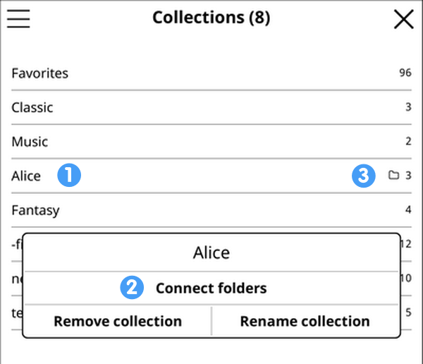
- Yukarıdaki görselde görülen Koleksiyonlar ekranına gidin.
- Klasör bağlamak istediğiniz koleksiyonun adına uzun basın (1).
- Açılır menüden Klasörleri bağla öğesini seçin (2).
- Bağlı klasörler listesi ekranı açılır.
- O ekranın sol üst köşesindeki ARTI simgesine basarak bir klasör ekleyin; bu, Klasör seçici ekranını açar.
- Daha fazla klasör bağlamak istiyorsanız son adımı tekrarlayın.
Yukarıdaki görselde görebileceğiniz gibi bağlı klasörleri olan koleksiyonlarda bir klasör simgesi bulunur (3).
Eşitleme için bir klasörün alt klasörlerini de dahil etmek isteyebilirsiniz. Yukarıdaki 4. adımda Bağlı klasörler listesi ekranını açtığınızda, açılır menüden alt klasörleri dahil etmek/hariç tutmak için bir klasöre uzun basabilirsiniz.
Bir klasörün koleksiyonunuzla bağlantısı nasıl kesilir:
- Yukarıdaki görselde görülen Koleksiyonlar ekranına gidin.
- Klasör bağlamak istediğiniz koleksiyonun adına uzun basın (1).
- Açılır menüden Klasörleri bağla öğesini seçin (2).
- Bağlı klasörler listesi ekranı açılır.
- Bağlantısını kesmek istediğiniz klasöre uzun basın ve açılır menüden Klasörün bağlantısını kes öğesini seçin.
Koleksiyonlarınız KOReader'ın profiller özelliğiyle birlikte kullanılabilir. profiller hakkında henüz bilginiz yoksa, işte Profiller bölümümüzden bir açıklama:
Bir profil, temelde tek bir hareketle tetiklenebilen bir eylemler kümesidir (bir makro gibi).
Örneğin bazı tür kitapları okurken her zaman şunları yaptığınızı düşünün:
- Ekranı yatay yönlendirmeye döndürürsünüz
- Yazı tipi boyutunu ve kontrastı artırın ve
- Ekran ışığını açarsınız
Profiller eklentisiyle tüm bunları tek bir eylemle aynı anda yapabilirsiniz.
Bir profili elle çalıştırabilirsiniz, ancak profillerin asıl gücü otomatik çalıştırma özelliğiyle ortaya çıkar. Bu özelliği kullanarak bazı koşullara bağlı olarak bir profili tetikleyebilirsiniz. Kılavuzun ilgili bölümünün bağlantısı: Profilin Otomatik Çalıştırılması. Şimdilik burada yalnızca bir tetikleme koşulunu açıklayacağız: Koleksiyonlar.
Temel olarak bazı profiller oluşturup açılan bir kitap belirli bir koleksiyondaysa otomatik çalışacak şekilde ayarlayabilirsiniz. Bazı kullanışlı örnekler:
- Tüm mangalarınızı bir Manga koleksiyonuna ekleyebilir ve bu koleksiyondan bir manga açtığınızda sayfa çevirme yönünü Sağdan Sola çeviren ve sayfa çevirme dokunuşlarını ve kaydırmalarını ters çeviren bir profil oluşturabilirsiniz.
- Çizgi romanlarınızı, hayalet görüntüyü önlemek için ekran yenileme aralığını her sayfaya düşüren bir profili tetikleyebilecek bir koleksiyona ekleyebilirsiniz.
- Sorunlu PDF'lerinizi bir koleksiyona ekleyebilirsiniz; böylece onları açtığınızda bir profil aracılığıyla Otomatik OCR veya Yeniden akış kipi etkinleştirilir.
KOReader, e-kitap okuyucularının sınırlı donanımında bile verimli çalışacak şekilde tasarlanmıştır. Ancak KOReader'ı yavaşlatan kötü biçimlendirilmiş belgeler her zaman olacaktır. Burada dosya türüne göre belgenizi iyileştirmek için bazı ipuçları vereceğiz.
- EPUB dosyaları temelde metin ve görsellerden ve bu öğelerin ekranda nasıl biçimlendirileceğini belirleyen bazı kurallardan oluşur. İdeal koşullarda bu oldukça basit bir süreçtir; bu yüzden EPUB dosyaları KOReader'da genellikle hızlıdır. Ancak bazı EPUB kitaplar o kadar çok biçimlendirme kuralı ekler ki KOReader tek bir cümleyi bile göstermek için pek çok hesaplama yapmak zorunda kalır. Bu da kitabın açılmasını, sayfaların çevrilmesini ve yazı tipi kalınlığı veya satır aralığı gibi görünüm özelliklerinin değiştirilmesini yavaşlatır.
KOReader sabit düzenli EPUB'ları desteklemez. Bunlar açılır ancak yeniden akışlı EPUB'lar gibi işlenir ve muhtemelen güzel veya okunaklı görünmez.
- EPUB dosyaları aslında HTML dosyaları içeren ZIP arşivleridir. Bazı kitaplar tek bir HTML dosyası olabilirken, diğerleri kitabın her bölümünün ayrı bir HTML dosyası olması gibi birden fazla HTML dosyasından oluşabilir. Kitabınız yalnızca tek bir HTML dosyasıysa, kısmi işleme çalışamaz. Bu yüzden görünüm değişiklikleri bölümlere ayrılmış kitaplara göre daha yavaş olur, çünkü her değişiklikte KOReader yalnızca geçerli bölümü değil, yine de tüm kitabı hesaplamak zorundadır.
- Nadiren görülen bir diğer yavaşlık durumu, içeriğin bir HTML tablo etiketi içine alınmış olmasıdır. KOReader her sayfa çevirmede her hücreyi işlemek/çizmek zorundadır; bu yüzden (çok sayıda paragraf içeren) bir hücre 50 sayfaya yayılıyorsa sayfa çevirme oldukça yavaşlar.
Çözümler:
- Belgenin tüm stil sayfalarını yok saymanın onu hızlandırıp hızlandırmadığını görmek için alt menüde Gömülü Stiller seçeneğini KAPALI olarak ayarlayabilirsiniz (elbette muhtemelen güzel biçimlendirmeleri kaybedersiniz, ancak sorunun kaynağını anlamış olursunuz).
- HTML ve CSS bilginiz varsa HTML ve CSS dosyalarını doğrudan KOReader'dan inceleyebilir, kalitelerini veya gereksiz karmaşıklıklarını kendiniz değerlendirebilirsiniz. Bunun için bir metne uzun basıp açılan menüden HTML'yi görüntüle seçeneğini seçebilirsiniz.
- Yukarıdaki sorunlar bölümünde bahsedilen “içeriğin bir tabloya alınması” sorununu yaşıyorsanız şu kitaba özgü stil ince ayarını (table, tr, td { display:block; }) şuraya ekleyebilirsiniz:
- Calibre’in e-kitap düzenleyicisi EPUB dosyalarını sorunlara karşı denetleyebilir ve sorunların bazılarını düzeltmek için araçlara sahiptir.
Calibre'i buradan indirebilirsiniz.
Calibre'in Kitabı denetle aracı için talimatları buradan görebilirsiniz.
- EPUBCheck uygulaması EPUB dosyalarının geçerliliğini denetleyebilir ve birçok hata türünü algılayabilir. Sorunun EPUBCheck ile tespit edildiği örnek bir konuyu buradan okuyabilirsiniz.
Komut satırı sürümünü buradan indirebilirsiniz.
Ya da bir grafik kullanıcı arayüzü sürümünü buradan indirin.
PDF dosyaları şu sorunlar nedeniyle yavaş olabilir:
- PDF dosyasının kendisi cihazınızın belleği için fazla büyük olabilir.
- PDF dosyası çok büyük görsel dosyaları içerebilir. Normal bir metin katmanına (seçip vurgulayabildiğiniz) sahip belgelerde bile gömülü başka bir görsel katmanı (genellikle sayfanın taranmış hali) bulunabilir. Bu büyük görsellerin ekranınıza sığacak şekilde yeniden ölçeklendirilmesi gerektiğinden ve bu işlem işlemciyi yoğun biçimde kullandığından açılış ve sayfa çevirme yavaşlar.
- PDF dosyasında, çok sayıda görsel ve metin kutusu içeren bir dergi sayfası gibi, hassas konumlandırma gerektiren çok sayıda ayrı öğe bulunabilir. Bu durumda KOReader tüm bu öğeleri hesaplayıp çizmek zorundadır ve bu zaman alabilir.
- Otomatik düzeltme özelliği (sayfanın eğimini ayarlamanızı sağlar) da okuyucunuzu yavaşlatabilir.
- YENİDEN AKIŞ AÇIK iken İŞLEME KALİTESİNİ YÜKSEK olarak ayarlarsanız metin daha hoş görünür, ancak belgenize bağlı olarak VARSAYILAN ayara göre çok daha yavaş olabilir (sayfa çevirme başına birkaç saniyeye kadar).
Ne yazık ki kötü PDF dosyaları için pek fazla çözüm yoktur. Sorunlu PDF'ler için genellikle en iyi çözüm, daha iyi bir sürümünü bulmaya çalışmaktır. Ya da indirilebilecek başka bir dosya türü varsa (örneğin PDF yerine EPUB veya tersi) o biçimi deneyebilirsiniz.
Ayrıca belgelerinizi daha esnek olan EPUB biçimine dönüştürmeyi de deneyebilirsiniz. PDF'lerle çalışırken size yardımcı olabilecek bazı uygulamalar:
- Calibre, belgelerinizi birçok biçim arasında dönüştürebilir. Ayrıca en popüler e-kitap biçimleri olan EPUB ve Kindle biçimindeki e-kitapları düzenlemenizi (ve sorunları düzeltmenizi) sağlayan yerleşik bir düzenleyiciye de sahiptir.
- K2pdfopt, PDF/DJVU dosyalarını mobil e-okuyucular ve akıllı telefonlar için iyileştirir. Çok sütunlu PDF/DJVU dosyalarında iyi çalışır ve taranmış PDF dosyalarında bile metni yeniden akışa sokabilir. Ayrıca genel amaçlı bir PDF kopyalama/kırpma/yeniden boyutlandırma/OCR işleme aracı olarak da kullanılabilir.
- OCRmyPDF, taranmış PDF dosyalarına (metin içermeyen, yalnızca görselden oluşan) bir OCR metin katmanı ekleyerek onlarda arama yapılmasını veya kopyalayıp yapıştırılmasını sağlayan bir komut satırı uygulamasıdır. Özellikle eski taranmış kitapları okumak için yararlı olabilir. Ayrıca daha küçük dosya boyutu için görselleri iyileştirebilir.
Manga ve çizgi romanları optimize etmek için ayrı bir bölümümüz var: Mangayı Optimize Etme
KOReader çok verimli bir metin işleme motoruna sahiptir. Ayrıca kitaplar ilk açılışta önbelleğe alınır, böylece KOReader onları bir dahaki sefere daha hızlı açabilir. Ancak bu iyileştirmelere rağmen alışılmadık derecede büyük metin dosyalarının açılması yine de daha uzun sürebilir. Örneğin çevrim içi Çin romanlarının on milyonlarca sözcüğe ulaştığı ve genellikle metin dosyası olarak kaydedildiği bilinir.
Büyük metin dosyalarındaki sorun, kitabın ilk kez işlenmesi ve daha sonra metin görünümünün değiştirilmesi sırasındaki gecikmedir. Çok büyük bir .txt kitabın yazı boyutunu değiştirmeye çalışırsanız, kitabın tamamının yeniden işlenmesi gerektiğinden her ayarlamadan sonra büyük bir gecikme görebilirsiniz. KOReader'ın bu tür gecikmeleri önemli ölçüde kısaltan bir kısmi işleme sistemi vardır. Ancak bu dosyalar bölümlere ayrılmadığı için bu özellik metin dosyalarıyla kullanılamaz (kısmi işleme hakkında daha fazla bilgiyi buradan okuyabilirsiniz).
Kısmi işleme hızlandırmasından yararlanmak için büyük metin dosyanızı Calibre uygulamasını kullanarak EPUB biçimine dönüştürebilirsiniz. Calibre, dönüştürme sırasında metin dosyanızı otomatik olarak daha küçük ayrı dosyalara böler ve bunları standart bir EPUB dosyasında toplar. Bu dönüştürmeden sonra kitabınızın görünümünü çok daha hızlı değiştirebilirsiniz. Calibre'i şu sayfadan indirebilir ve TXT'den EPUB'a dönüştürme işlemi için çevrim içi eğitimler bulabilirsiniz.
SingleFile, Mozilla Firefox, Google Chrome ve Microsoft Edge için bir tarayıcı uzantısıdır. Bu uzantı, bir web sayfasını tüm kaynakları (görseller, stil sayfaları, betiğler) gömülü olarak tek bir .html dosyası halinde kaydetmenizi sağlar. Ardından bu tek dosyayı cihazınıza kopyalayıp KOReader ile okuyabilirsiniz.
Bir OPDS (Open Publication Distribution System) kataloğu, dijital bir kitaplık dizini gibi davranan çevrim içi bir akyımdır. KOReader OPDS desteğine sahiptir; böylece bu dijital kitaplıklara göz atabilir, içlerinde kitap arayabilir ve kitapları doğrudan cihazınıza indirebilirsiniz.
KOReader, Project Gutenberg ve Standard Ebooks gibi bazı büyük OPDS katalogları önceden yapılandırılmış olarak gelir ve başka OPDS katalogları da ekleyebilirsiniz. OPDS iletişim kutusunu açmak için şuraya gidin:
Kişisel OPDS sunucularını kullanma
Herkese açık katalogların yanı sıra kendi kitaplığınızı yönetmek için de OPDS sistemini kullanabilirsiniz. Calibre uygulamasını kullanarak bilgisayarınızdaki kitapları, doğrudan KOReader'dan göz atabileceğiniz bir OPDS kataloğu olarak sunabilirsiniz. Bir OPDS sunucusunu yapılandırmaya ilişkin Calibre talimatları için buraya tıklayın.
Kavita de açık kaynaklı, zengin özellikli, platformlar arası bir okuma sunucusudur. Kendi sunucunuzu kurup okuma koleksiyonunuzu arkadaşlarınız ve ailenizle paylaşabilirsiniz. Ayrıca KOReader için OPDS ve ilerleme eşitleme desteği de vardır. Bu uygulamayı kullanarak kitaplığınıza okuma cihazınızdan erişebilir ve kaldığınız yerden okumaya devam etmek için okuma konumlarını farklı cihazlar arasında eşitleyebilirsiniz. Projenin sayfası burada. KOReader kullanıcıları için OPDS ve ilerleme eşitleme belgeleri burada.
Kendi OPDS sunucularınızı kurduktan sonra onları KOReader'a eklemeniz gerekir. Talimatlar burada.
KOReader'ı e-okuyucu, telefon, tablet veya masaüstü bilgisayar gibi birkaç cihazda kullanıyorsanız KOReader okuma ilerlemenizi bunlar arasında eşitleyebilir. İlerleme eşitleme özelliğini kullanarak örneğin evdeki e-okuyucunuzdan yolculuk sırasında telefonunuza geçtiğinizde okumaya kesintisiz devam edebilirsiniz.
Bu özellik ilerleme eşitleme eklentisi tarafından yönetilir. Eşitlemeyi ayarlamak, aşağıda açıklayacağımız şu üç adımı içerir:
- Bir eşitleme hesabı oluşturun
- Eşitlemek istediğiniz tüm cihazlardan eşitleme hesabınıza giriş yapın
- Okuma ilerlemenizi otomatik olarak veya elle eşitleyin
Bir eşitleme hesabı oluşturmak için cihazınızda bir ağa bağlanın ve KOReader'da ilerleme eşitleme eklentisini açın:
ve Kaydol/Giriş yap düğmesine basın.
Açılan pencerede bir kullanıcı adı ve parola girin, ardından Kaydol düğmesine basın. Bu, KOReader eşitleme sunucusunda okuma ilerlemenizi tutacak bir hesap oluşturur.
Eşitlemek istediğiniz cihazlarda aynı menüyü açın. Kullanıcı adınızı ve parolanızı girin ve bu kez Giriş yap düğmesine basın. Bundan sonra cihazlarınız eşitleme hesabınıza bağlanmış olur.
Cihazlarınıza tanınabilir adlar verebilirsiniz. Yine aynı menüden Cihaz ana bilgisayar adı öğesine basın ve geçerli cihaz için bir ad girin.
Her şey ayarlandıktan sonra okuma ilerlemenizi otomatik olarak veya elle eşitleyebilirsiniz:
- Otomatik eşitleme: Otomatik olarak eşitlemek için Belgeleri otomatik olarak eşitlenmiş tut menü öğesini etkinleştirin. Artık bir kitabı kapattığınızda veya cihazınızı uyku kipine alıp uyandırdığınızda KOReader okuma ilerlemenizi sunucuya gönderir (elbette bunun için kullanılabilir bir ağ bağlantısı gerekir).
- Elle eşitleme: Pil veya erişilebilirlik nedeniyle cihazınızda sürekli internet bağlantısı yoksa elle eşitlemeyi seçebilirsiniz. Eşitlemeyi tetiklemek için birçok seçeneğiniz vardır:
- Menüden: İlerleme eşitleme eklentisinin menüsünde, geçerli cihazdaki ilerlemenizi sunucuya göndermek için Bu cihazdaki ilerlemeyi şimdi gönder menü öğesine basabilirsiniz. Sunucudaki en son ilerlemeyi almak için Diğer cihazlardaki ilerlemeyi şimdi al menü öğesine basın.
- Hareketlerle: Bu eylemler (ilerlemeyi gönderme/alma) Hareket yöneticisinde bulunur; böylece onları istediğiniz herhangi bir harekete atayabilirsiniz.
- Hızlı menü ile: Bu eylemleri Hızlı Menünüze ekleyebilirsiniz.
- Profillerden: Bu eylemleri Profillerinize ekleyebilirsiniz. Özellikle profillerin otomatik çalıştırma özelliğiyle eşitlemeyi çeşitli filtre ve koşullarla tetikleyebilirsiniz.
Bir belgenin iki farklı cihazdaki ilerlemesini eşitlemek için KOReader önce bu iki dosyayı "aynı" olarak tanımlamalıdır. Bu bazen zor olabilir; bu yüzden KOReader'ı kullanma biçiminize göre seçebileceğiniz iki yöntemimiz var. Yöntemi ilerleme eşitleme menüsündeki Belge eşleştirme yöntemi seçeneğinden değiştirebilirsiniz.
İkili eşleştirme (varsayılan)
İlerleme eşitleme varsayılan olarak dosyaları tanımlamak için İkili eşleştirme yöntemini kullanır. Bu yöntemde KOReader dosyanın içeriğinden kısmi bir MD5 özeti (şuna benzer: 0b229176d4e8db7f...) oluşturur. Dosyadaki en küçük bir değişiklik bile bu özeti tamamen değiştirir; bu yüzden ikili eşleştirme yöntemi yalnızca iki dosya da birebir aynıysa çalışır.
Tam olarak aynı dosyayı tüm cihazlarınıza elle kopyalıyorsanız bu yöntem çalışmalıdır. Ancak örneğin kitapları cihazlarınıza göndermek için Calibre kullanıyorsanız ikili eşleştirme başarısız olur.
Çünkü Calibre, görüntüleyici ilerlemesi gibi kendi bilgilerini doğrudan dosyaya yazar ve bu da dosya özeti hesaplamasını değiştirir; bu nedenle KOReader bu dosyaları (özgün olanı ve Calibre tarafından değiştirileni) iki farklı kitap olarak değerlendirir. Bu sorunu yaşıyorsanız aşağıda açıklanan alternatif yöntemi kullanabilirsiniz.
Dosya adı eşleştirme
Bu, yukarıda açıklandığı gibi Calibre gibi başka yazılımların belgelerde yaptığı değişiklikler nedeniyle dosyaları cihazlar arasında biraz farklılık gösterebilen kullanıcılar için tasarlanmış, "daha esnek" bir eşleştirme yöntemidir.
Bu yöntemde KOReader, iki belgeyi eşleştirmek için yalnızca iki belgenin dosya adlarının (uzantı dahil) aynı olup olmadığını denetler. Dolayısıyla kitaplığınızı farklı cihazlar arasında yönetmek için Calibre veya başka bir kitaplık yönetim yazılımı kullanıyorsanız Dosya adı eşleştirme yöntemine geçebilirsiniz.
- KOReader sync server, yani KOReader'ın eşitleme sürecini yürüten yazılım, açık kaynaklı bir projedir. Kaynak kodu dahil daha fazla bilgiyi GitHub sayfasında bulabilirsiniz.
- Eşitleme sunucusu dosya adını veya içeriğini saklamaz. Yani sunucu ne okuduğunuzu bilemez. Bir belgenin ilerlemesini eşitlediğinizde yalnızca şu bilgiler aktarılır ve sunucuda tutulur:
- Kullanıcı adı (sizin seçtiğiniz)
- Belgenin benzersiz kimliği (dosyanın şuna benzeyen MD5 özeti: 0b229176...)
- Bu belge için en ileri okuma konumu
- Parolanız sunucuda saklanmaz (yalnızca bir MD5 özeti tutulur).
- KOReader ile eşitleme sunucusu arasındaki tüm iletişim HTTPS ile güvence altına alınır.
İsterseniz kendi eşitleme sunucunuzu barındırma seçeneğiniz de vardır. Resmî KOReader eşitleme sunucusunu ya da şu sayfada görebileceğiniz alternatiflerden birini kullanabilirsiniz.
Ayrıca Calibre-Web gibi, tümleşik bir KOReader eşitleme sunucusu içeren kitaplık yönetim çözümleri olan başka projeler de vardır.
Kitap Üst Veri Arşivi özelliğini daha iyi anlamanız için önce KOReader'ın dosya silme davranışını açıklayacağız:
Normalde bir belgeyi cihazınıza kopyalayıp ilk kez açtığınızda KOReader belge_adiniz.sdr gibi bir ada sahip yeni bir dizin oluşturur ve bu belgenin ayarlarını, notlarını ve ilerlemesini saklamak için bu dizini kullanır.
Bir belgeyi KOReader'ın Dosya Tarayıcısını kullanarak sildiğinizde KOReader bu .sdr dizinini de siler. Bu, silinen belgeye ait tüm ayarları, notları ve ilerlemeyi kaybettiğiniz anlamına gelir. Bu belgeyi e-okuyucunuza yeniden kopyalayıp KOReader ile açarsanız ilk kez açıyormuş gibi olur.
Peki örneğin bitirdiğiniz kitapları silmek istiyor (belki kitaplığınızdaki kalabalıktan hoşlanmıyorsunuz veya yeriniz kalmadı) ama bu kitaplardaki vurguları da kaybetmek istemiyorsanız ne olacak? Kitap Üst Veri Arşivi özelliği bunu yapmanıza olanak tanır.
Bu özellik nasıl çalışır:
- Önce şurada bir arşiv konumu seçerek özelliği etkinleştirmeniz gerekir:
ÜST MENÜ / / Belge / Kitap üst veri arşivi / Arşiv konumu:
- Artık Dosya Tarayıcısından bir belge sildiğinizde onay iletişim kutusunda şu seçeneğin etkin olduğunu görürsünüz: [ ] kitabı üst veri arşivine kaydet
- Silerken bu seçeneği işaretlerseniz KOReader bu belgenin ayar dosyasını yukarıdaki ilk adımda seçtiğiniz arşiv dizinine kopyalar.
- Ardından KOReader belgenizi ve onunla ilişkili belge_adiniz.sdr dizinini siler.
Belgeniz silinmiştir, ancak ayarları arşivdedir. Bu belgeyi cihazınıza yeniden kopyalayıp açarsanız KOReader bu belgenin ayarlarının arşivde olduğunu fark eder ve size şunu söyler: "Bu kitap daha önce bu cihazda açılmış. Üst verilerini arşivden geri yüklemek ister misiniz?" Geri yükle düğmesi bu belge için arşivlenmiş ayar dosyasını kullanır; böylece bu belgenin ayarlarını, notlarını ve ilerlemesini geri alırsınız.
Arşivlenmiş belgelerin listesini burada görebilirsiniz:
/ Belge / Kitap üst veri arşivi / Arşivlenmiş kitaplar listesiBu listeden, belgenin adına dokunarak arşivlenmiş belgenin bilgilerine/üst verilerine ve yer imlerine erişebilirsiniz. Ayrıca belgeyi arşivden silebilirsiniz.
Kitap kapatılırken üst verileri arşive kaydet
Bu seçeneği yukarıda bahsedilen aynı menüden etkinleştirirseniz KOReader her belgeyi kapatırken o belgenin ayar dosyasının bir kopyasını kaydeder. Bir belgeyi ve onun .sdr klasörünü KOReader dışında (Android dosya yöneticisiyle, bilgisayarınıza bağlıyken...) silseniz bile belgenizin ayarlarının bir yedeği elinizde kalır.
Kitap kapatılırken üst verileri arşive kaydet seçeneği etkinse ancak dosya silme iletişim kutusunda kitabı üst veri arşivine kaydet seçeneğinin işaretini kaldırırsanız, KOReader bu belge için daha önce oluşturulmuş ayar arşivi dosyasını siler.
KOReader, kitaplarınızla ilgili ayarları ve ek bilgileri kitap dosyanızla aynı dizinde saklar. Biz buna üst veri diyoruz ve şunları içerir:
- Kitabın görsel ayarları
- Kitabın okuma ilerlemesi
- Vurgular, yer imleri ve notlar
Yakın zamanda yaptığımız bir değişiklikle, cihazlar arası eşitlemeyle ilgili bazı sorunları çözmek için bu üst verileri saklamanın yeni yollarını ekledik. Şu anda üst verileri saklamanın üç farklı yöntemi vardır ve her yöntemin kendi avantajları/dezavantajları vardır.
Bu ayarı şu menüden değiştirebilirsiniz:
/ Belge / Kitap üst verisi konumu / Belge / Kitap üst verisi konumu: kitap klasörüBu, KOReader'ın yeni bir kurulumunda kullanılan varsayılan yöntemdir. Bu yöntemde Alice in Wonderland.epub dosyasını cihazınıza kopyalayıp ilk kez açtığınızda aynı dizinde Alice in Wonderland.sdr adında bir klasör oluşturulur. Bu dizin, bu kitaba ait ayarlarınızın, notlarınızın ve kitap ilerlemenizin dosyalarını içerir.
Avantajlar
- Her kitabın ayarlarını elle yedekleyip geri yükleyebilirsiniz.
- Syncthing veya Dropbox gibi bir sistemle dizin eşitlemesi ya da yedekleme yaptığınızda ayarlarınız kitaplarınızla birlikte eşitlenir.
- Kitabınızın bulunduğu üst dizinleri yeniden adlandırabilirsiniz; bu KOReader'ın kafasını karıştırmaz.
Dezavantajlar
- Kitaplığınızı KOReader dosya tarayıcısı dışında kitap dosyalarını veya onlara eşlik eden .sdr klasörlerini taşıyarak/yeniden adlandırarak yeniden düzenlerseniz, bu kitapların üst verilerini hiçbir uyarı olmadan kaybedersiniz.
- Bu .sdr klasörleri, kitaplık dizinlerinize başka bir dosya tarayıcısıyla veya bilgisayarınızdan göz attığınızda görünür olur ve bu da görünümünüzü kalabalıklaştırabilir.
/ Belge / Kitap üst veri konumu: ./docsettingsBu yöntem temelde yukarıdaki varsayılan yöntemle aynıdır. Farkı, bu yöntemde kitaplarınızın tüm .sdr klasörlerinin, kitaplık dizininizde kitap dosyalarının yanında değil, KOReader ana dizin yapısı altında bulunan tek bir dizinde yer almasıdır.
Avantajlar
- Kitap .sdr klasörleri yalnızca KOReader tarafından görülür ve kullanılır. Kitaplığınıza başka bir dosya tarayıcısıyla veya bilgisayarınızdan göz attığınızda kitaplık dizinlerinizin görünümünü kalabalıklaştırmazlar.
Dezavantajlar
- Kitaplığınızı KOReader dosya tarayıcısı dışında kitaplık dizinlerini, kitap dosyalarını veya onlara eşlik eden .sdr klasörünü taşıyarak/yeniden adlandırarak yeniden düzenlerseniz, bu kitapların üst verilerini hiçbir uyarı olmadan kaybedersiniz.
- Kitap üst verileriniz kitaplık klasörlerinizde olmayacağından kitaplığınızın herhangi bir eşitlemesi veya yedeklemesi bunları içermez.
/ Belge / Kitap üst veri konumu: ./hashdocsettingsBu yöntem, .sdr klasörleri dahili bir dizin altında bulunacağı için bir öncekine benzer. Ancak bu yöntem, önceki yöntemin eksikliklerini gidermek için geliştirilmiştir. Çünkü normalde bir kitabı KOReader dışında (cihazın kendi dosya yöneticisi/okuyucusuyla veya bağlı bir bilgisayardan) yeniden adlandırırsanız, .sdr klasörünün adı artık eşleşmez ve o kitaba ait üst verileriniz kaybolur. Dosya işlemleri için yalnızca KOReader Dosya Tarayıcısını kullanıyorsanız bu durum otomatik olarak ele alınır ve herhangi bir olumsuz sonuç doğmaz.
Bu ÖZETLENMİŞ yöntemde .sdr klasörleri kitabın dosya yoluna/dosya adına göre tanımlanmaz. Bunun yerine kitapları ayarlarına bağlamak için kısmi bir MD5 özeti kullanılır. Bu özet, kitap için benzersiz bir kimlik olarak kullanılır ve kitap dosyasının içeriğine göre hesaplanır. Aynı özet, kitabın .sdr klasörünün adlandırılmasında da kullanılır.
Avantajlar
- Kitap .sdr klasörleri yalnızca KOReader tarafından görülür ve kullanılır. Kitaplık dizinlerinize başka bir dosya tarayıcısıyla veya bilgisayarınızdan göz attığınızda kitaplık dizinlerinizin görünümünü kalabalıklaştırmazlar.
- Kitaplarınızı başka bir dosya tarayıcısıyla veya bilgisayarınızdan yeniden adlandırabilir, taşıyabilir ve kopyalayabilirsiniz. KOReader bu işlemlerden sonra da kitapları tanımaya devam eder.
- Bu yöntemde KOReader, kopyalar farklı cihazlarda olsa bile kitabın tüm kopyalarını aynı .sdr klasörüyle ilişkilendirir. Örneğin Syncthing kullanıyorsanız bu yöntem, /hashdocsettings klasörünüzü kitap dosyalarınızla birlikte KOReader yüklü birçok cihaz arasında eşitlemenizi sağlar. Bu kitapların her cihazdaki göreli yolları farklı olsa bile notlarınızı ve ilerlemenizi cihazlarınız arasında eşitlenmiş olarak tutabilirsiniz. Bu, diğer yöntemlerle mümkün değildir.
Dezavantajlar
- Dosyayı doğrudan değiştiren her türlü işlem (PDF'lere vurgu yazmak veya Calibre'den indirmek gibi) dosyayı değiştirir ve dolayısıyla MD5 kimliği değişir (bu yöntemde güvenli olan yeniden adlandırma veya taşımanın aksine). Bu durumda KOReader kitabı tanıyamaz ve bu kitaplar üst verilerini kaybeder.
- Dosya kimliklerinin hesaplanması, büyük dizinlerde gezinirken Dosya tarayıcısını yavaşlatabilir.
KOReader'ı kontrol etmek için kullanabileceğiniz birçok hareket türü vardır. Bazı hareketlerin ekranın neresinde kullanılabilecekleri ve hangi yönlerin desteklendiği konusunda sınırlamaları vardır. Bu sınırlamalar aşağıda belirtilmiştir.

|
DOKUNMA / ÇİFT DOKUNMA TEK parmakla tek veya çift dokunma ÇALIŞTIĞI YER: Ekranın herhangi bir yeri |
 |
DOKUN VE BASILI TUT TEK parmakla tek dokunup basılı tutma ÇALIŞTIĞI YER: Yalnızca dört köşede |
 |
İKİ PARMAKLA DOKUNMA Aynı anda İKİ parmakla tek dokunma ÇALIŞTIĞI YER: Yalnızca dört köşede |
 |
AÇMA VE KISTIRMA Bir telefonda veya tablette yakınlaştırıp uzaklaştırmakla aynıdır. ÇALIŞTIĞI YER: Ekranın herhangi bir yeri Bu hareket cihazınıza bağlı olarak daha az güvenilir çalışabilir. Durum buysa lütfen başka bir hareket türü seçin. |
 |
TEK PARMAKLA KAYDIRMA TEK parmakla kaydırma hareketi ÇALIŞTIĞI YER: Ekran kenarları (YATAY ve DİKEY), kenarlar dışında her yer (ÇAPRAZ) |
 |
İKİ PARMAKLA KAYDIRMA Aynı anda İKİ parmakla kaydırma hareketi ÇALIŞTIĞI YER: Ekranın herhangi bir yeri |
 |
ÇOKLU KAYDIRMA Parmağınızı kaldırmadan art arda yapılan birden fazla kaydırma. Örneğin U harfini çizer gibi (AŞAĞI-SAĞA-YUKARI) ÇALIŞTIĞI YER: Ekranın herhangi bir yeri |
Simgeler: Econceptive, Noun Project |
Bu bölüm, KOReader'ı yüklediğinizde etkin olan hareketleri listeler. Bu hareketleri tercihlerinize göre şu yolla değiştirebilirsiniz:
/ Hareket YöneticisiŞu anda tanımlı hareketlerinize genel bir bakışı burada görebilirsiniz:
/ Dokunmalar ve hareketler / Hareketlere genel bakışSol Üst Köşe > Sayfa çevirmeyi aç/kapat
Sağ Üst Köşe > Yer imini aç/kapat
Aynı anda karşılıklı çapraz köşeler > Ekran görüntüsü al
Sol Taraf > -10 sayfa git
Sağ Taraf > +10 sayfa git
Kısa çapraz kaydırma > Tam ekran yenileme
Uzun çapraz kaydırma > Ekran görüntüsü al
- Önceki konuma geri dön
- En son yer imine git
- Belgeye hızlıca göz at
- Yer imleri
- İçindekiler
- Ön ışık iletişim kutusunu göster
- Yeniden akışı aç/kapat
- Geçmiş
- Kitap durumu
- Sayfaya git
- Geri
- Önceki bölüm
- Sonraki bölüm
- Önceki belgeyi aç
- Favoriler
Bu, Hareket Yöneticisi menüsünü kullanarak bir harekete atayabileceğiniz tüm eylemlerin listesidir. Burada bir eylem aramak için tarayıcınızın arama işlevini (genellikle Ctrl+F) kullanabilirsiniz. Bu eylemler kendi Hızlı Menünüzde de kullanılabilir. Daha fazla bilgi için lütfen kılavuzdaki ilgili bölüme bakın.
Şu anda tanımlı hareketlerinize genel bir bakışı burada görebilirsiniz:
/ Dokunmalar ve hareketler / Hareketlere genel bakış- Parmak hareketi genel bakış
- Dosya tarayıcı
- Önceki belgeyi aç
- Geçmiş
- Geçmiş arama
- Sık Kullanılanlar
- Dermeler
- Derme arama
- Yer imi tarayıcısı
- Sözlüğe bak
- Sözlük ön ayarını yükle
- Sözlük ön ayarları arasında geçiş yap
- Vikipedi arama
- Menü görüntülensin
- Menü arama
- Son kitap klasöründeki bir sonraki dosyayı aç
- Önceki dosya son kitap klasöründe açılsın
- Not defteri dosyası
- Ekran görüntüsü
- SSH sunucusunu aç/kapat
- Gök günlüğü görüntülensin
- Okuma istatistikleri
- Okuma istatistikleri: aç/kapat
- Okuma istatistikleri: ilerlemeyi göster
- Okuma istatistikleri: zaman aralığını göster
- Okuma istatistikleri: takvim görünümünü göster
- Okuma istatistikleri: bugünün zaman çizelgesini göster
- Okuma istatistikleri: senkronize et
- Fast Reader
- RSVP Okuma
- Ekranı uyandır
- USB depolamayı başlat
- Uyu
- KOReader Yeniden Başlatılsın
- Yeniden başlat
- Gücü kapat
- KOReader uygulamasından çık
- Köşelere uzun basmayı aç/kapat
- Köşelere uzun basmalar yok sayılsın
- Dokunma girişini aç
- Dokunma girişini kapat
- Dokunma girişini aç/kapat
- Sayfa çevirme düğmeleri ters çevrilsin
- Sayfa çevirme düğmelerinin ters çevrilmesini ayarla
- Tuş yinelemesini değiştir
- İvme ölçeri aç/kapat
- İvme ölçeri 5 saniyeliğine etkinleştirin
- Otomatik döndürme kilidini geçerli yöne aç/kapat
- Otomatik döndürme kilidini geçerli yönlendirmeye ayarla
- Döndürme
- Doğrultuyu değiştir
- Doğrultuyu tersine çevir
- Saat yönünde 90° döndür
- Saat yönünün tersine 90° döndür
- Kablosuz ağı aç
- Kablosuz ağı kapat
- Kablosuz ağı aç/kapat
- Ağ bilgilerini göster
- Pil istatistikleri
- Sistem istatistikleri
- Ön aydınlatma penceresi görüntülensin
- Ön aydınlatmayı aç/kapat
- Ön aydınlatma parlaklığını ayarla
- Ön aydınlatma parlaklığını artır
- Ön aydınlatma parlaklığını azalt
- Ön aydınlatma sıcaklığını ayarla
- Ön aydınlatma sıcaklığını artır
- Ön aydınlatma sıcaklığını azalt
- Gece kipini aç/kapat
- Gece modunu ayarla
- Tam ekran yenileme
- Tam yenileme hızı (her zaman)
- Tam yenileme hızı (gece kipinde değil)
- Tam yenileme hızı (gece kipinde)
- Bölüm sınırlarında her zaman yanıp sön
- Bölüm başı ve sonunda parlamayı aç/kapat
- Bölümün 2. sayfasında asla yanıp sönme
- Bölümün 2. sayfasında parlamayı aç/kapat
- Görsel içeren sayfalarda her zaman yanıp sön
- Görseller bulunan sayfalarda parlamayı aç/kapat
- Otomatik sıcaklık kapalı
- Güneş konumu ile otomatik sıcaklık
- Zamanlama ile otomatik sıcaklık
- Gece yarısına yakın otomatik sıcaklık
- Öğlene yakın otomatik sıcaklık
- Kipler arasında otomatik sıcaklık değişimi
- Görüntüleme modunu ayarla
- Sıralama ölçütü
- Sıralamayı tersine çevir
- Klasörler ve dosyalar karışık
- Artı menüsü görüntülensin
- Seçim kipini değiştir
- İçeriği yenile
- Klasör kısayolları
- Dosya arama
- Son dosya arama sonuçları
- Üst klasör
- Sayfaya git
- Geri
- Bulut depolama
- Geçmişteki tüm kitaplardaki tüm notları dışa aktar
- Alt menü görüntülensin
- Durum çubuğunu aç/kapat
- Bölüm ilerleme çubuğunu aç/kapat
- Durum çubuğu ön ayarını yükle
- Önceki bölüm
- Sonraki bölüm
- İlk sayfa
- Son sayfa
- Rastgele sayfa
- Sayfaları çevir
- Sayfaya git
- Belgeye göz at
- Geçerli sayfayı sabitle
- Sabitlenmiş sayfaya git
- Önceki yer imi
- Sonraki yer imi
- İlk yer imi
- Son yer imi
- Son yer imi
- Geri
- Önceki konuma geri dön
- Sonraki konuma git
- En yakın bağlantıyı izle
- En yakın iç bağlantıyı izle
- Tıklanabilir bağlantıları aç/kapa
- Geçerli konumu geçmişe ekle
- Konum geçmişini temizle
- Tam metin arama
- Son tam metin arama sonuçları
- Tam metin arama: özgün sayfaya geri dön
- İçindekiler
- Kitap haritası
- Kitap haritası (özet)
- Sayfa tarayıcısı
- Yer imleri
- Yer imi arama
- Yer imini aç/kapat
- Kitap durumu
- Kitap bilgileri
- Kitap açıklaması
- Kitap kapağı
- Geçerli sayfayı çevir
- Sayfa çevirme dokunma ve kaydırma hareketleri tersine çevrilsin
- Sayfa çevirme yönünü değiştir
- Özel içindekiler tablosunu aç/kapat
- Özel gizli akışları aç/kapat
- Vurgu eylemini ayarla
- Vurgu işlemini değiştir
- Vurgu biçemini değiştir
- Kitap üst verilerini kaydet
- Notları dışa aktar
- Geçerli kitaptaki tüm notları dışa aktar
- Geçmişteki tüm kitaplardaki tüm notları dışa aktar
- Aktif kitabı arşive taşı
- Okuma istatistikleri: güncel kitap
- Otomatik ilerleme eşitlemesini ayarla
- Otomatik ilerleme eşitlemesini aç/kapat
- Bu aygıttaki güncellemeleri gönder
- Diğer aygıtlardan güncellemeleri al
- Tipografi dilini ayarla
- Sarkan noktalama işaretlerini aç/kapat
- Yazı tipi
- Yazı boyutunu büyüt
- Yazı boyutunu küçült
- Yazı boyutu
- Kelime aralığı
- Kelime genişletme
- Kontrast
- Yazı tipi kalınlığı
- Yazı tipi ipucu verme
- Yazı tipi harf aralığı (kerning)
- İki sütun
- Sol/Sağ kenar boşlukları
- Üst/Alt kenar boşluklarını eşitle
- Üst kenar boşluğu
- Alt kenar boşluğu
- Görünüm modu
- İşleme modu
- Yakınlaştırma
- Satır aralığı
- Alternatif durum çubuğu
- Gömülü stil
- Gömülü yazı tipleri
- Görüntü ölçekleme
- Görüntüleri ters çevir
- Stil ayarlarını aç/kapat
- Kitaba özel biçem ince ayarını düzenle
- Kitaba özgü stil ayarını aç/kapat
- Sayfa çevirmeyi aç/kapat
- Yer imi çevirmeyi aç/kapat
- Akışı aç/kapat
- Yakınlaştırma modu
- Yakınlaştırma çarpanını değiştir
- Pano yakınlaştırmasını aç/kapat
- Sayfa kırpma
- Kenar boşluğu
- Yatay örtüşme
- Dikey örtüşme
- Sığdır
- Şuna yakınlaştır
- Sayfanın bölüneceği sütun/satır sayısı
- Yakınlaştırma faktörü
- Yön
- Görünüm modu
- Sayfa boşluğu
- Satır aralığı
- Hizalama
- Yazı tipi boyutu
- Yazı tipi boyutunu değiştir
- Kelime boşluğu
- Akış (Reflow)
- Kontrast
- Filigran kaldırma
- İşleme kalitesi
- Belge dili
- Zorunlu OCR
- Yazım yönü
- Belgeyi ters çevir
- Belge sütunları
- Otomatik düzeltme
Kindle 2 ve Kindle 3 gibi klavyeli bir cihazınız varsa (Bluetooth klavyeler ve öykünücüler dahil), KOReader'ı kontrol etmek için klavye tuşlarını, cihaz düğmelerini ve kısayolları kullanabilirsiniz. Tam bir klavyesi olmayan ancak bu bağlamda işlevsel olmasını sağlayacak kadar düğmeye sahip olan Kindle 4 de desteklenir. Bu cihazlarda KOReader, şuradan erişebileceğiniz Klavye Kısayolları adında ek bir menüyü etkinleştirir:
/ Gezinme / Fiziksel düğmeler / Klavye kısayollarıBu menü Hareket Yöneticisi arayüzüne çok benzer. Bu menüde:
- Cihazınızda kullanılabilen kısayolları görebilirsiniz
- Bazı kısayollar için önceden tanımlanmış eylemleri görebilirsiniz
- Kullanılabilen kısayollara eylem atayabilirsiniz
Hareket Yöneticisindeki tüm eylemler klavye kısayollarına atanmak için de kullanılabilir. Yani bu kısayollarla KOReader'ın neredeyse tüm işlevlerini kontrol edebilirsiniz.
Aşağıdaki tabloda varsayılan tuş ve kısayol atamalarını görebilirsiniz:
Dosya tarayıcısı kipi | |
| Üst menüyü aç | F1 |
| Ana klasöre git | Başlangıç |
| Dosya listesinde gezin | Yukarı / Aşağı |
| Seçili kitabı aç | Enter |
| Uygulamadan çık | Esc |
Okuma kipi | |
| Üst menüyü aç | F1 |
| Alt menüyü aç | Enter |
| Geri/uygulamadan çık | Esc |
| Yer imleri | Shift + Sol |
| Yer imini aç/kapat | Shift + Sağ |
| Sözlüğe bak | Ctrl + D (Kindle'larda Alt + D) |
| Vikipedi arama | Ctrl + W |
| Tam metin arama | Ctrl + S |
| Dosya araması | Ctrl + F |
Bağlantılar | |
| Sonraki sayfa bağlantısını seç | Tab |
| Önceki sayfa bağlantısını seç | Shift+Tab |
| Seçili sayfa bağlantısını aç | Enter |
Görsel görüntüleyici (görsele uzun basma) | |
| Yakınlaştır | Page Down |
| Uzaklaştır | Page Up |
Vurgulama | |
| Vurgulama kipine gir | H |
| Vurgulamayı başlat/durdur | Enter |
| Vurgu göstergesini taşı | Sol/Sağ Yukarı/Aşağı |
| Göstergeyi daha hızlı taşı | Shift + Sol/Sağ/Yukarı/Aşağı |
| Vurgulama kipinden çık | Esc |
Kitapta gezinme | |
| Sayfa çevirme | Sol-Sağ / Yukarı-Aşağı Page Up-Page Down |
| İçindekiler | Shift + Yukarı |
| Kitap haritası | Shift + Aşağı |
| Başa git | 1 |
| Kitabın %11'ine git | 2 |
| Kitabın %22'sine git | 3 |
| Kitabın %33'üne git | 4 |
| Kitabın %44'üne git | 5 |
| Kitabın %55'ine git | 6 |
| Kitabın %66'sına git | 7 |
| Kitabın %77'sine git | 8 |
| Kitabın %88'ine git | 9 |
| Sona git | 0 |
Belgeye Hızlıca Göz At iletişim kutusunda | |
| Başa git | Q |
| Kitabın %11'ine git | W |
| Kitabın %22'sine git | E |
| Kitabın %33'üne git | R |
| Kitabın %44'üne git | T |
| Kitabın %55'ine git | Y |
| Kitabın %66'sına git | U |
| Kitabın %77'sine git | I |
| Kitabın %88'ine git | O |
| Sona git | P |
Sayfa yakınlaştırma Yalnızca PDF, DJVU ve görseller için | |
| Sayfaya sığacak şekilde yakınlaştır | A |
| Sayfa genişliğine sığacak şekilde yakınlaştır | S |
| Sayfa yüksekliğine sığacak şekilde yakınlaştır | D |
| İçeriğe sığacak şekilde yakınlaştır | Shift + A |
| İçerik genişliğine sığacak şekilde yakınlaştır | Shift + S |
| İçerik yüksekliğine sığacak şekilde yakınlaştır | Shift + D |
Hızlı Menü, KOReader'ın aşağıdaki örnek görselde olduğu gibi hızlıca erişilebilen kişiselleştirilmiş bir menüye sahip olmanızı sağlayan yeni bir özelliğidir. Bu menüyü bir harekete atayıp tek bir kaydırmayla erişebilirsiniz. Ekranınızdan uzun bir menünüz bile olabilir; kaydırılabilir.
Temel olarak bir harekete atayabileceğiniz her eylem Hızlı Menüye eklenebilir. Avantajları şunlardır:
- Her eylem için çok sayıda hareketi ezberlemeniz gerekmez.
- Seyrek kullanılan bazı eylemler bir hareketi hak etmeyebilir, ancak bunları menü sisteminde bulmak da fazla zahmetli olabilir. Bu tür nadiren kullanılan eylemleri bunun yerine bu menüye ekleyebilirsiniz.
- KOReader'ı bir yakınınız veya arkadaşınız için kuruyorsanız, KOReader'ı kullanırken menü sistemine girmelerine bile gerek kalmaması için sevdikleri eylemleri bu menüye ekleyebilirsiniz.
Örnek bir Hızlı Menü:
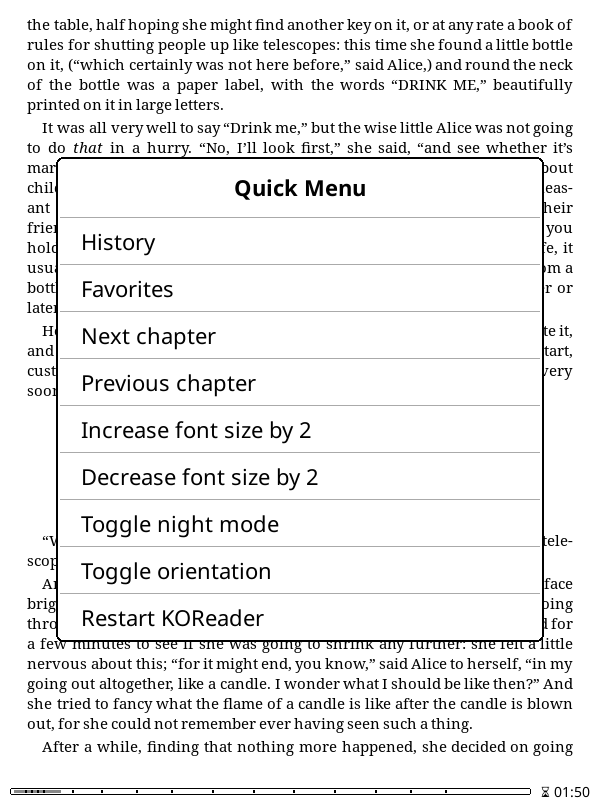
Bir Hızlı Menü oluşturmanın iki yöntemi vardır: Kolay ve Gelişmiş. Yalnızca bir menüye ihtiyacınız varsa Kolay yöntem sizin için yeterli olacaktır. Farklı hareketlerle farklı menüler göstermek istiyorsanız Gelişmiş yöntemi kullanmanız gerekir. Gelişmiş yöntemin bir başka avantajı da hareketin daha kolay yeniden atanabilmesidir. Menünüzün hareketini değiştirmek isterseniz Gelişmiş yöntem menüsüyle onu kolayca başka bir harekete taşıyabilirsiniz. Kolay yöntemi kullanırken başka bir hareket kullanmak isterseniz menünüzü yeni hareketin altında yeniden oluşturmanız gerekir.
- Hareket Yöneticisi menüsüne şu yolla gidin:
ÜST MENÜ / / Dokunmalar ve Hareketler / Hareket Yöneticisi
- Menünüzü açmak için bir hareket belirleyin ve ona dokunun.
- Hareket yapılandırma menüsünden menünüzde görmek istediğiniz eylemleri seçin. Elbette aynı anda birçok eylem seçebilirsiniz.
- Tüm eylemlerinizi seçtikten sonra KOReader'a bu hareketi bir menü olarak ele almasını söyleyeceksiniz. Bunu, aşağıdaki resimde görebileceğiniz gibi ikinci sayfadaki Hızlı Menü olarak göster öğesini etkinleştirerek yaparsınız.
- Menü öğelerinizi aynı menüdeki Eylemleri ve Hızlı Menü ayırıcılarını düzenle seçeneğiyle sıralayabilirsiniz.
Artık menünüzü seçtiğiniz hareketle açabilirsiniz. Menü öğelerini değiştirmek isterseniz hareket sayfasını açıp öğe ekleyebilir/kaldırabilirsiniz.
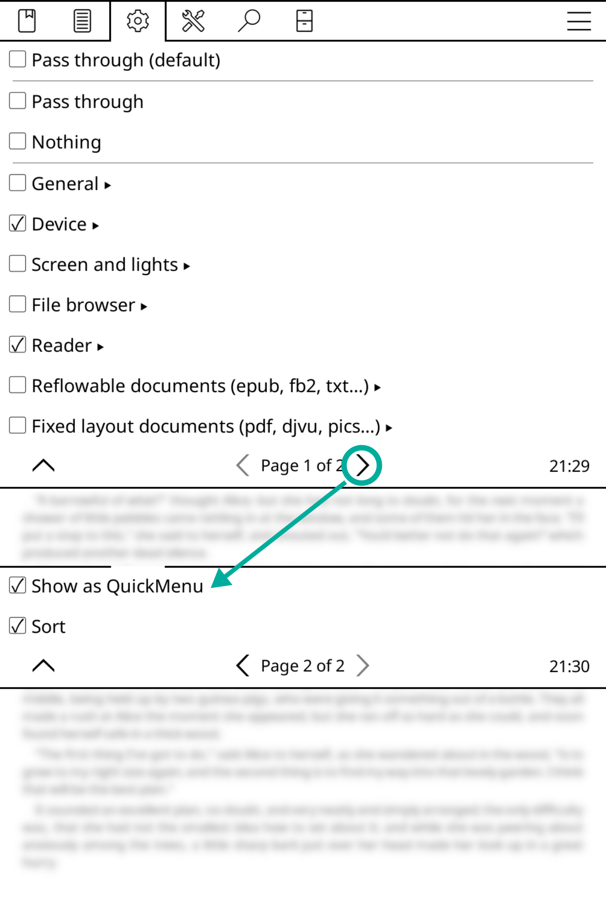
Bu Hızlı Menü aslında ekranınızda bir menü olarak görünen bir Profildir. Bu yüzden önce Profiller hakkında bilgi edinmeniz gerekir. Onları nasıl kullanacağınızı zaten biliyorsanız okumaya devam edebilirsiniz; aksi takdirde Profiller başlığına (sonraki bölüm) atlayın, birkaç öğe içeren bir Profil oluşturun ve buraya geri dönün.
Devam etmeden önce, önceki paragrafta anlatıldığı gibi bir Profil oluşturduğunuzu varsayıyoruz. Şimdi Profilimizi bir Hızlı Menüye dönüştüreceğiz.
1. Yeni oluşturduğunuz Profile gidin ve Eylem listesinde göster seçeneğini etkinleştirin (aşağıdaki görselde gösterilmiştir). Bu, Profilinizi Hareket Yöneticisinde görünür hale getirir. Ayrıca profilinizin sessizce çalıştırılmak yerine bir menü olarak gösterilmesi için Hızlı Menü olarak göster seçeneğini de etkinleştirin (yine aşağıdaki görselde).

2. Şimdi menümüze erişmenin bir yoluna ihtiyacımız var. Hareket Yöneticisine gidin ve listeden menümüze atanacak bir hareket seçin. Diyelim ki menüyü göstermek için ekranın köşesine dokunmak istiyoruz. Şimdi Köşeye dokunma öğesine, ardından Sol alt öğesine dokunun. Şimdi Genel öğesine dokunun ve ikinci sayfaya gidin. Profilinizi Profil x olarak bulacaksınız; burada x, bu Profile verdiğiniz addır. Profilinizi bu harekete atamak için onay kutusuna dokunun.
Tüm adımlardan sonra artık sol alt köşeye dokunduğunuzda menünüzü görmelisiniz. Menünüzü, öğe ekleyip kaldırabileceğiniz Profil sayfasına giderek düzenleyebilirsiniz. Ayrıca orada menü öğelerinizin sırasını değiştirebilmeniz için bir Sırala öğesi de vardır.
Dediğimiz gibi, bir Hızlı Menü aslında bir Profildir. Bu, birden fazla menünüz olabileceği anlamına gelir. İsterseniz başka bir Profil oluşturup aynı adımları izleyerek başka bir menü oluşturabilirsiniz.
Normalde Hızlı Menünüzde bir öğe seçtikten sonra menü ekrandan kaybolur. Bazen bir öğe seçtikten sonra menünün açık kalmasını isteyebilirsiniz. Bu, şu örneklerdeki gibi ayarları yapmanızı sağlar:
- Parlaklık artırma/azaltma, daha büyük/küçük yazı boyutu, önceki/sonraki sayfalar veya bölümler gibi kademeli değişiklikler.
- Wi-Fi'yi açmak ve ardından SSH sunucusunu başlatmak gibi art arda (ama aynı anda değil) etkinleştirdiğiniz seçenek grupları
Hareket Yöneticisi tabanlı (Kolay yöntem) bir Hızlı Menünüz varsa bu seçeneği şu menüden etkinleştirebilirsiniz:
/ Dokunmalar ve Hareketler / Hareket Yöneticisi / "Hızlı Menü hareketiniz" / Hızlı Menüyü açık tutYa da Profil tabanlı (Gelişmiş yöntem) bir Hızlı Menünüz varsa şu menüden:
Hızlı Menü normalde ekranın ortasında açılır. E-okuyucunuzu tek elle kullanıyorsanız menünüzü hareket konumunda açacak bir ayarı etkinleştirebilirsiniz. Böylece menü parmağınıza daha yakın olur ve erişimi kolaylaşır. Bu özelliği kullanmak için şu seçeneği etkinleştirin:
/ Dokunmalar ve Hareketler / Hareket Yöneticisi / "Hızlı Menü hareketiniz" / Hızlı Menüyü hareket konumuna sabitleHızlı menünüze eylem eklemenin yanı sıra profillerinizi de bir menü öğesi olarak ekleyebilirsiniz. Böylece bu tek menü öğesiyle birçok eylemi aynı anda çalıştırabilirsiniz.
Çalışan bir hızlı menünüz ve bu menüye eklemek istediğiniz bir profiliniz olduğunu varsayıyoruz. Bunlar hazırsa şu talimatları izleyin:
- "Menü öğesi" olarak kullanmak istediğiniz profilin Ayarlarına gidin ve Eylem listesinde göster seçeneğini etkinleştirin. Bu, profilinizi Hareket yöneticisinde görünür hale getirir.
- Artık bu profili Hareket Yöneticisinden normal bir eylem olarak hızlı menünüze ekleyebilirsiniz. Bu profili Hareket yöneticisinin Genel alt menüsünün son sayfasında bulabilirsiniz.
Profilinizi bir menü öğesi olarak ekledikten sonra hızlı menünüzü açıp bu öğeye dokunarak profildeki tüm eylemleri çalıştırabilirsiniz. Ayrıca bir profili, iç içe bir menüye sahip olmanızı sağlayan bir alt menü olarak da ekleyebilirsiniz. Bu yöntem bir sonraki başlıkta açıklanmıştır.
Bir hızlı menüyü başka bir hızlı menüye menü öğesi olarak da ekleyebilirsiniz. Bu size iç içe bir menü yapısı sağlar. Bu, çok sayıda hızlı menünüz olduğunda ancak her birine farklı hareketler atamak istemediğinizde kullanışlıdır.
- "Alt menü" olarak kullanmak istediğiniz profilin Ayarlarına gidin ve Eylem listesinde göster seçeneğini etkinleştirin. Bu, profilinizi Hareket yöneticisinde görünür hale getirir.
- Ardından alt menü profilinin aynı Ayarlarındaki Eylemleri düzenle menüsüne girin. Şimdi ikinci sayfadaki Hızlı Menü olarak göster seçeneğini etkinleştirin. Bu, KOReader'a bu profile dokunduğunuzda tüm eylemlerini çalıştırmak yerine onu içine girebileceğiniz başka bir menü olarak ele almasını söyler.
- Artık bu profili Hareket yöneticisindeki diğer eylemler gibi üst hızlı menünüze ekleyebilirsiniz. Alt menü profilinizi Genel sekmesinin son sayfasında bulabilirsiniz.
Profil, temelde tek bir hareketle tetiklenebilen bir eylemler bütünüdür (bir makro gibi).
Örneğin bazı tür kitapları okurken her zaman şunları yaptığınızı düşünün:
- Ekranı yatay yönlendirmeye döndürürsünüz
- Yazı tipi boyutunu ve kontrastı artırın ve
- Ekran ışığını açarsınız
Profiller eklentisiyle tüm bunları tek bir eylemle aynı anda yapabilirsiniz.
Bir profil oluşturmak için önce Profiller eklentisinin etkin olduğundan emin olun. Onu şurada görmüyorsanız:
o zaman onu şuradan açmanız gerekir:
Profiller menüsünde Yeni öğesine dokunun ve profiliniz için açıklayıcı bir ad verin. Artık yeni profilinizi menüde görmelisiniz. Ona dokunduğunuzda sol taraftaki ekranı görürsünüz. Bu menüden bir profili Silebilir, Yeniden adlandırabilir veya Çoğaltabilirsiniz.

Eylemleri düzenle menü öğesine dokunduğunuzda sağdaki menüyü görürsünüz. Bu, hareket seçim menüsüyle aynı menüdür ve birçok kategoride eylemler içerir. Yani bir Profil kullanarak herhangi bir Hareket eylemini gerçekleştirebilirsiniz.
Artık tüm bu kategorilerden birkaç öğe seçebilirsiniz. Burada seçtiğiniz eylemler bu profili etkinleştirdiğinizde gerçekleştirilir.
Bir profili etkinleştirmenin birçok yolu vardır:
- Menüsündeki Çalıştır eylemiyle.
- Bir hareket kullanarak. Bunun için profilin menüsünden Eylem listesinde göster seçeneğini etkinleştirmeniz gerekir. Artık onu şu yolla seçebilirsiniz:
ÜST MENÜ / / Dokunmalar ve hareketler / Hareket yöneticisi / "HERHANGİ BİR HAREKET" / Genel / Profil "PROFİL ADINIZ"
- Hızlı Menünüzden.
- Bir profili bazı koşullara bağlı olarak otomatik olarak da etkinleştirebilirsiniz. Bu güçlü özelliğin nasıl kullanılacağını öğrenmek için sonraki başlığa bakın.
Bir profili yukarıda açıklandığı gibi elle çalıştırabilirsiniz, ancak profillerin asıl gücü otomatik çalıştırma özelliğiyle ortaya çıkar. Bu özelliği kullanarak bir profili bazı koşullara ve alt koşullara bağlı olarak tetikleyebilirsiniz:
| Tetikleyici | Alt koşullar |
| Yalnızca zaman aralığı içinde
Bu seçenek bir tetikleyici değil, bir sınırlayıcıdır. Bu seçeneği profilin çalıştırılması için bir zaman aralığı belirlemek amacıyla kullanabilirsiniz. Örneğin "belirli bir koleksiyondan bir kitap açtığımda yazı tipini büyüt ama yalnızca akşam saatiyse". |
- |
| KOReader başlatıldığında Bu profili KOReader her başladığında çalıştır. Bunun yalnızca KOReader Dosya tarayıcısı veya Son dosya ile başlatıldığında mümkün olduğunu unutmayın. | - |
| Uyandığında
Bu profili cihaz her uyandığında çalıştır | - |
| Ekranı uyandır
Bu profili cihaz her uyku ekranından çıktığında çalıştır | - |
| Döndürüldüğünde
Bu profili ekran seçilen yönlendirme(ler)e döndüğünde çalıştır. Örnekler: Cihaz yataya döndüğünde çift sütunlu düzene geç. Cihaz baş aşağı döndüğünde gece modunu etkinleştir. |
|
| Klasör gösterilirken
Bu profili dosya tarayıcısında bu klasöre girdiğinizde çalıştır. Bu tetikleyiciyi dosya tarayıcısının görüntüleme kipini değiştirmek için kullanabilirsiniz. Örneğin belirli bir klasöre girdiğinizde görüntüleme kipini mozaik görünümden ayrıntılı görünüme değiştirebilirsiniz. |
|
| Kitap açılırken
Bu tetikleyici, bir kitap açtığınızda (isteğe bağlı olarak) belirli alt koşullarla birlikte çalıştırılır. İlk 4 alt koşul VEYA eşleşmesidir; bu nedenle profilin çalıştırılması için bunlardan herhangi biri yeterlidir. |
|
| Kitap kapatılırken
Bu seçenek yukarıdakiyle aynıdır, ancak bir kitabı kapattığınızda tetiklenir. Bunu örneğin belirli belgeleri istatistiklerinizin dışında tutmak için bu belgeleri açtığınızda okuma istatistiklerini etkinleştirmek/devre dışı bırakmak amacıyla kullanabilirsiniz. |
|
| Okuma zamanlayıcısı dolduğunda
Bu profili okuma zamanlayıcısı her bittiğinde çalıştır | - |
| Otomatik gece modu etkinleştirildiğinde
Bu profili Gece Modu (ters çevrilmiş ekran rengi) her açılıp kapatıldığında veya ekran sıcaklığı değiştirildiğinde çalıştır |
Bu tetikleyici her sıcaklık değişikliğinde etkinleşir. Bunu Yalnızca zaman aralığında seçeneğini etkinleştirerek sınırlayabilirsiniz. |
Profil otomatik çalıştırma örnekleri:
KOReader'ın bu güçlü özelliğini kullanma konusunda size fikir vermesi için geliştiricilerimizden bazı profil örnekleri. Örnekler otomatik çalıştırma koşullarını ve koleksiyonlar özelliklerini de içerir:
- Cihazınızı yatay yönlendirmeye çevirdiğinizde iki sütun kipini etkinleştirin.
- Cihazınızı baş aşağı çevirdiğinizde gece modunu etkinleştirin.
- Tüm mangalarınızı bir koleksiyona ekleyin. Ardından bu koleksiyondan bir manga açtığınızda sayfa çevirme yönünü Sağdan Sola çeviren ve sayfa çevirme dokunuşlarını ve kaydırmalarını ters çeviren bir profil oluşturun.
- Çizgi romanlarınızı, hayalet görüntüyü önlemek için ekran yenileme aralığını her sayfaya düşüren bir profili tetikleyebilecek bir koleksiyona ekleyin.
- Periodicals klasöründen bir dosyayı ilk kez açarken yazı biçimini ve yazı boyutunu ayarlayan ve iki sütun kipini etkinleştiren bir profili tetikleyin.
- Sorunlu PDF'lerinizi bir koleksiyona ekleyin; böylece onları açtığınızda bir profil aracılığıyla Otomatik OCR veya Yeniden akış kipi etkinleştirilir.
- Belirli klasörlere girdiğinizde dosya tarayıcısının görüntüleme kipini (kapaklar, ayrıntılı liste vb.) değiştirin.
- Başvuru Kitapları koleksiyonundan bir kitap açarken okuma istatistiklerini kapatın. Kitabı kapatırken istatistikleri yeniden açın.
- Hareket yöneticisinde stil ince ayarlarını kullanılabilir kılarsanız, onları belirli koşullara göre etkinleştiren veya devre dışı bırakan bir profil oluşturabilirsiniz. Örneğin kitabın konumuna/koleksiyonuna veya kitabın üst verilerindeki bir anahtar sözcüğe göre bir "yayıncı stillerini devre dışı bırak VE kullanıcı stil ince ayarlarımı uygula" profilini tetikleyebilirsiniz. Daha fazla bilgi için kılavuzun Stil İnce Ayarları bölümüne bakın.
Normalde bir profili çalıştırdığınızda profildeki tüm eylemler Eylemleri düzenle menüsünde seçtiğiniz sırayla çalıştırılır.
Ancak onları tek tek çalıştırma seçeneğiniz de vardır. Yani bu profili her çağırdığınızda hepsi yerine eylemlerden yalnızca biri (sıradaki) çalıştırılır.
İşte kullanışlı bir örnek:
- Şu eylemlerle bir profil oluşturun
- Sabitlenmiş sayfaya git
- Önceki konuma dön
- Onu Sağ alt köşeye dokunma gibi kolay bir harekete atayın
- Profilin Eylemleri düzenle menüsünden Tek tek çalıştır seçeneğini etkinleştirin
Artık sağ köşeye her dokunduğunuzda sabitlenmiş sayfanız ile okuma konumunuz arasında geçiş yaparsınız. Bu, örneğin kaynakça bölümüne hızla gidip geri dönmek için kullanışlı olabilir.
Profiller, KOReader'ın diğer işlemleri/olaylarıyla çakışmayı önlemek için küçük bir gecikmeyle otomatik olarak çalıştırılır. Ancak bir belgeyi kapatmak gibi bazı durumlarda profilin eylemlerini gerçekleştirebilmesi için hemen çalıştırılması gerekir.
Bu özelliği şuradan etkinleştirebilirsiniz:
Bu seçeneği etkinleştirdiğinizde, örneğin kitap kapatılırken tetikleyicisine sahip bir profilde, profiliniz belge kapatılmadan önce çalıştırılır. Bu durumda düzgün çalışma için bu çalışma sırası gereklidir.
Bir profil için Otomatik çalıştırma seçeneğini her etkinleştirdiğinizde bu Hemen çalıştır seçeneğini de etkinleştirmenizi öneririz. Profilinizin düzgün çalışmadığını fark ederseniz bu seçeneği devre dışı bırakmayı deneyebilirsiniz.
KOReader'da bir eylemler/ayarlar kümemiz vardır ve bu küme iki şekilde oluşturulabilir:
- Bir profil olarak (Gelişmiş Yöntem olarak açıklanır ve settings/profiles.lua içinde saklanır)
- Bir harekete atanmış eylemler listesi olarak (Kolay Yöntem olarak açıklanır ve settings/gestures.lua) içinde saklanır)
Bu küme iki farklı şekilde de çalıştırılabilir:
- Tetiklendiğinde her eylemi (sıralanmış) sırayla uygulayarak (bir Profil olarak)
- Bir Hızlı Menü olarak göstererek
Bir kümeye eylem eklemek/çıkarmak ve Hızlı Menüyü etkinleştirmek/sıralamak aynı eylemler menüsü üzerinden yapılır. Tek fark, Hareket yöneticisindeki eylemler menüsünde iki öğe daha (Geçir) bulunmasıdır; bu yüzden Hızlı Menü olarak göster ve Sırala öğeleri ikinci sayfadadır.
Eklentiler, tarayıcı eklentilerine benzeyen ve temel programın yeteneklerini genişleten küçük KOReader programlarıdır. KOReader'da 3 eklenti kategorisi vardır:
Dahili eklentiler çekirdek programın bir parçasıdır.
- Doğrudan KOReader eklentiler menüsünden erişilebilirler.
- Kurulum gerektirmezler. Onları menüden etkinleştirebilirsiniz.
- Geliştiricilerimiz tarafından denetlendikleri için güvenli kabul edilirler.
- KOReader'ı güncellediğinizde otomatik olarak güncellenirler.
Onları şu yolla etkinleştirebilir/devre dışı bırakabilirsiniz:
Bu grup, KOReader'ın çekirdek mantığının parçası olmayan resmî olmayan eklentileri içerir.
- Elle kurulmaları ve ardından eklentiler menüsünden etkinleştirilmeleri gerekir.
- Elle güncellenmeleri gerekir.
- Depomuza eklendikleri sırada geliştiricilerimiz tarafından denetlendikleri için güvenli kabul edilirler.
Onlara bu sayfadan erişebilirsiniz. Genellikle eklentinin dizinini yukarıdaki sayfadan indirip cihazınızdaki koreader/plugins klasörünün altına kopyalayarak kurulurlar. Ancak olası diğer talimatlar için lütfen eklentinin sayfasına bakın.
Bunlar KOReader ekibinden bağımsız olarak geliştirilen eklentilerdir.
- Elle kurulmaları ve ardından eklentiler menüsünden etkinleştirilmeleri gerekir.
- Elle güncellenmeleri gerekir.
- Geliştiricilerimiz tarafından DENETLENMEZLER; bu yüzden kullanırken riskler olabileceğini unutmayın.
GitHub sayfalarının bağlantılarıyla birlikte bu harici eklentilerin bazı dikkate değer örnekleri:
-
Okuduğunuz metinle etkileşim kurmak için bulut veya yerel modelleri kullanmanızı sağlayan yapay zekâ eklentileri:
- KOAssistant eklentisi: Çok güçlü ve özelleştirilebilir bir yapay zekâ eklentisi. Ek bağlamlar ve talimatlarla özel eylemler oluşturarak metni çevirebilir/açıklayabilir, kitapları/makaleleri karşılaştırabilirsiniz vb. Ollama uyumluluğu sayesinde bilgisayarınızda çalışan yerel modelleri destekler. Çok ayrıntılı talimatlar eklentinin bağlantısı verilen GitHub sayfasındadır.
- Assistant: AI Helper eklentisi: Bu eklentiyi metni sadeleştirmek, açıklamak, tartışmak veya başka dillere çevirmek için kullanabilirsiniz. Birden fazla yapay zekâ sağlayıcısını ve yerleşik/özel istemleri destekler.
- Anki eklentisi: Dahili sözlükte aranan sözcükler için Anki (açık kaynaklı bir bilgi kartı yazılımı) kartları oluşturulmasını sağlayan KOReader eklentisi.
- Zotero eklentisi: Bu eklenti, Zotero (açık kaynaklı bir kaynakça yönetim yazılımı) koleksiyonlarınıza KOReader'dan göz atmanızı sağlar.
- Syncthing eklentisi: Bu eklenti, KOReader üzerinde Syncthing eşler arası dosya eşitleme programını çalıştırmanızı sağlar (yalnızca Kobo cihazlarda test edilmiştir, ancak yazarına göre diğer cihazlarda da çalışabilir). Bu, e-okuyucunuz ile bilgisayarınız/telefonunuz arasında dosyaları otomatik olarak eşitlemeyi mümkün kılar.
Bu harici eklentilerin KOReader projesinin bir parçası olmadığını tekrar belirtmemiz gerekir. Bu yüzden onları kurarken ve kullanırken dikkatli olun.
Daha fazla eklentiyi Github üzerinde şu bağlantılarla bulabilirsiniz:
- Bu bağlantı KOReader eklenti projeleri için arama sonuçlarını açar.
- Bu sayfa koreaderplugin etiketine sahip depoların bir listesini gösterir.
Yapay zekâ destekli kodlamayla KOReader eklenti projelerinin sayısı önemli ölçüde arttı; bu yüzden hangi eklentinin kullanılacağına karar vermek çok daha zor hale geldi. Faydalı eklentiler bulurken bu derlenmiş KOReader kaynakları listeleri işinize yarar:
- Awesome KOReader deposu
- Başka bir Awesome KOReader deposu
Otomatik ön ışık - Ön ışığı ortam ışığı düzeyine göre otomatik olarak açar/kapatır (Yalnızca Kindle Voyage ve Oasis'te kullanılabilir)
Otomatik sıcaklık ve gece modu - Doğal (sarı/turuncu) ışığa sahip cihazlarda ön ışık sıcaklığını ayarlamanızı ve Gece Modunu bir zamanlamaya göre otomatik olarak ayarlamanızı sağlar
Otomatik güç tasarrufu - Belirtilen hareketsizlik sürelerinden sonra cihazı bekleme, uyku veya kapalı duruma geçirir
Otomatik uyku - Seçilen hareketsizlik süresinden sonra cihazı uyku kipine alır (Android işletim sistemi dışındaki tüm e-mürekkep cihazlarda kullanılabilir)
Otomatik sayfa çevirme - Belirlenen bir süreden sonra sayfayı otomatik olarak çevirir
Pil istatistikleri - Cihazınızın pil kullanım istatistiklerini toplar ve gösterir (yalnızca bazı cihazlarda kullanılabilir)
Kitap kısayolları - Bir harekete kitap kısayolu eklemenizi sağlar
Calibre - Calibre kitaplığınızdaki belgeleri Wi-Fi bağlantısı üzerinden doğrudan KOReader cihazlarınıza gönderebilirsiniz. Nasıl yapılacağı için viki sayfamıza bakın.
Kapak tarayıcısı - Dosya tarayıcısı ve geçmiş için kapak görüntüleme kipleri sağlar
Kapak görseli - Geçerli kitabın kapak görselini bir dosya olarak kaydeder (Android/PocketBook/reMarkable cihazlarda kullanılabilir)
Vurguları dışa aktar - Vurguları ve notları yerel dosyalara veya çevrim içi hizmetlere dışa aktarır
Hareketler - KOReader için hareket desteği sağlar
HTTP Inspector - Cihazınızı Wi-Fi üzerinden başka bir cihazdan kontrol etmenizi sağlar - Daha fazla bilgi için aşağıya bakın
Japonca desteği - Yerleşik sözlüğü ve seçim sistemini genişleten, KOReader için Japonca dil desteği
Uyanık tut - Otomatik Wi-Fi bağlantı kesilmelerini önlemek için cihazı uyanık tutar
Arşive taşı - Geçerli belgeyi arşiv klasörüne taşır
Haber İndirici - RSS ve Atom haber girdilerini alır ve HTML dosyaları olarak kaydeder. Nasıl yapılacağı için wiki sayfamıza bakın. (yalnızca bazı cihazlarda kullanılabilir)
OPDS - Çevrim içi kataloglardan kitap indirmenizi sağlar
Algı genişletici - Daha hızlı okumak için çevresel görüşünüzü kullanmanıza yardımcı olur. Kılavuzun şu bölümünde açıklanmıştır: Daha Hızlı Okuma İçin Eklentiler
Profiller - Birden fazla ayarı birleştirerek aralarında geçiş yapılabilen profiller oluşturmanızı sağlar
İlerleme eşitleme - Okuma ilerlemenizi farklı KOReader cihazları arasında eşitler. Nasıl yapılacağı için viki sayfamıza bakın.
Panodan QR - Pano içeriğinden bir QR kodu oluşturur
Okuma zamanlayıcısı - Kullanıcının belirlediği bir süreden sonra bir ileti görüntüleyen geri sayım zamanlayıcısı
Okuma istatistikleri - Bölüm/kitap kalan süre tahminlerinde kullanılmak üzere okuma oturumu istatistiklerini ve okuma hızını hesaplar
SSH - Cihazınıza SSH protokolü üzerinden erişim sağlar. FTP uygulamalarıyla veya destekliyorsa dosya yöneticinizle bile erişebilirsiniz. Nasıl yapılacağı için viki sayfamıza bakın.
Sistem istatistikleri - Bu eklenti aracılığıyla CPU/RAM/PİL bilgilerinizi şurada görebilirsiniz:
/ Yardım / Sistem istatistikleriUçbirim öykünücüsü - Cihazınızda tam uçbirim uygulamalarını çalıştırabilen bir kabuk (komut istemi) başlatır
Metin düzenleyici - Düz metin dosyaları oluşturmak ve düzenlemek için temel bir metin düzenleyici
Saat eşitleme - Cihaz saatini NTP sunucularıyla eşitler
Belge ayarlarında ince ayar - Bir belgenin ayarlarında, belge yüklenmeden önce dış etkenlere göre ince ayar yapılmasını sağlar (yalnızca bazı cihazlarda kullanılabilir)
Wallabag - Bir Wallabag sunucusundaki en son makaleleri ayrı EPUB dosyaları olarak indirir. Daha fazla bilgi için viki sayfamıza bakın.
Bu eklenti, cihazınızı başka bir cihazdan wifi üzerinden kontrol etmenizi sağlar. Cihazınızda KOReader kontrollerini içeren bir sayfa sunan basit bir HTTP sunucusu çalıştırarak işler. Bu sayfaya ağınız üzerinden erişebilir ve okuyucu cihazınızı kontrol edebilirsiniz. Bu eklentinin örnek bir kullanım senaryosunu MobileRead forumunda okuyabilirsiniz.
Ancak bu eklentiyi kullanırken şu noktalara dikkat edin:
- Bu deneysel bir eklentidir, bu yüzden kendi sorumluluğunuzda kullanın
- Bu eklenti varsayılan olarak etkindir, ancak sunucu varsayılan olarak BAŞLATILMAZ. Elle başlatabilir veya otomatik başlatma olarak ayarlayabilirsiniz.
- Bu eklentiyi yalnızca güvenilir ağlarda çalıştırmalısınız, çünkü oldukça güvensizdir (HTTPS yok, erişim kısıtlaması yok, kimlik doğrulama yok)
HTTP Inspector eklentisiyle uzaktan neleri kontrol edebileceğinizi görmek için:
- Cihazınızda HTTP Inspector sunucusunu başlatın:
- E-okuyucunuzla aynı ağa bağlı bir cihazda http://your-ereader-IP:8080/koreader/event sayfasını açın
Listeniz yüklü eklentilere ve kullanıcı yamalarına göre dolacaktır.
Bu, KOReader'ınızı aynı ağdaki Android işletim sistemli bir cihazdan kontrol etmenizi sağlayan bir Android uygulamasıdır. KOReader ile iletişim kurmak için KOReader HTTP Inspector eklentisini kullanır. Sayfa çevirme, metin girme, ekran ışığını ayarlama, profilleri etkinleştirme gibi birçok işlemi uzaktan yapabilirsiniz.
Talimatları görebilir ve uygulamayı proje sayfasından indirebilirsiniz: KOReader Yardımcı Uygulaması
Kullanıcı yamaları, Lua dilinde yazılmış küçük dosyalardır. Kurulumunuzu kalıcı olarak değiştirmeden KOReader'ın işlevselliğini değiştirebilirler. Geliştiriciler, diğer kullanıcılar tarafından yazılabilirler veya (KOReader'ın iç yapısı hakkında gerekli kapsamlı bilgiye sahipseniz) kendiniz de yazabilirsiniz.
Güncel bir Kullanıcı yamaları listesini wiki sayfamızda ve User patch available etiketiyle işaretlenmiş GitHub sorunlar listesinde bulabilirsiniz. Bu bağlantıyı izleyerek görebilirsiniz.
- Cihazınızda koreader dizini altında patches adlı bir dizin oluşturun (Android'de bu klasör SD kartta bulunur)
- .lua uzantılı yama dosyasını indirip bu patches dizinine koyun
- KOReader Yeniden Başlatılsın
Talimatlara göre bir patches dizini oluşturduğunuzda, KOReader yeniden başlatıldıktan sonra eklentiler menüsünde Yama Yönetimi adlı yeni bir eklenti kullanılabilir hale gelir. Bu eklentiyle kullanıcı yamalarınızın listesini ve durumunu görebilir, onları etkinleştirip devre dışı bırakabilirsiniz. Daha fazla bilgi için Yama yöneticisi hakkında menü öğesine dokunabilirsiniz.
Bir yamanın çalıştırılma sırası, yama adındaki sayının ilk basamağına göre belirlenir. Örneğin: 2-TOC-title-patch.lua Aynı basamakla başlayan birden fazla yama varsa, çalıştırma sırası doğal sıralamadır (1<10<11<12<13<…<109<…<10010). Yalnızca önceden hazırlanmış bir yamayı indiriyorsanız dosya adını değiştirmeniz gerekmez.
Şununla başlayan adlar:
- 0 - Bir güncellemeden sonra çok erken ve yalnızca bir kez çalıştırılır
- 1 - KOReader'ın her başlangıcında çok erken çalıştırılır (varsa 0'dan sonra)
- 2 - KOReader'ın her başlangıcında UIManager hazır olduktan sonra çalıştırılır
- 3-7 - Ayrılmış
- 8 - Çıkıştan önce ve ayarlar kaydedilmeden önce çalıştırılır
- 9 - Çıkıştan hemen önce çalıştırılır
Bir kullanıcı yamasıyla sorun yaşarsanız, yama dosyasını kaldırarak önceki yapılandırmanıza dönebilirsiniz.
Bu bölümde önce okuma hızınızı artırabilecek iki KOReader eklentisini açıklayacağız. Ardından okuma hızınızı ve kavrayışınızı geliştirebilecek bazı yazı tiplerini listeleyeceğiz.
Etkinleştirdiğinizde bu eklenti, aşağıdaki görselde görebileceğiniz gibi okuma alanına sol ve sağ kenarlara yakın iki dikey çizgi ekler. Bu çizgiler, kitabınızdan bir satır okurken gözleriniz için başlangıç/bitiş işaretleri görevi görür. Bu eklentinin çalışma prensibi, bir satırın ilk ve son kelimelerine doğrudan bakmanıza gerçekten gerek olmadığı gerçeğine dayanır, çünkü biraz pratikle onları çevresel görüşünüzle algılayabilirsiniz.

- Gri dikey çizgiler: Algı genişletici göstergeleri
- Kırmızı çizgi: Metni normal şekilde takip eden gözleriniz
- Mavi çizgi: Göstergeler arasında atlayan gözleriniz (daha kısa mesafe)
Bu eklentiyi kullanmak için önce şuraya giderek etkinleştirmeniz gerekir:
Eklentiyi etkinleştirdikten sonra burada yeni bir menü öğeniz olacak:
Bu menüden genişletici çizgilerini açıp kapatabilir ve göstergeleri zevkinize ve çevresel görüş beceri seviyenize göre yapılandırabilirsiniz. Bu eklentiye ilham veren Tim Ferriss videosunu buradan izleyebilirsiniz.
Bu eklenti bir RSVP (Hızlı Seri Görsel Sunum) okuyucusudur. Bu teknik, kelime(ler)in ekranın ortasında hızla gösterilmesine dayanır. Bu şekilde okurken gözlerinizin hareket etmesi gerekmez, bu yüzden okuma hızı daha yüksek olabilir. Beceriyi geliştirirseniz, aynı anda birden fazla kelimeyi algılayabilirsiniz, bu da okuma hızını daha da artırır.
Bu eklentiyi kullanmak için önce şuraya giderek etkinleştirmeniz gerekir:
Eklentiyi etkinleştirdikten sonra burada yeni bir menü öğeniz olacak:
Eklentiyi bu menüden başlatabilir ve şu gibi ayarları yapılandırabilirsiniz:
- RSVP speed - Dakikadaki kelime (WPM) cinsinden gösterim hızı
- Önizleme kelimeleri - Aynı anda kaç kelime gösterileceği
Eklentiyi tek kelime ve düşük WPM (daha yavaş) modunda kullanmaya başlayabilir ve geliştikçe bunları artırabilirsiniz.
Bu bölümde okuma deneyiminizi iyileştirebilecek bazı yazı tiplerini göstereceğiz. Bu yazı tipleri KOReader'a özgü bir özellik değildir, ancak kullanıcılarımız bazen sorunlarımızda ve tartışmalarımızda bunları sorduğu için burada yer veriyoruz.
Bu yazı tiplerini diğer yazı tipleri gibi yükleyebilirsiniz. Cihazınıza nasıl yazı tipi ekleyeceğinizi bilmiyorsanız, bunu Kendi Yazı Tiplerinizi Kullanma bölümünde açıklıyoruz.
Bu bölümdeki yazı tiplerine genel bakış (bu görseldeki tüm yazı tiplerinin aynı boyutta - 11 pt - olduğunu ancak genişliklerinin, satır yüksekliklerinin ve okunabilirliklerinin çok farklı olduğunu unutmayın):
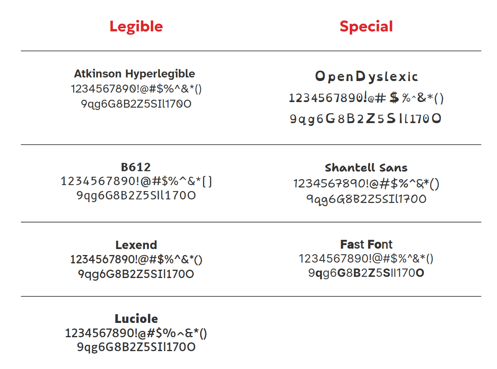
Atkinson Hyperlegible
Braille Institute tarafından tasarlanan bu yazı tipi ailesi, az gören bireyler için okunaklılığı ve okunabilirliği artırmayı amaçlar. Net ve oldukça ayırt edici harf ve rakamlara sahiptir. Yazı tipini buradan görebilir ve indirebilirsiniz
B612
B612, Airbus uçaklarının kokpit ekranlarında kullanılmak üzere tasarlanmış, oldukça okunaklı bir yazı tipi ailesidir. Okunaklı tasarımı onu özellikle zorlu koşullar için uygun kılar ve görsel yorgunluğu ve bilişsel yükü azaltmayı amaçlar. Bu tasarım ilkeleri onu e-okuyucular için de uygun bir yazı tipi yapar. Yazı tipini Google Fonts üzerinden görebilir ve indirebilirsiniz
Lexend
Bu yazı tipinin tasarımı, öğrencilerin okuma performansını artırmayı amaçlayan eğitim çalışmalarından türetilen ilkelere dayanır. Yazı tipi hakkında buradan okuyabilir ve Google Fonts üzerinden indirebilirsiniz
Luciole
Bu yazı tipi, görme engelliler için mümkün olan en iyi okuma deneyimini sağlamak üzere bir düzine özel tasarım ölçütüne uyar. Harflerin "iç" boşluğunu vurgular ve son derece net, ayırt edici rakamlara ve matematiksel sembollere sahiptir. Yazı tipini buradan görebilir ve indirebilirsiniz
Open Dyslexic
Bu yazı tipi, disleksisi olan okuyucular için okunabilirliği artırmak üzere tasarlanmıştır. Harflerin alt kısımları, yönü vurgulamak için ağırlıklıdır. Her harfin benzersiz şekli, ters dönme ve yer değiştirme kaynaklı karışıklıkları önleyebilir. Buradan indirebilirsiniz
Shantell Sans
Bu yazı tipi, disleksisi olan bir yazar tarafından okunaklı, erişilebilir ve kolay okunan bir yazı karakteri olarak tasarlanmıştır. Daha geniş harfleri ve rahat aralıkları sayesinde küçük metinlerde de iyi çalışır. Google Fonts üzerinden indirebilirsiniz
Fast Font
Bu, bir kelimenin ilk birkaç harfini kalın biçimleriyle değiştiren özel bir yazı tipidir (harf sayısı kelime uzunluğuna göre hesaplanır). Bu kalın harfler göz için yapay sabitleme noktaları görevi görür, bu cümlede gördüğünüz gibi gözün üzerlerine atlamasını sağlar. Teoride bu, okuma hızını artırabilir ancak elbette kişisel sonuçlar farklılık gösterebilir. İlginç bir şekilde, DEHB olan okuyucular genellikle fayda gördüklerini bildirir.
Bu yazı tipi, KOReader tarafından desteklenen özel OpenType özelliklerine dayanır. Bu yüzden yazı tipini indirip cihazınıza kopyalayabilir ve diğer yazı tipleri gibi kullanabilirsiniz. Örnekleri görebilir, bu yazı tipini ve varyasyonlarını (serif, monospace ve noktalı) GitHub deposundan indirebilirsiniz
- Belgeler arasında hızlıca geçiş yapma
- Bir sayfanın satır/kelime sayısını görme
- Kitap kapağını değiştirme
- Belgelerden uyku ekranı duvar kağıdı oluşturma
- Bağlantıların yanlışlıkla açılmasını önleme
- Gece yarısından sonra okuma istatistikleri
- Dikey biçimlendirilmiş kitapları okuma
İki belge arasında geçiş yapmanız gerekiyorsa (örneğin onları karşılaştırırken), Dosya Tarayıcısı üzerinden gitmekten daha hızlı bir yol vardır. KOReader son belgeyi bir hareketle açabilir ( çoklu kaydırma). Bir hareketin eylemini Önceki belgeyi aç olarak tanımlarsanız, masaüstü bilgisayarlardaki Alt+Tab özelliğine benzer şekilde iki belge arasında hızlıca geçiş yapabilirsiniz. Bu özelliği şurada bulabilirsiniz:
/ Dokunmalar ve hareketler / Hareket yöneticisi / "HERHANGİ BİR HAREKET" / Genel / Önceki Belgeyi AçBelgeler arasında hızlıca geçiş yapmak için Geçmiş iletişim kutusunu da kullanabilirsiniz. Geçmiş ekranı çoklu kaydırma hareketiyle açılabilir. Elbette bunun için başka herhangi bir hareket de tanımlayabilirsiniz.
Geçerli sayfada kaç satır veya kelime gösterildiğini öğrenmek istiyorsanız bunu şurada görebilirsiniz:
/ Kitap bilgileriKitap kapağınızı bu menüden değiştirebilirsiniz:
/ Kitap bilgileri / (uzun dokunma) Kapak görseli: / Özel ayarlaBazı kitaplar düzgün kapaklarla gelmez. Ya da kapakları ikinci sayfada olabilir, bu yüzden düzgün görünmez. Ya da kapak e-mürekkep için uygun olmayabilir (çok açık veya çok koyu). Ya da kitaptan bir görseli kapak olarak ayarlamayı tercih edebilirsiniz.
Bu gibi durumlarda hızlıca bir ekran görüntüsü alıp onu geçerli kitabın kapağı olarak ayarlayabilirsiniz. Bulunduğunuz yere bağlı olarak iki ekran görüntüsü hareketi vardır:
- Okuyucu modundaysanız ve dosya tarayıcısındaysanız varsayılan ekran görüntüsü hareketi uzun çapraz kaydırma
- Görüntü görüntüleyicisindeyseniz alternatif ekran görüntüsü hareketi köşelere iki parmakla büyük çapraz dokunma
Görüntü görüntüleyicisinde, ekran görüntüsünü almadan önce görüntüyü yakınlaştırıp kaydırabilirsiniz, böylece görüntü esnetilmeden cihazınızın tam boyutuna ve en-boy oranına göre kırpılır.
Ekran görüntünüzü aldıktan sonra iletişim kutusundan Kitap kapağı olarak ayarla seçeneğini seçebilirsiniz.
Özel kitap kapağını bu menüden kaldırabilirsiniz:
/ Kitap bilgileriKitap bilgileri sayfasında, Kapak görseli öğesine uzun basın ve ardından Özeli sıfırla seçeneğini seçin.
Kitap kapağını, Dosya Tarayıcısı içinde dosya adına uzun basarak erişebileceğiniz Sıfırla iletişim kutusuyla da sıfırlayabilirsiniz.
Belgenizde bağlantılar varsa ve sayfa çevirirken veya başka hareketler kullanırken yanlışlıkla bunlara dokunuyorsanız, Dokunarak bağlantıları izleme özelliğini şu menü öğesinden kapatabilirsiniz:
/ Dokunmalar ve Hareketler / Bağlantılar / Bağlantıları izlemek için dokunBu ayarı devre dışı bıraktıktan sonra, bir bağlantıyı izlemek için ona uzun dokunup açılır menüden Bağlantıyı izle seçeneğini seçmeniz gerekir. Tersi bir sorununuz varsa ve bağlantılara dokunmayı kolaylaştırmak istiyorsanız, aynı menüden Bağlantıların etrafında daha geniş dokunma alanına izin ver seçeneğini etkinleştirebilirsiniz.
Okuma istatistiklerinde, hesaplamalar için kullanılan gün başlangıcını değiştirebilirsiniz. Bu, örneğin gece yarısından sonra okuyorsanız ve okuma oturumunuzun ertesi gün yerine bugün sayılmasını istiyorsanız faydalıdır. Bu yalnızca Günlük zaman çizelgesi görünümü için ve isteğe bağlı olarak Takvim görünümü için geçerlidir; diğer istatistik raporlarının hiçbirine uygulanmaz. Bu saati şuradan ayarlayabilirsiniz:
Şu anda resmi KOReader, dikey metin olarak biçimlendirilmiş kitapların (tategaki - 縦書き) işlenmesini desteklemiyor, ancak kullanıcılarımızdan biri bunu yapabilen bir çatal oluşturdu. Temelde dikey metin işleme eklenmiş bir KOReader klonudur.
Bu çatalın ana hedefi Japonca dikey yazımdır. Ancak uygulama, işleme motoru düzeyinde EPUB writing-mode: vertical-rl desteklediğinden, diğer dikey yazım dilleri için de çalışabilir. Çinli kullanıcılardan gelen geri bildirimlere göre en azından Çinceyi de işleyebiliyor.
Bunun bir çatal olduğunu (eklenti veya kullanıcı yaması değil) ve KOReader'ınızın yerini tamamen aldığını unutmayın. Ancak sıradan yatay kitaplar resmi KOReader'dakine çok benzer şekilde davranır, bu yüzden bu değişiklik işlevsel olarak eşdeğer olmalıdır.
Mevcut KOReader'ınızı önce kaldırmadan bu çatala geçebilirsiniz. Sadece çatalın deposundaki talimatları izleyin. Depomuzdaki geliştirme tartışması burada.
Bu çatala geçerseniz, dikey metinle ilgili sorular/sorunlar için resmi KOReader deposu yerine lütfen çatalın deposunu kullanın.
- KOReader'ı güncelleme
- Parola kilidi ekleme
- KOReader'ı başka bir cihazdan kontrol etme
- Otomatik ekran karartma
- Pil sağlığını optimize etme
- Pil tüketimi ayrıntılarını kontrol etme
- Ayrıntılı cihaz istatistiklerini kontrol etme
- Bellek kullanımını takip etme
KOReader kendini Wi-Fi üzerinden güncelleyebilir. Denetimi şu menü öğesiyle başlatabilirsiniz:
/ Güncelle / Güncellemeyi denetleKOReader'da bunun için doğrudan bir seçeneğimiz yok. Ancak bu tür bir kilit ekranı işlevselliği elde etmek için bir geçici çözüm var. KOReader'ı, seçtiğiniz bir hareketi girene kadar uyku ekranını ekranda tutacak şekilde ayarlayabilirsiniz. Bunu yapmak için:
- Herhangi bir hareketi seçin (özel çoklu kaydırmalı karmaşık olanlar dahil) ve şuraya giderek onu "kilit açma" hareketiniz yapın:
ÜST MENÜ / / Dokunmalar ve hareketler / Hareket yöneticisi / "HERHANGİ BİR HAREKET" / Cihaz / Uyku ekranından çık
- Ardından şu seçeneği etkinleştirin:
ÜST MENÜ / / Ekran / Uyku ekranı / Uyandıktan sonra ekran güncellemesini ertele / 'Uyku ekranından çık' hareketine kadar
Açık kaynaklı bir Android uygulaması kullanarak KOReader'ınızı aynı ağdaki Android işletim sistemli bir cihazdan kontrol edebilirsiniz. KOReader ile iletişim kurmak için KOReader HTTP Inspector eklentisini kullanır. Sayfa çevirme, metin girme, ekran ışığını ayarlama, profilleri etkinleştirme gibi birçok işlemi uzaktan yapabilirsiniz.
Talimatları görebilir ve uygulamayı proje sayfasından indirebilirsiniz: KOReader Page Turner Companion
Cihazınız bir süre boşta kalırsa KOReader pili korumak için ön ışığınızı karartabilir. Bu özelliği şuradan açıp ayarlayabilirsiniz:
/ Ekran / Otomatik karartıcıLi-ion piller, şarj seviyelerinin uç noktalarında daha fazla yıpranır. Bu yıpranmayı en aza indirmek ve pil ömrünüzü uzatmak için minimum deşarj seviyenizi %20 ve maksimum şarj seviyenizi %80 ile sınırlayabilirsiniz (elektrikli araçlarda ve bazı yeni telefonlarda olduğu gibi). Bu, pil %20'ye düştüğünde cihazınızı şarj etmeye başlamanız ve %80'e ulaştığında fişten çekmeniz anlamına gelir (ekstra dikkatliyseniz %30-%70).
KOReader, şarj seviyesi tanımladığınız sınırlara ulaştığında bir uyarı göstererek sizi uyarabilir:
/ Cihaz / Cihaz Durumu Uyarıları / Pil SeviyesiAyrıntılı pil kullanım istatistiklerinizi şu menü öğesinden görebilirsiniz:
CPU/DİSK ALANI/RAM kullanımı gibi sistem bilgilerinizi şu menü öğesinden görebilirsiniz:
/ Yardım / Sistem istatistikleriEski Kindle cihazlarda bazı kullanıcılarımız sınırlı bellek nedeniyle çökmeler bildirdi. Bir oturumda çok sayıda dosya açarsanız KOReader'ın bellek kullanımı artabilir. Özellikle PDF'ler bu miktarı artırır. Çökmeleri veya yeniden başlatmaları önlemek için DURUM ÇUBUĞU'nuza bir bellek göstergesi ekleyebilir ve bu değer yükseldiğinde KOReader'ı yeniden başlatabilirsiniz.
/ Durum çubuğu / Durum çubuğu öğeleri / KOReader bellek kullanımıAyrıca bellek kullanımı bir eşiğe ulaşırsa KOReader'ı otomatik olarak yeniden başlatacak şekilde şuradan yapılandırabilirsiniz:
/ Cihaz / Cihaz Durumu UyarılarıSorununuza bu kılavuzda bir çözüm bulamazsanız, projenin GitHub sayfasında bununla ilgili bir sorun açabilir veya Mobileread forumunun KOReader bölümünde bir gönderi paylaşabilirsiniz. Ayrıntılar için lütfen bu kılavuzun BİZE ULAŞIN bölümüne bakın.
- Pil tükenmesi sorunları
- Kitabım yavaş
- Sayfa çevirirken gölgelenme
- Uyku ekranında gölgelenme
- İlerleme Eşitleme sorunları
- Uyku kapağı sorunları
- Dokunmalar uzun/çift dokunma olarak algılanıyor
- KOReader SD karta yazamıyor
- KOReader ayarlarınızı yedekleyin
- Android cihazlarda KOReader'ı sıfırlama
- Amazon Kindle cihazlarda reklamları devre dışı bırakma
- Okurken kenardaki küçük sayılar
- Durum çubuğum kayboldu
- Metin girinti sorunları
- Kitap kapağı önbellek veritabanını temizleme
- Dosya önbelleğini temizleme
- Nightly Sürüm Nedir?
KOReader pili çok verimli kullanır. Bu yüzden e-okuyucu cihazınızın pili KOReader kullanırken anormal şekilde tükenmeye başladıysa, genellikle ilk şüpheli pilin yıpranmasıdır.
Ancak pilinizin sağlıklı olduğundan ve tükenmenin yalnızca KOReader'da gerçekleştiğinden eminseniz, nedeni şunlar olabilir:
- Sorunlu bir yazılım (firmware) güncellemesi
- Üçüncü taraf bir eklenti
- Bir kullanıcı yaması
Pil tükenmesi sorununuz varsa izlemeniz gereken adımlar şunlardır:
- Cihazınızı en son yazılım (firmware) sürümüne güncelleyin. Cihazınız için yazılım güncellemesi yoksa bir sonraki adıma geçin.
- Yazılımınızı güncellemek tükenme sorununu çözmezse, yüklediğiniz tüm üçüncü taraf eklentileri ve kullanıcı yamalarını kaldırın ve KOReader'ı yeniden başlatın.
- Tükenme sorunu ilk iki adımdan sonra da devam ederse, son seçenek cihazınızı fabrika ayarlarına sıfırlamak ve KOReader'ı yeniden yüklemektir (ana kütüphane klasörünüzü yedeklemeyi unutmayın).
Sorununuz devam ederse GitHub sayfamızda bir sorun açabilirsiniz.
Belirli bir dosya yavaşsa ipuçları ve çözümler için lütfen kılavuzun Belgeleri Optimize Etme bölümüne bakın.
Tüm kitaplarınız yavaşsa, sorununuz cihazla ilgili olabilir:
- Çok yavaş CPU veya düşük RAM.
- Flash belleğiniz (kitaplarınızın bulunduğu yer) yıpranıyor olabilir; bu genellikle cihazın eskimesinden kaynaklanır.
- Depolama alanınız tükeniyor olabilir.
- Android tabanlı bir cihaz kullanıyorsanız, Android işletim sisteminiz KOReader'ın çalışmasına müdahale ediyor olabilir veya bazı arka plan işlemleri sistem kaynaklarınızı kullanıyor olabilir.
Sorun açma:
Bu sorunla ilgili bir sorun açıyorsanız, sorunlu dosyayı incelememiz önemlidir. Dosyayı ZIP olarak sıkıştırdıktan sonra GitHub mesajınıza sürükleyip bırakarak doğrudan paylaşabilirsiniz. Kitabınız bir EPUB ise ve telif hakkı veya gizlilik nedeniyle dosyayı paylaşmak istemiyorsanız, Calibre için ScrambleEbook adlı bir eklenti vardır; indirme bağlantısına ve talimatlara bu Mobileread forum sayfasından erişebilirsiniz.
Bu eklenti, DRM'siz bir e-kitap dosyasını (EPUB/KEPUB/AZW3) okur ve metni rastgele karakterlerle değiştirilmiş bir kopyasını oluşturur. Bu karıştırılmış sürümü sorun başlığınızda bizimle paylaşabilirsiniz. Kitabın metni okunamaz olacak ve herhangi bir telif hakkı ihlali olmayacak, ancak bu dosyayı yine de tanı amaçlı kullanabiliriz.
Bu prosedürü çok sorunlu bir EPUB dosyasını içeren gerçek bir sorunda burada görebilirsiniz.
KOReader her sayfadan sonra tam yenileme yapacak şekilde ayarlanmış olsa bile, sayfa çevirdikten sonra hâlâ bazı gölgelenme/kalıntılar görebilirsiniz. Bu, e-mürekkep ekran teknolojisinin bir sınırlamasıdır ve özellikle karışık içerikli (metin+görsel) belgeler okunurken en yeni nesil cihazlarda bile gözlemlenebilir. Geçici bir çözüm olarak, bu kalıntılar sizi rahatsız ediyorsa sayfayı çevirdikten sonra elle bir kez daha yenileyebilirsiniz (varsayılan olarak kısa çapraz kaydırma hareketi).
Bazı durumlarda (kitap içeriği, uyku ekranı görselinin açıklığı ve okuyucu modeli gibi birçok etkene bağlı olarak) uyku öncesi yenilemeye rağmen uyku ekranınızda bazı gölgelenme/kalıntılar görebilirsiniz. Bundan kurtulmak için yenileme sayısını buradan artırabilirsiniz:
/ Ekran / E-mürekkep ayarları / Uyku ekranı gölgelenme önleyici yeniden çizimlerBu durum, etkinleştirdiyseniz KOReader'ın Vurguları PDF'e yaz özelliğinden kaynaklanıyor olabilir. PDF vurgularını kaydetmek dosyanızı değiştirir, bu yüzden eşitlemeniz başarısız olur. Her iki özelliği de kullanmayı planlıyorsanız, İlerleme Eşitleme eklentisinin ayarlarında Belge eşleştirme yöntemi seçeneğini varsayılan İkili eşleştirme yerine Dosya adı olarak değiştirin:
Uyku kapakları genellikle, cihazınızdaki bir sensörü tetikleyerek uyanma ve uyku olaylarını sağlayan, kapağa gömülü bir mıknatıs kullanır. Bu sensör bazen Hall sensörü veya Hall etkisi sensörü olarak anılır. Hizası kaymış veya zayıf mıknatıslar gibi bazı durumlarda bu tetikleme sorunlu olabilir. Kapağınız nedeniyle cihazınızın uyanmasıyla ilgili sorunlar yaşıyorsanız, bu özelliği şu menüden devre dışı bırakabilirsiniz:
/ Cihaz / Tüm uyku kapağı olaylarını yok sayBu, el titremesi veya cihazın dokunmatik ekran sorunları gibi durumlarda olabilir. Bu sorunu yaşıyorsanız Dokunma aralığı değerini artırmayı deneyebilirsiniz. Bu aralığı artırarak KOReader'a aynı konumdaki hızlı dokunmaları yok saymasını söylersiniz.
/ Dokunmalar ve Hareketler / Hareket aralıkları / Dokunma aralığıArt arda iki dokunuşunuz arasında mesafe varsa bu geçerli olmaz. Böylece iki parmakla dönüşümlü olarak hızlıca dokunarak sayfalar arasında yine hızlıca gezinebilirsiniz.
Android cihazlarda KOReader, Android sistem kısıtlamaları nedeniyle harici depolamaya yazamaz. Ekran görüntüsü kaydetme konumunuzu değiştirmek istiyorsanız, cihazınızın dahili depolamasını seçmeye dikkat edin.
KOReader'ınızı tüm ayarlarınızla birlikte yedeklemek ve geri yüklemek istediğiniz nadir durumlarda, KOReader kurulum dizini altındaki bu klasörleri ve dosyaları yedekleyebilirsiniz. Ardından ayarlarınızı geri yüklemek için temiz bir kurulumdan sonra bunların üzerine yazabilirsiniz:
- settings
- styletweaks
- data/cr3.ini
- defaults.persistent.lua
- history.lua
- settings.reader.lua
- settings/profiles.lua
- data/dict/ ve /data/tessdata/ dizinleri altındaki dosyalar (varsa)
Android işletim sistemli cihazlarda KOReader, ayarlarını Internal Storage/koreader/ dizini altında tutar. Bu, diğer Android uygulamalarından farklı, kasıtlı bir davranıştır. Bu konum, ayarlarınızı kullanıcı tarafından erişilebilen bu dizinde saklayarak KOReader ayarlarınızı kolayca yedeklemenizi ve eşitlemenizi sağlar.
Ancak KOReader'ı kaldırdığınızda veya verilerini Android İşletim Sistemi Ayarları menüsünden temizlediğinizde, bu KOReader ayarları dizini kaldırılmaz. Bu yüzden KOReader'ı kaldırıp yeniden yüklerseniz, eski ayarlarınızla başlar.
KOReader'ı tamamen fabrika varsayılanlarına sıfırlamak istiyorsanız, bu dizini elle silmelisiniz. Bu dizini sildikten sonra KOReader'ı başlattığınızda, varsayılan ayarlarla otomatik olarak yeniden oluşturulur.
Bu teknik olarak mümkündür, ancak ne yazık ki bu okuyucularda varsayılan uyku ekranı davranışını değiştiremiyoruz. Çünkü bu, Amazon'dan olumsuz bir tepkiye yol açabilir; bu da Kindle ekosisteminin kilitlenmesine (Kindle'lar için artık KOReader olmaz) veya hatta tüm projenin tehlikeye girmesine (artık KOReader olmaz) neden olabilir. Daha fazla bilgi için geliştiricilerimizle yapılan bu tartışmayı buradan inceleyebilirsiniz. Tutumumuz, buradan okuyabileceğiniz MobileRead forumlarının tutumuyla uyumludur.
Bu küçük sayılara yayıncı sayfa numaraları denir. Kısacası, kitabınızın basılı sürümündeki gerçek sayfa numaralarıdır. Daha fazla bilgi için ilgili bölüme gitmek üzere buraya tıklayın: Sayfa Numaralandırma.
Muhtemelen ekranın altındaki DURUM ÇUBUĞU dokunma bölgesine dokundunuz. Aynı bölgeye dokunarak onu geri getirebilirsiniz.
Ortalanmamış başlıklar, alt başlıklar veya ayırıcılar ya da beklenmedik metin girintileri görürseniz, belgenizin stilini değiştirmeyi deneyin: epub.css yerine html5.css. Bu tür sorunlar, bazı yayıncıların kitaplarının yalnızca web tarayıcı motoru tabanlı okuyucularda okunacağını varsaymasından ve bu yüzden stilleri "sıfırlama" zahmetine girmemesinden kaynaklanır.
- Varsayılan HTML/EPUB (epub.css), text-align: justify, P üzerinde text-indent içeren kitap odaklı stil sayfamızdır. Stilsiz kitaplar için daha iyidir ve stilli kitapları daha okunabilir hale getirebilir.
- Kitabınızda yukarıda belirtildiği gibi girinti sorunları varsa HTML5 (html5.css) stiline geçmeyi deneyebilirsiniz. Bu stil, web tarayıcılarının işleme sırasında yaptığı gibi temel bir stil sayfası sağlar: text-align: left, P üzerinde text-indent yok, P'ler arasında boşluk. Ancak yayıncılar hiç stil uygulamadığında hoş görünmez.
KOReader, kitap kapaklarınızı daha hızlı gösterebilmek için bir önbellek tutar. Normal koşullarda bu önbellek çok büyümez. Çok sayıda kitap kaldırırsanız veya dizinleri yeniden adlandırırsanız, biraz alan kazanmak için kitap kapağı önbellek veritabanınızı temizlemek isteyebilirsiniz. Bunu şu menüden yapabilirsiniz:
Bir PDF/DJVU belgesi okurken KOReader, okuduğunuz son sayfanın önbelleğini tutar. Böylece kitabı yeniden açtığınızda daha hızlı olur. Ancak KOReader'ı uzun süre kullanıyor ve çok sayıda PDF/DJVU belgesi okuyorsanız bu önbellek büyüyebilir. Bu önbellek dosyaları KOReader kurulum dizininizde cache klasörü altında tutulur. Bu önbelleği temizleyip alanı geri kazanmak için şuraya gidebilirsiniz:
KOReader'ın iki farklı sürümü vardır:
- STABLE Bu, projenin GitHub'ındaki Releases sayfasında bulabileceğiniz ana sürümdür. Şu şekilde adlandırılır: "KOReader 2024.11"; bu, söz konusu sürümün Kasım 2024'te yayınlandığı anlamına gelir. Bu genellikle aylık bir sürümdür, ancak bazen daha uzun sürebilir.
- NIGHTLY Bu sürümler, optimizasyonların ve düzeltmelerin sürekli eklendiği, KOReader'ın günlük derlenmiş sürümleridir. Nightly sürümler dar bir test eden ve geliştirici grubu için tasarlanmıştır, bu yüzden daha az kararlı olabilirler.
Ortalama bir kullanıcıysanız normalde kullanmanız gereken sürüm kararlı sürümdür. Ancak bazı özel durumlarda nightly bir sürüm kullanmanız gerekebilir:
- Cihazınız çok yenidir (örneğin yakın zamanda çıkan bir Kobo modeli) ve KOReader desteği yeni bir nightly sürümde eklenmiştir.
- Cihazınıza özgü, zaten düzeltilmiş ancak henüz yayınlanmamış bir hata veya sorun vardır. Ve bu düzeltmeye sahip olmak için kararlı sürümü beklemek istemezsiniz.
- KOReader'ı güncelledikten sonra kullandığınız bir özelliğin kaldırıldığını fark edersiniz. Bu özelliği kaybetmek istemezsiniz, bu yüzden bu özelliğe hâlâ sahip olan bir nightly sürümü yükleyebilirsiniz. Elbette önceki kararlı sürüme de geri dönebilirsiniz, ancak nightly daha yeni olacağından daha fazla özellik ve düzeltmeye sahip olabilir.
Bu bölüm konuya yalnızca genel bir girişti. Nightly sürümler hakkında ayrıntılı bilgi almak ve yardım istemek için tartışma sayfasını ziyaret edebilirsiniz: FAQ: How to track latest nightly builds
KOReader, proje tabanı olarak GitHub kullanır. Sorunları veya önerileri GitHub sayfamızda bildirebilirsiniz. Yalnızca ücretsiz bir GitHub hesabına ihtiyacınız var. GitHub Issues sayfamızı açmak için bu bağlantıya tıklayın.

Issues sayfasında New Issue düğmesine tıklayın. Ancak bunu yapmadan önce, aynı konuda zaten bir sorun olup olmadığını görmek için arama çubuğunu kullanmanızı öneririz. Süreç hakkında fikir edinmek için açılmış diğer sorunlara da göz atabilirsiniz.
New Issue düğmesine tıkladığınızda size iki seçenek sunulur:
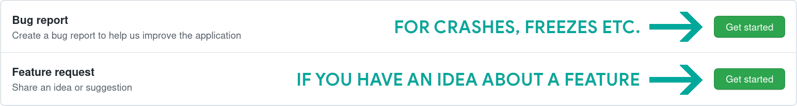
Uygun olana tıklayın ve sorununuzu veya önerinizi bildirmek için sayfadaki talimatları izleyin.
Bir hata bildiriyorsanız, sorunu belirlemek için ayrıntılı hata ayıklama günlükleri çok faydalıdır. Bunları şuradan etkinleştirebilirsiniz:
/ Yardım / Hata bildir / Ayrıntılı günlüğü etkinleştirBildirim için KOReader sürüm numaranızı ve cihaz türünüzü de aynı iletişim kutusunda bulabilirsiniz.
Bu Kullanıcı Kılavuzu ile ilgili bir öneriniz veya sorunuz varsa GitHub tartışma başlığına yazabilirsiniz
Diğer KOReader kullanıcılarını MobileRead forumlarında bulun |
Bize Gitter sohbetinden ulaşın |
Projeyi Liberapay üzerinden destekleyin |